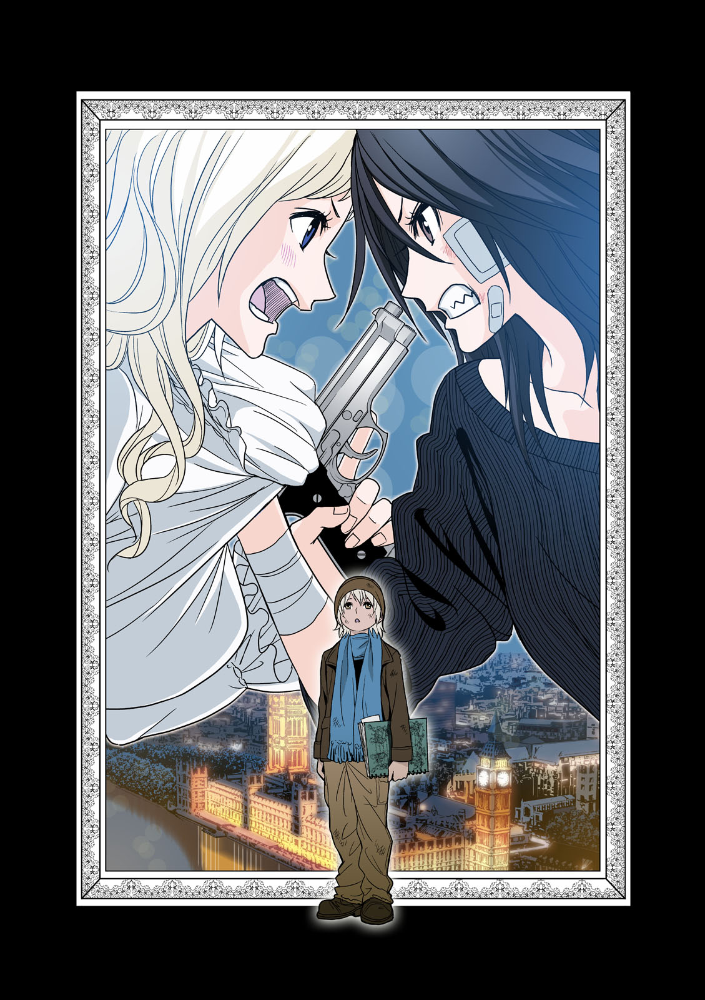

| 【無料版】‐東京ESP外伝‐ロンドンESP | |
| モリテツヤ | |
【無料版】
‐東京ESP外伝‐
ロンドンESP
著：モリテツヤ
イラスト・原作・監修：瀬川はじめ

角川コミックス・エース
本作品の全部または一部を無断で複製、転載、配信、送信したり、ホームページ上に転載することを禁止します。また、本作品の内容を無断で改変、改ざん等を行うことも禁止します。
本作品購入時にご承諾いただいた規約により、有償・無償にかかわらず本作品を第三者に譲渡することはできません。
本作品を示すサムネイルなどのイメージ画像は、再ダウンロード時に予告なく変更される場合があります。
本作品は縦書きでレイアウトされています。
また、ご覧になるリーディングシステムにより、表示の差が認められることがあります。
序章 トルコにて
リアウィンドから入ってくる肌寒い空気が心地よいと、仲代喬は感じた。夜明け前のもっとも暗い時間。質量を感じるような闇に沈む街の風景が後ろに流れていく。静かだった。その静けさが高揚しそうな神経を鎮めてくれると彼は信じていた。
バンの車内には仲代を含む屈強な男四人。全員、国籍も人種も異なっている。しかし、男達の服装はこの街を歩けばすぐに見失ってしまう無個性なものだった。
彼の隣に座っていた若い男ニコライが煙草を取り出し、火をつけようとした。
「やめろ。臭いがうつる」
ニコライは舌打ちをしてタバコをへし折り、窓から投げ捨てた。
男達の中で、仲代が一番年長でリーダーだった。この〝仕事〟の責任を、彼は一身に背負っている。失敗は許されない。なぜなら失敗はそのまま死に直結するからだ。
彼らは傭兵だった。金で雇われ戦場へ赴き、人を殺す。アメリカで起こった９・１１テロ以降、急成長を続け、いまや世界経済の一端を担う花形職業。民間警備企業とも呼ばれ、国や軍を顧客に莫大な利益を上げている。
だが、彼らが走っている場所は戦場ではない。銃声は聞こえず、物や人が焼ける臭いもしない。
ここはトルコ、最大の都市であるイスタンブールの一画であるユスキュダル。ボスポラス海峡を挟んで東西に分かれる街の東側。いわゆるアジア側にある街である。小競り合いが続くシリアとの国境沿いとは違い、ここはヨーロッパにほど近く、安定している。傭兵である彼らは場違いと言えた。
だが、バンにはケースに入ったアサルトライフルやサブマシンガンが積まれている。仲代達も腰にグロックやベレッタなどの拳銃を差し込んでいる。
なぜ彼らはここにいるのか？ それは世界を揺るがしたテロリストの幹部が、ここユスキュダルに潜伏しているという情報を摑んだからだった。
車が急カーブを曲がり、がくんと揺れる。仲代はポケットから携帯端末を取り出し、標的の顔を確認する。もう穴が空くほど見ていたが、人違いは許されない。念には念を。生き残り、成功させるための基本でもあった。
画面に映ったのは若い少女だった。おそらく望遠で撮ったのだろう少女はカメラに気づかず、傍らに立つスーツ姿の男と同じ方向を見つめている。アジア系にしては大きい瞳。陶器人形のように整った顔立ち。髪はいま自分達を覆う闇よりも黒かった。
〝ＭＩＮＡＭＩ ＡＺＵＭＡ（ミナミ アズマ）〟
それが少女の名だった。彼と同じ日本人。日本人の傭兵は少ないが、傭兵の標的となる日本人もまた少ない。
二ヶ月前に日本の首都、東京で大規模テロが起こった。少女と共に写真に写っている男がそのテロの首謀者で、彼女はその娘だった。
写真の男は『教授』と名乗り、都心で〝超能力者達〟による一斉蜂起を扇動した。人智を超えた戦場が突如、東京に現れ、国会議事堂が空を飛び、井の頭公園に墜落した。官民合わせ死傷者は数千人にも及んだという。
彼自身、その光景を信じられない思いで見ていた。基地の食堂でテレビに映し出された戦場はまぎれもなく日本だったのだ。
画面の中で東京が燃えていた。ヘリが次々と落とされ、爆炎が地上を舐めていた。
祖国。といった言葉に思い入れなどない。自分はそこに馴染めず飛び出してきた身だ。だが、その光景に、仲代は言いようのない苦しさを覚えた。見慣れたものが壊れていく。それがこんなにも苦しいのかと彼は初めて知った。
日本の政治中枢である国会議事堂が宙を舞う姿は、仲代だけではなく世界中に衝撃を与えた。テロは鎮圧されたものの、ニュースは連日この異常事態と東京の混乱を取り上げている。さらに、テロ一味のかなりの人数が捕まらず逃亡したことも報じられていた。
そして、彼らの首に懸賞金が懸けられたという情報は一気に世界を駆け巡った。褒賞は生死は問わず。その中でも三千五百万ドル（約三十五億円）という大金がかけられていたのがこの少女。ミナミだった。
会社からすぐにミナミを追う命令が出た。民間警備会社は国から戦争を請け負う一方、賞金が懸けられたテロリストの追跡も仕事にしている。他の面々は志願して採用されたが、仲代はわざわざ指名された。当然、兵士としての腕を買われてのことだろう。だがそれ以上に、同じ日本人であるということが大きかった。
少女の額に銃弾を撃ち込むところを想像する。銃弾はこのうら若き少女の頭蓋をいとも簡単に砕き、壁に脳漿をぶちまけるだろう。哀れと思わなくはなかった。だが、彼女は祖国を混乱に陥れた張本人でもある。
さらに、少女には多額の賞金が懸けられている。それは人生をやり直すには充分すぎるほどの額。彼は引退など考えてはいない。自分は死ぬまでこんなことを続け、こんなことをしている最中に死ぬのだろうと思っている。だが、彼には家族がいた。別れた妻とのあいだに娘が一人。頭が良く、この少女よりも二、三歳ほど若い。娘のために何か残してやりたかった。
妻だった女性は日本を出て行く彼に言った。
「もう金輪際、関わらないで。私にも、娘にも」
当然の言葉だと思った。好きこのんで人を殺す職に就く。日本で普通に育った人間なら理解できるはずがない。だが、彼は違った。幼い頃から暴力の中にいた。平和な日本の中にもそんな場所はある。
そして彼は傭兵になった。
戦場を走り、銃を携え、金を得る、暴力のスペシャリストになった。
彼はもう一度、標的の写真を見る。
撃てるか。撃つのだ。撃つしかない。女子供を殺すのはこれが初めてではない。仲代喬は清廉な英雄でもなければ、狂信的な原理主義者でもない。愛国心も主義も無く、金のために戦争をする傭兵。こういった汚れ仕事は労力に比べれば利率が良い。賞金は会社に差し引かれ、残った分を山分けしても十分すぎるほどの額になる。
娘に残すために誰かの娘を殺す。娘は誰かを殺した金を嫌がるだろうかと仲代はちらりと考えた。十年以上会っていない娘。写真さえない。だが、声だけは聞いた。
テロのあと、十年ぶりに元妻に連絡した。彼が名乗ると、元妻は黙りこんだ。
「テレビを見た」と仲代は言った。
「...そう」
「大丈夫なのか？」
「いまは神戸に住んでるから」
「そうか...」
沈黙。
「もう切るわね」
それに彼が答えようとした時だった。
「お母さん、ご飯どうする？」
電話の向こう、パタパタとスリッパで妻に走りよる娘が見えた気がした。
「すぐに作るから」
そして、電話が切れた。たったそれだけ。だが、それだけで娘が平和な世界に育っているのだと実感した。そしてあのテロに対する怒りもまた、熱を帯びはじめたのだった。
「本当に超能力なんてものを使うと思うか？」
助手席の男マルクスがそう言うと、ニコライは肩をすくめた。
「さあ？ でもあんなでっかいもんが浮いてたのは確かだ」
「まさに神の御技だな」
その言葉を若いニコライは鼻で笑う。
「タカシ。あんたの国はスーパーヒーローが歩き回ってるそうじゃないか。さすがだな。超クールだぜ！」
タバコの腹いせか、ニコライの言葉には刺があった。
「あの国にはもう何年も帰ってない」
「おいおい、家族が心配じゃないのかよ」
ニコライの言葉には応えなかった。戦場でする話ではないと思ったからだ。
バンが停まった。
「着いたぞ」
ドライバーであるジョンがそう言うと、男達はいっせいに車を降り、準備に取り掛かる。各々思い思いの武器を選び、標的が潜伏している建物の前に立った。
二階の窓が迫り出すように造られた典型的なトルコ式住宅だった。隣家とのあいだには人一人がようやく通れるような隙間しかない。だが、あの少女なら楽々通れるだろう。
仲代はジョンに外を見張るように言うと、軽く深呼吸をしてドアを蹴破った。室内は玄関からまっすぐ廊下が伸びている。その左右に部屋があり、階段が一番奥という間取りだった。室内に速やかに侵入し、近い部屋から捜索する。まずは寝室。ニコライが中を確認した。
「異常なし！」
その部屋に標的の姿はなかった。さらにその奥の部屋へ。
「異常なし！」
部屋を出ようとした、その時。笛のような甲高い音が聞こえ、やがて止まった。三人は部屋を出て、銃を構えつつ音のした方向へと向かう。
場所はキッチンだった。仲代が慎重に中を覗き込むと、少女がカップにコーヒーを淹れていた。香ばしい匂いがあたりに漂う。
間違いなく標的の少女だった。アズマミナミ。整った顔立ち、闇のように黒い髪。すっきりとした服装。少女は今から出掛けるようで、手にコートを持っていた。
三人は顔を見合わせる。
「気づいていないのか？」
「いやドアを蹴破ったんだぞ。気づかないはずが...」
「情報にはなかったが耳が悪いのかもしれない」
どうであれこれはチャンスだと、彼らは判断した。少女を照準に捉え、ゆっくりとその前に姿を現す。そして「動くな」と日本語で言った。
標的の少女は仲代を一瞥したが、すぐに目をそらしキッチンのテレビをつけた。画面に映し出されたのは雪の中、宙を舞う国会議事堂。ニュースキャスターがトルコ語で何か言っていた。
「動くなと言ったぞ」
仲代が引き金に指をかけたが、ミナミは反応せず、コーヒーをすすった。その音に思わず唾を飲み込む。ニコライとマルクスも姿を現し、少女を取り囲む。ニコライにテレビの前に立たれ、そこで初めてミナミは眉をしかめた。
「やっぱり耳が聞こえないのか？」
「そんなことはどうでもいい。どうする？ 殺るか？」
仲間達が引き金を引こうとする。仲代の脳裏に娘の声がよぎった。
母さん、ご飯どうする？───彼は仲間達を止めた。
「待て！ 殺さなくていいならそれに越したことはない。拘束するんだ」
ニコライがホッとするような表情をする。娘に人を殺した金は残せない。それがあのテロの首謀者であっても。それが仲代の決めた意思だった。
「まさか護衛なしで潜伏してるとはね」
ニコライがタバコを取り出し、火をつける。少女はそれをじっと見ている。
仲代はマルクスを連れ、仲間が隠れていないか確認するために二階へと移動する。視界の端でニコライが手錠を取り出したのが見えた。
二階の部屋をくまなく探し回る。クローゼットも開け放ち、服や荷物を搔き出したが仲間はいないようだった。外を見張っているジョンに通信を入れる。
「標的を確保した」
『殺したのか？』
「いや、生きてる」
『移送するのか』
「そうだ」
『了解...ん？』
「どうした？」
『いや、誰かこっちに来る』
「仲間か？」
『分からない。丸腰に見える』
「追い払え」
了解───というジョンの応答は途中で途絶えた。
「それにしてもいやに服が多いな。まったく女はいつだって荷物が多い」
マルクスが部屋に散らばった服を見下ろしながらそう言った。
「たしかにな」
と仲代。散らばった服はまるで西洋中世のドレスのようにヒラヒラとした装飾がついている物が多かった。重たげで、動きやすい格好とは言えない。それも相当な量だ。
それがゴスロリファッションというものだと、彼は気づいた。キッチンで見たミナミの格好を思い浮かべる。彼女は無駄をそぎ落としたようなすっきりとした服装をしていた。
違う。標的の服ではない。
「仲間がいるぞ」
階下で何かが割れる音がした。二人がキッチンへと行くと、青ざめたニコライだけが立っていた。割れたカップから流れ出したコーヒーが湯気を立てている。
「標的はどうした！」
「き、消えた」
「くそ！」
マルクスが急いで廊下に出ると玄関に少女が立っていた。ミナミではない。豊かな金色の長髪にはウェーブがかかっており、黒いドレスのような服装をしていた。彼女が小首をかしげニッコリと微笑むと、服のひらひらとした装飾が楽しげに揺れる。だが、マルクスは笑い返す気にはなれなかった。少女はＭ１３４機関銃を保持していたからだ。
本来はヘリに搭載されており、その威力は人の身体を瞬く間にミンチにする。マルクスはその威力は十分に知っていた。ガトリングガンとも呼ばれるそれは、少女の服装と奇妙なマッチングを感じさせた。
六本に束ねられた銃口がゆっくりと回転し始める。
「御機嫌よう」
少女がそう言うと機関銃が火を噴いた。一秒間に六十発以上の弾丸の雨を受け、マルクスは壁のシミとなり、その壁も瞬く間に崩れ落ちた。
少女の銃口はそのままキッチンへ向けられる。壁を破壊して銃弾は仲代達にも襲いかかった。急いで床に伏せる。数発に一発の割合で込められた曳光弾が、凶悪な光の軌跡を描く。キッチンの物が頭上で散乱、などいった生易しい状態ではなく、キッチンそのものが粉微塵に砕かれていった。
「くそったれが！」
仲代は叫びながら玄関に向けてアサルトライフルを乱射した。不意に機関銃からの銃撃が止む。
「やったのか？」
そう言ったのはニコライだった。彼は答えず、慎重に玄関へと向かう。ニコライもあとに続く。そこには銃口から煙を上げるＭ１３４が転がっているだけだった。
「ニコライ」
銃を構えているニコライに向かって、肩ごしに呼びかける。
「ニコライ！」
「は、はい！」
車内で見せたふてぶてしさはもう微塵もなかった。
「標的が消えたと言ったな」
ニコライが息を飲む気配が伝わる。
「どういうことだ？ 隙を突かれたのか？」
「俺は！」
思わず声が裏返り、ニコライは口を押さえた。
「俺は、一瞬たりとも目を離してない。本当だ。本当に...消えたんだ。煙みたいなものを残して、溶けるみたいに消えちまったんだ」
「...超能力か」
『そうだ』
突如、通信機から少女の声が流れ出した。ニコライは小さく悲鳴を上げ、錯乱したように銃を乱射し始めた。
「落ち着け！ やめるんだ！」
「どこだ！ どこにいやがる！」
「くそ！ バカが！」
廊下の真ん中で銃を乱射するニコライを見捨て、彼は二階へ向かった。狂乱した兵士のそばにいては自分の身すら危険だからだ。窓のある部屋へと移動すると、壁に背をつけ、窓から外の様子を伺う。
『悪いが、お前達をここから逃すわけにはいかない』
その通信が入った瞬間、階下から聞こえていた銃声がやんだ。
「ニコライをやったのか」
『銃を乱射していた男か？ なら、そうだ。この通信機を持っていた見張りもな』
少女の声の響きは涼やかだったが、仲代の神経をかき乱した。彼女の声からは血の匂いが感じられた。緊張感が、金属の冷たさが、絶望が感じられた。十代の少女が、いったい何を経験すればこんな声を出すようになる。
「お前らを普通の人間と見たのが間違いだった。ただの小娘だと測ったのが間違いだった！」
彼はアサルトライフルを床に向かって撃つ。完全被甲弾の弾丸は床を貫通したが標的に当たったという手応えはなかった。素早く弾倉を入れ替える。
『お前達を哀れに思わないでもない』
その言葉に彼は苦笑した。哀れみをかけた相手から哀れみをかけられる。屈辱を通り越し滑稽でさえあった。
『私達にとってお前らはただの羽虫に過ぎない。訳も分からず、蜜に引き寄せられ迷い込んだのだろう』
少女の声以外何も聞こえない。静寂。この静けさが高揚した神経を鎮めてくれると、かつて彼は信じていた。
『だが、目障りだ。さらにその羽虫が害をなそうとするのなら...』
だが、違う。いまこの静寂が呼ぶものは───
「殺すしかない」
突如、仲代の視界いっぱいに、美しい顔が映し出された。陶器人形のように整った顔立ち。闇のように黒い髪。大きな瞳。そして、腹の中を何かが押し分けて入ってくる不快な感覚。それは背中を突き抜け、壁に当たって止まった。
東美奈実。自分が殺そうとした標的。ほんのちょっぴり哀れみを感じた少女。それがいま自分を見つめている。口の中に鉄臭さが広がったかと思うと、彼は血を吐いた。その飛沫がわずかにミナミの顔にかかる。
彼女がポケットの中から何かを取り出した。彼にはただの石ころに見えるが彼女はしっかりとそれを握り締め、彼の前にそれをかざす。
「魚が見えるか？」
質問の意味が解らなかった。腹の中の不快さは痛みへと変わり、流れ出た血が服に広がる。
「光る魚が見えるか？」
そんなものは見えなかった。見えるのはただ彼女の美しい顔だけ。仲代が首を横に振ると美奈実は彼の腹に刺さっていた物を引き抜いた。それは見事な日本刀だった。彼は若い頃に見た時代劇映画を思い出す。当時まだ恋人だった元妻と見に行った。退屈そうな元妻の顔を思い出し、彼は笑おうとしたが、口の端が痙攣しただけだった。
仲代は血溜りの中に前のめりに倒れこむ。温かった。だが、それとは裏腹に急激に体は冷えていく。美奈実を見上げる。首を動かすのも辛かった。まるで関節に針金が詰まっているようにその動きはぎこちない。
自分を見下ろす彼女は少し青ざめていた。修羅場をくぐり抜けた者が見せる特有の表情をしていた。しかし、それは少女が見せるものとしてはあまりに痛々しいと思った。
仲代は声だけの娘に思いを馳せる。どうか、この少女が歩んだような人生を歩まないでほしいと願った。
美奈実の傍らにもう一人、ウェーブのかかった長髪の少女が歩み出る。長髪の少女は仲代を助け起こすように手を差し出した。その手にしがみつこうと彼は手を伸ばしたが、次の瞬間。少女の手のひらからベレッタが出現した。まるで風船が膨らむような奇妙な出現だった。
「御機嫌よう」
まばゆい光。
仲代喬は静寂へと。
この静寂が呼ぶものは───
美奈実は刀についた血を拭うと部屋をあとにした。血の足跡が押し損ねたハンコの様に床に刻まれる。
「〝あれ〟は？」
「無傷ですわ。どうやらこの人達は存在すら知らされていなかったようですわね」
あとに続く長髪の少女、黒井弧月は答えた。
「すぐに出るぞ。必要な荷物をまとめろ」
「大丈夫です。あなたがチャンバラしている間にまとめておきました」
階段を下りる。破壊し尽くされた一階部分を見て美奈実はため息をついた。
「服を減らせ。質量が増えると瞬間移動に手間取る」
「今回は平気ですわ。あいつらが乗ってきたバンがありますし」
「そういう問題じゃない」
玄関から出ようとする美奈実を弧月が引き止める。外には騒ぎを聞きつけた住民達が、恐る恐るといった様子で中を覗き込んでいる。
「顔」
「顔が何？」
「血がついてますわ。人前に出る時は綺麗にしないと」
面倒くさそうにコートの袖で拭おうとする美奈実。
「あーもう！ 染みになるでしょう！」
弧月はその手を押さえ、鞄から取り出したフリルのついたハンカチで拭ってやった。
「はい、綺麗になりましたわ」
美奈実は鬱陶しそうに弧月を睨みつけると、玄関を出てバンへと乗り込んだ。車内には弧月の服をはじめとする荷物がギッチリ詰められている。弧月は集まった住人達に手を振りながら、運転席に乗り込んだ。
「とりあえずヨーロッパに行きませんこと？」
「ヨーロッパは監視が厳しい」
「たしかにそうですけど、イギリスなら大丈夫ですわ」
弧月はキーを回しゆっくりと車を発進させる。
「本気で言ってるのか？ 島国だぞ。入国はもちろん、脱出も難しい」
「本気もなにも、あそこは私の故郷でしてよ」
弧月はダッシュボードから銀色のプラスチック製のスイッチを取り出し、それを美奈実に投げ渡した。
「なんだ、これは？」
「故郷へ凱旋するための花火ですわ」
「本当は自分で押したいところですけど、お譲りします」
「押せばいいのか？」
「ええ。思いっきり。ポチッと」
言われるがまま、美奈実はスイッチを押す。それと同時に潜伏していた建物が轟音あげて爆発した。逃げ惑う群衆に炎と破片が降り注ぐ。夜明け間近のユスキュダルの静けさを吹き飛ばす、無遠慮な一発。
「おほほほほほ！ 行きますわよー！ いざ故郷へ！」
「バカみたい」
快音を鳴らし回るエンジン。車内では弧月の鼻歌が響いている。美奈実はシートにもたれかかり、目をつぶった。静かに夜明けの日差しが海を照らし、街には礼拝を促すアザーンが流れている。満載された荷物の中で聖櫃は仄かに光を放っていた。
第一章 プール・オブ・ロンドン
１
「冬来りなば春遠からじ」という言葉がこの国にはあるそうだ。三月も半ばを迎えようとしている。日本ならば暖かい日が照り始める頃だろう。
暖房のきかない車内。三月といえどもイギリスは寒い。覆った雲は薄かったが、空は病人の顔色のようだった。
私達は今イギリスの道を車でひた走っている。ドーバー海峡を越えて、イギリスの土を踏んだ時、私が感じたのは疲労感だけだった。
視線をサイドミラーに移す。尾行されている様子はなかった。
そこに写りこんだ自分と目が合う。顔色が少し青白い。常に誰かに追われ、見張られる生活にだいぶまいっているようだ。
横目で運転手を見る。運転手の名は黒井弧月。「退屈」という言葉を、そのまま貼り付けたような表情で車を運転しているが、私とは違って顔色は明るい。
弧月はこの数ヶ月間、私と行動を共にしている。白い肌に高い鼻、色素の薄い瞳。そしてなにより天然の金髪。名前こそ日本名だが、コーカソイド系の血が混ざっているとひと目で解る外見をしている。
私よりたしか三つほど年下だから、まだ十五歳のはずだ。しかし、その年齢を感じさせるのは顔に残る幼さだけだ。服の上からでも解るほどの豊かな胸と細い腰。さらに全身をゴスロリで着飾ったその姿は等身大のフランス人形のようだ。
街を歩けば誰しもがその外見に目を奪われるだろう。だが、美しい外見のカエルが毒を持つように、彼女の素性と中身は、知り合ったことを後悔するほどドス黒い。
私の視線に気づいた弧月が口を開いた。
「なんですの？ 美奈実」
「...別に」
美奈実というのは私の名前だ。東美奈実。それが私の名前。
「なら私の話し相手になってくれません？」
「今はそんな気分じゃない」
おそらく弧月の眉がぴくりと動いたはずだ。彼女がイラついた時、きまって眉が動く。
「人の顔じろじろ見といて...付き合ってくれてもバチは当たらないと思いますけど」
彼女から視線を逸らし、ダッシュボードから雑誌を取り出す。
「今、疲れてるから」
「はぁ!?」
弧月は雑誌をもぎ取ると、運転席の窓から投げ捨てた。バサバサと不器用な鳥のように羽ばたきながら、雑誌はまたたく間に後ろに流れていく。
「あなたが疲れてる？ ドーバーからここまで、ずっと助手席でボーっとしてただけでしょう!? その間、私が何してたかご存じ？ 運転してましたの。あなたがボーっとしてる横でずっと運転してあげてたのは、この私ですから！」
彼女は運転しながら身振り手振りを交えて怒りを露わにする。よくそれで運転を間違わないものだ。だが、こういう時の彼女をまともに相手するのはすごく疲れる。
行動を共にするようになって、すぐに分かったことがある。その上品な口調とは裏腹に、弧月はキレやすい。お嬢様然としていた行動から一転、一本ネジが飛んだようなとっぴな行動をしでかすのだ。
「だがベルギーからこの車ごと渡れたのは、私のおかげだろう」
私の〝価値〟がなければ、国境を越えることなどできなかっただろう。イギリスにたどり着くことさえできなかったかもしれない。弧月もそれを分かっているはずだ。
彼女はぐっと言葉を詰まらせた。そのまま少し黙っていてくれと願ったが、彼女はすぐに威勢を取り戻し反論する。
「確かに、それはあなたのおかげですけれど、全体の割合からすれば、ほんのちょっとですわ」
「全体の割合って？」
「今までの逃亡生活全部ひっくるめた貢献度の割合ですわ」
話が面倒くさくなってきた。思わずため息が出る。疲れる。
「いいですこと？ 一事が万事。その私を蔑ろにする態度には常々、腹が立っていましたの」
「蔑ろになんてしてないだろ。今もこうしてちゃんと話してる。何が不満なんだ？」
どうやらその言葉は地雷を踏み抜いたようだ。唐突に彼女は思いっきりハンドルを左に切った。これが一本ネジが飛んだような行動だ。
車は対向車線にはみ出し、急ハンドルに横滑りしたタイヤがヒステリックな音を立てる。煽られた後続車が急ブレーキをかけ、さらに後ろの車がそれを避けようとハンドルを切る。瞬く間に広がる混乱。それを見た弧月は顔を綻ばせた。
「ざまあみろですわ」
怒りを赤の他人で発散しても何とも思わない彼女の笑顔は、無邪気で可憐でさえある。キレやすくエキセントリック。有り体に言えば性格破綻者である彼女に、この数カ月付き合っているのだ。
今ので警察に目をつけられたかもしれない。しきりに追跡を気にする私に、弧月はうんざりした口調で話しかけてきた。
「少し神経質すぎやしませんこと？ もうちょっと気を楽に...」
「できるわけないだろう」
「まったくストレスで死んじゃいますわよ」
「ストレスの原因はお前だ」
「またまたぁ」
「...遊びじゃないんだぞ」
そんなことを話しているうちに車は茶色い屋根の立ち並ぶ住宅街に入った。
「ロンドンに到着ですわ」
少々呆気ない到着。肩透かしを食らった気分だった。だが、道が入り組みだし、風景もさらに変わってくる。人通りが増え、そびえたつ建物はまるで迷路の壁のようで、徐々にロンドンらしさを露わにしてきた。
「あ、ほらテムズ川が見えてきましたわ」
川には支える橋脚がそのまま塔になっている橋がかかっている。タワーブリッジだ。
だとすると、橋の向こうに見える要塞のような建物はロンドン塔だろう。
両親が考古学者だった影響で歴史は好きだった。さまざまな逸話を持つ城塞を前に少し胸が躍る。
橋を渡るとロンドン塔はあっけなく視界から消えた。私は何を興奮していたんだ。さっき弧月に遊びじゃないと言ったばかりなのに。
軽く咳払いして、彼女に質問する。
「ロンドンのどこに向かっているんだ？」
「イーストエンドですわ。ホワイトチャペルの近くです」
ホワイトチャペル！ 十九世紀の連続殺人鬼『切り裂きジャック』の街。そうか、思い出した。イーストエンド。ロンドンでもっとも治安の悪い一画だ。
「追われる身には、おあつらえ向きの場所ですわ」
弧月の言うとおり、進むに連れて雰囲気がだんだん荒んだものに変わっていく。ゴミが多く、昼間だというのに多くの人が店の前やアパートの下にたむろしていた。
やがて車は巨大な建物の立ち並ぶ場所まで来た。
「最終目的地のブロックでございまぁす」
「ブロック？」
「団地のことですわ。こっちで団地と言ったら、貧乏人が住む所ですけれど」
日本の団地に比べると建物自体が一回りほど大きい。敷地も広い。だが、ロンドンの空気がここで堰き止められているかのような閉塞感を感じる。柄の悪そうな奴らが警戒するように私達を見ている。おそらく住人だろう。
「もしかして今度の隠れ家はここにあるのか？」
「人が多くて、様々な人種が住んでいて、さらに警察もあまり手を出してこない場所といったら、ここ以上の場所はありませんことよ？」
たしかに。ざっと見たところ住人は年齢層の幅も広く、人種も様々。木を隠すなら森か。納得はできる。
「そうそう。ここに隠れるにあたっていくつかルールがありますの」
「ルール？ お前がその言葉を知っていたとはな」
「ちょっと真面目に聞いてくださる？」
不機嫌そうに返してくる弧月。郷に入っては郷に従え。ここは彼女の故郷だ。そのルールとやらを大人しく拝聴することにした。
「まず一つ目。超能力は使わないこと。まあ言うまでもなく基本ですわよね」
「それはここに限らず、潜伏先ならどこでもそういうルールだっただろう」
弧月は私の言葉を無視して続ける。
「二つ目は問題を起こさないこと。騒音や水漏れもこれに含まれますわ。静かに模範的な住人として日々を過ごしていきませんと」
「だから、それも今までやってきたことだろう」
「三つ目。面倒事に首を突っ込まない。何かあっても、起こっても、無視すること」
「いま言った三つは『目立つな』の一言で済むんじゃないのか？」
「美奈実はおバカさんだから心配ですわ」
言い返そうと思ったが、やめた。言うだけ無駄だし、それに疲れる。車は壁に「９」と書かれた号棟の地下駐車場に入ると、適当な場所に止まった。
車から降りると、オイルなどの匂いに混じって、生臭い空気が漂っていた。あたりを見回すも、そんな臭いがしそうな物は何もない。
「なんだ、この臭い」
「ここらへんはだいたいこんな臭いがしますけど。まあ、強いて言うなら、生きようと何かにしがみつく人達の臭いなのではないかしら？」
「なんだそれは？」
弧月は質問に答えず、さっさと歩き出す。私も黙ってそのあとをついていった。
２
隠れ家は最上階にあった。正確に言えばイーストエンド団地９号棟。十二階の１２１５号室。
隠れ家のドアは、檻のような防犯ゲートと二重になっており、ゲートの奥にあるドアは目に痛いほど軽薄なピンク色をしていた。
「ようこそ。私の隠れ家へ。あ、靴は脱いでくださいましね。掃除が面倒ですから」
隠れ家は予想以上に広かった。居間の奥には扉が二つ並んでおり、その一つが寝室で、もう一つは倉庫だという。団地というと狭いというイメージがあったが、どうやらイギリスは違うようだ。玄関前の廊下を、居間とは反対方向にいくと衣裳部屋と、バスルームがあるらしい。
居間はどこか中世風で弧月の趣味を窺わせる家具がひしめいていた。革張りのソファーに巨大な液晶テレビまである。
「小さいですけどベランダもありますのよ」
弧月が自慢げに言ったが、興味が無いので無視した。
「私はどこで寝ればいい？ 寝室が一つしかないんだったら、このソファーで寝ればいいのか？」
「やめてくださる？ このソファー、あなたが思っている以上にお高いんですの」
「床で寝ろって？」
「まさか。ベッドはキングサイズですから、二人くらい余裕で寝れますわ」
彼女は寝室のドアを開ける。小さな部屋いっぱいに、まるで宮殿に置かれていそうな天蓋付きの巨大なベッドが鎮座していた。
「一緒のベッドで寝るのか？」
今までの逃亡生活。寒い路上で身を寄せ合って過ごしたこともあった。しかし、わざわざ部屋があるのに、同じ場所で寝るなんて、納得がいかない。それに、私は人と一緒に寝ることに、正直なところ居心地の悪さを感じてしまう。
「何か問題でも？」
「いや、別に...」
だが、ここは彼女の家だ。従うしかないだろう。
久々に自分の家に戻ってこれて嬉しいのか、弧月はどこか浮かれているように見えた。自分の家。ほんの二年前まで、それは私にもあった。「ただいま」と言って扉を開ける場所が。そこには〝あいつ〟がいて、夕ご飯の支度をしている。今となっては幻のようなもの。
「さて、荷物を運び込みましょうか」
倉庫として使われている部屋に行く。寝室と同じ広さの部屋には、様々な物が積み重なっていた。なにか古そうな剣。古文書らしきボロボロの本。鈍く輝く金塊。アフリカかどこかの物と思われる呪術人形は恨めしそうに天井を見上げていた。埃をかぶっているところを見ると、ここに投げ入れられてそのまま放置されていたのだろう。
なんとなく、壁に立てかけてあった杖のような物を手に取る。綿のように積み重なった埃を払うと、現れた正体は巨大なエメラルドと黄金で飾られた王笏だった。取っ手に刻まれているのは王冠をかぶった双頭の鷲の紋章。驚きで杖を落としそうになった。ロシアのイヴァン大帝の紋章だ。
「おい、これって...もしかして...」
「ええ、全部盗んだ物ですわ。どれも盗むには、ちょっと骨の折れる所から失敬したんですのよ」
弧月は誇らしげに胸を張る。そういえばコイツは『盗賊の家系』なんだった。本人曰くロンドンでは伝説として語り継がれているというが...
「なら、なんでこんな扱いなんだ」
「盗むのは楽しかったんですけれど、よく考えたらいらない物でしたし、かといって苦労した物を捨てるのも嫌でしたから。ここにこうして保管してますの」
保管？ 放置の間違いじゃないのか。少なくとも、この王笏はこんなにも厚く埃をかぶっていい物ではない。はっきり言って国宝級の逸品だ。
「ちなみに。居間の家具とかも、全部盗んだ物ですわ」
さらっと恐ろしいことを言われた。言われてみれば、家具はどれも年月を経て、使い込んだような雰囲気を漂わせている。ベランダのカーテンもよく見るとキメ細やかな刺繡が施されている。どこかの宮殿に使われていた物だったのかもしれない。
「ちょっと整理しなくちゃいけませんわね」
弧月は床に散らばった品々を乱暴に壁の方へと押しやる。おそらく他にもあるであろう、歴史深い名立たる遺物が、ガチャガチャと音を立てて乱暴に扱われているさまは、一種のホラーだった。
「美奈実も少しは手伝ってくださらない？」
恐る恐る床に置かれたダンボールを手に取る。持った瞬間、小物が擦れ合う音がした。乱雑に詰められている櫛や簪は明らかに古く、材質は鼈甲や珊瑚といった貴重な物が使われている。その下に敷き詰められたコインは、ハドリアヌス帝時代のローマ貨幣と、天正大判だったが、もうこの際全部見なかったことにした。
しかし、その後も、物を動かすたびに貴重な遺物を〝発掘〟してしまう。なるべく傷つけないよう整理する。しかし、弧月がその上に容赦なく物を置いていくので、私の努力は結局、無駄になった。
「だいぶ空間ができましたわね。もうそのへんで結構ですわ」
満足そうに微笑む弧月。やはり彼女はどこかおかしい。名工、玉屋庄兵衛のカラクリ人形の上に、スパルタの盾を置ける感性。美術者が見たら卒倒しそうな地獄絵図だ。
「こんなものでいいかしらね。それじゃあ、運び込みますわよ」
弧月が虚空に向かって手をかざす。するとまるで風船でも膨らむように何もない空間からトランクが現れた。これ以上、名立たる品々の上に置かれては困る。そう思い、出てきたそばから綺麗に並べていく。そうしている間にも弧月は遠慮なしに次々と荷物を転送し続けた。
これが弧月の〝価値〟。『物品転送』のＥＳＰだ。弧月が今、次々と転送している荷物は、さっきまで乗っていた車に積まれていた物だ。彼女はかなりの距離の範囲で一度触れた物を取り出したり、一度行った場所に送ったりすることができる。ただし、生き物は送れるが取り出せない。彼女いわく「動き回るから」らしい。
そして、最後の一個。今までのトランクとは違う、簡素な木箱が倉庫に出現する。
木箱に傷が無いか念入りにチェックする。この木箱の中に秘められた物を守ることこそが私の使命だからだ。
この中には〝聖櫃〟と〝石版〟が秘められている。それは『光る魚』の源。人を〝価値ある者〟、〝ＥＳＰ能力者〟に変える力を持っている。木箱に異常は見当たらなかった。
「運び込む物はこれで全部だな」
これでようやく一息つける。
「予想はしていましたけれど、倉庫が狭くなってしまいましたわ」
「当たり前だろう。普段からちゃんと綺麗に整理していれば...」
「そうだ。この木箱、別に頻繁に使うわけではありませんし、いらないですわよね？」
弧月は聖櫃の木箱を指差している。
「何を言っている？」
「うん。使わない使わない」
次の瞬間、弧月に触れられた木箱は彼女の能力によってどこかに転送された。何が起こったか理解できず、頭の中に一瞬の静寂が訪れる。
晴れやかな笑顔の弧月。消えた聖櫃の木箱。壁に積まれた歴史的遺物。木箱は消えている。やはり笑顔の弧月。
「何をしている！」
自分でもびっくりするほどの大声が出た。
「え？」
「『え？』じゃない！ 早く戻せ！」
胸ぐらを摑み、激しく前後に揺さぶる。
「ちょ、ちょっと！ やめて！ 服が伸びちゃいます！」
「戻さないとこのまま引きちぎるぞ！」
「もし、そんなことしたら胆汁出るまで殴りますわよ！」
「良いから、早く聖櫃を元に戻せ！」
弧月の眉がピクリと動き、逆に私の胸ぐらを摑んできた。
「いいですこと。ここロンドンは私の故郷。ここでどうするべきか、すべきでないかは知り尽くしておりますの」
「そんなのはどうでもいい。早く、聖櫃を、ここに、戻すんだ！」
「聖櫃はちゃんと安全な場所へ転送しましたわ。ここよりも安全で快適な場所にね」
「勝手なことをするな。どうするかは私が決める。お前はただ従っていればいい！」
「はぁ？ 嫌に決まってますでしょう！」
「嫌でもやれ！」
「嫌だからやらないんしょう！」
我慢ならなかった。私は脇に置いた刀に視線を走らせる。その一瞬、奴から気がそれた。視界の端で弧月が意地悪く笑ったのが見えた瞬間、私はあいつの能力で『転送』された。
風景が一点に吸い込まれたかと思うと、すぐさま違う風景が広がる。
視界いっぱいに広がる赤。それが二階建てバスの車体の色だと気づいた時、バスはもはや回避不可能な距離まで迫ってきていた。バスの運転手の表情がありありと見える。とっさに建物の屋上に瞬間移動した。
急ブレーキの音。悲鳴。下は大騒ぎになっていた。
故意か偶然か。弧月は私を、走る二階建てバスの前に転送したのだ。
いや、おそらくは故意だろう。この場所を見れば判る。ＳＡＮＹＯの巨大な電光看板。エロスの像が建っている広場を中心に広がるロータリー。大勢の人と車の交通量。
ここはピカデリー・サーカスだ。ロンドンの観光名所。バスやタクシーが頻繁に行ったりきたり。こんな場所の道の真ん中に『転送』したらどうなるか馬鹿でも解る。
こんな人目の多い場所に『転送』するとは...弧月の悪意がひしひしと感じられて胸がムカムカした。ともかく帰って、弧月に聖櫃の場所を吐かせないと。
私の〝価値〟があればすぐに戻れる。弧月のように私にもＥＳＰがある。それは瞬間移動。瞬時に長い距離を超越し、移動できる。触れていれば、固定されているか、かなりの重量がある物でない限り、一緒に移動することが可能だ。
だが、戻ろうとした時、ある重大なことに気づいた。
「ホワイトチャペルって、どっちだ？」
私の瞬間移動は、念じればそこに行けるという便利なものではない。行く場所の大体の位置や方角を知っていないと、望む場所には行けない。ホワイトチャペル。ピカデリー・サーカス。地名は知っていても、そこがロンドンのどこにあって、どういう位置関係なのか、まるで知らない。
団地周辺にこれといって目印になりそうな建物があったわけじゃない。場所が分からない時は目立つ建物を目印に奔ったりもするがそれもできない。
「仕方ない。下に行って地図を...」
そこでもう一つ。自分の身に起きている事実に気づく。
私は靴を履いていなかった。弧月の家に上がる時に脱いで、そのまま転送されたのだから当たり前。だが、素足でこんな場所を歩いたら確実に目立つ。
自分が素足だと認識した途端なんだか落ち着かなくなってきた。とりあえず、ホワイトチャペルに行く道すがら、見えた建物を思い出す。
川を渡る時にタワーブリッジを通って、それから...そうだ。ロンドン塔の前を通った。とりあえずロンドン塔を見つければ何とかなるだろう。
あそこなら形も覚えている。城壁に囲まれた建物などそうそうない。辺りを見回すが、それらしい建物は見えなかった。
「それなら・・・」
意識を空の上へと飛ばし、ＥＳＰを解放した。もし、誰かがその現場を見ていたら靄と共に私が消えたように見えただろう。
視界に光の渦が広がり、そして次の瞬間、私はロンドンの上空千五百メートルにいた。ほんの一瞬滞空したかと思うと、真っ逆さまに落ちていく。
眼下にはロンドンの街並み。テムズ川を挟んで南北に分かれている。こうやって上空から見ると、中心部に向かって道が収束するように敷かれているのがよく解った。
「たしか、テムズ川の近くだったから」
川の近辺に視線を走らせる。塔のようにそそり立った橋を見つけた。タワーブリッジだ。ロンドン塔はそのすぐ近くのはずだ・・・
見つけた。城壁に囲まれた建物を発見。ロンドン塔に間違いないだろう。ロンドン塔の上に意識を飛ばし、奔った。
ロンドン塔の天辺に降り立ち、辺りを見回すと、団地らしい建物の群れを見つけた。
ここから一気に部屋まで戻ってやる。部屋に入ったら間髪いれずに飛び蹴りを見舞ってやろう。指の骨を鳴らし、奔った。
私は自分のＥＳＰを奔ると表現している。『奔』には勢いよく駆けると言う意味があり、〝価値〟の特性をよく言い表していると思う。
光る渦を抜け、五分ぶりに戻った弧月の部屋は、誰もいなかった。テーブルの上に書置きが一つだけ。
『短気なお馬鹿さんへ
買い物に行ってきます
すぐに戻るかもしれないし
戻らないかもしれませんけど
適当に時間つぶしててください 弧月』
サインの下には簡単な猫のイラストまで添えてあった。無言でそれをクシャクシャに丸めて捨てる。まあいい。次会ったら聖櫃の場所を絶対吐かせてやる。
とりあえず弧月が行きそうな場所の目星をつけようと、団地内で地図の売っている店を探そうとした。
が、三十分ほど歩き回り、団地の最奥に来た辺りで、地図を手に入れるのは諦めた。どの店も閉まっているし、開いている店は食料品店ばかりだ。
どうする？ 街まで出て地図を探すか？ もし、地図を手に入れても夜の街で弧月を捕まえられるだろうか？ ここは彼女の故郷だ。土地勘のない私では不可能に近い。
悔しいが、大人しく弧月の帰りを待つのが一番賢明だという結論に落ち着いた。
瞬間移動で部屋に戻ってもよかったが、団地内で能力を使うのは控えたほうがいいだろう。地理をインプットがてら、団地裏を歩いて帰ることにした。
団地の裏は寂寥としていた。ゴミ捨て場から漂ってくるゴミの臭いが団地の生臭さと合わさって胸を悪くする。
しばらく歩いたところで、少年が一人、ゴミ捨て場に逃げ込んでいくのが見えた。続いて五人のいかにも不良といった輩達が、後を追うようにゴミ捨て場へと駆け込んでいく。とたんに何か揉める様な声と音がした。
何が行われているかは大体想像がついた。最初に走ってきた少年の顔は恐怖で歪んでいたし、不良達は獲物を追い立てる興奮に酔っているようだった。
おそらくゴミ捨て場ではリンチが行われているのだろう。殴られる鈍い音と共に、呻き声も聞こえてきた。
係わり合いになるのはまずい。そう思って足を速めたのと同時に、さっきの五人が少年をゴミ捨て場から引きずり出した。そして、よりにもよって、私が通る道のど真ん中でリンチの続きをしだしたのだ。
リンチされている少年はまだ年端も行かない感じだ。十歳かそこらだろう。それに比べて不良達は身体も大きく、十四、五歳くらいだろう。少年に対する暴力は容赦がない。
狭いゴミ捨て場よりはやり易いだろうが、裏道とはいえ往来でこんなことをするとは...
さて、どうする。無視して、脇を通ってもいいが、十中八九、因縁をつけられるだろう。来た道を戻るか。だが、なぜ子供相手に私がビクビクと道を譲らなければならない。
立ち止まり、どうするか考える。その間にも少年は蹴られ殴られボロボロになっていた。鼻血が道に飛び散っている。
リンチに加わっている赤い帽子を被った奴が、その場を離れた。何か武器になる物を探しに行ったのかもしれない。その分道が広くなったので、そこから抜けることにした。リンチに夢中で、今なら気がつかないだろう。
襲われている少年は、亀のようにうずくまり暴力をやり過ごそうとしている。けど、それではダメだ。縮こまって震えているだけじゃ何も起こらない。より強大な力で、こじ開けられるだけだ。そうなった場合、次に来るのはより凄惨な暴力だ。
「ボディシ...」
思わず足を止めた。その言葉はリンチを受けている少年が言ったらしい。
「ボディシ...ボディシ...」
少年はうわ言のように繰り返している。
ボディシ───イフラジア語で意味は、『ごめんなさい』。この少年は、あの国の...リンチを受ける少年の背中に、一瞬、〝あいつ〟が重なった。
〝あいつ〟もこんな風にやられていた。中学の時、私を侮辱した不良どもに喧嘩を売って、見事返り討ちにあっていたな。束の間の白昼夢。不意に胸が熱くなった。
その時、突然誰かに押されて尻餅をついた。見上げるとさっき武器を探しに言った一人が私を見下ろし、何かをわめいている。
服についた土を払いながらゆっくりと立ち上がる。
赤い帽子の仲間達も手を止めて、私を取り囲んだ。何か罵倒されているようだ。少年を見る。怯えた目で私を見ている。
「名前は？」
イフラジア語で少年に問うた。少年は驚きと困惑の表情を浮かべ、小さく「レバン...」と答えた。
少年から目を逸らさず、詰め寄ってきた不良の喉に拳を叩き込む。
喉を押さえたまま倒れる不良を踏みつけ、そこで初めて奴らの顔を見た。弧月にしてやられてイライラしていた所だ。弧月が決めたルール、そんなことはもう知らん。
「ここを通るぞ」
そう言って、赤帽の顎めがけ、思いっきり蹴りを振り抜いた。
３
ごきげんよう。私は黒井弧月。イギリスにて五百年にわたって続く由緒ある盗賊『ブラック・フィスト』の家系に生を受けた美少女。そう、黒井弧月でございます。
ただいま存分に買い物を楽しんだ帰り道。やはりロンドンは良い物がそろっています。ついつい品を手に取るのも力がこもってしまいますわ。
そんなこんなで寄り道していたら遅くなってしまいました。団地に着いたころにはすっかり日も暮れて、気温も下がってきていました。吐く息が白く煙っています。身を切るような寒さに今日はシチューにしようなんて考えながら、部屋へと急ぎました。
美奈実はまだ怒っているかしら？ 根に持つタイプだからたぶん超怒ってますわよね。帰ったらまたグチグチ言われるのかしら。面倒くさい。ため息が出てしまいますわ。
エレベーターから降りると、何か違和感のようなものを感じました。言葉にはできません。盗賊には時折、こういった直感が働きます。何かよくないことが起きる空気のようなものを感じ取ることができるのです。
廊下は別に変わった様子はありません。人の気配もありませんし、罠のような物も見当たりません。辺りを窺いながら部屋へと向かいます。やはり何もありません。
勘違いだったんでしょうか？ 外れてくれて嬉しい直感ではありますけれど。ドアを開けると、そこには美奈実の靴。そして、ボロボロのスニーカーがありました。
「美奈実、いるんですの？」
玄関から呼びかけると、居間のほうから美奈実が顔を出しました。その手には脱脂綿が握られていて、ツンと消毒液の臭いが鼻をつきます。
「救急箱を借りたぞ」
いつものごとく何を考えているか解らない表情で彼女はそう言いました。
「それは別にかまいませんけど。怪我でもしたんですの？」
「いや私はしていない」
「ちょっと待って。『私は』ってどういうことかしら？」
「いや、ちょっとあってな」
盗賊の直感がビンビンきてます。美奈実を押しのけ、居間に入ると包帯だらけの見知らぬ外国人の少年がソファーに座っています。
「だ、誰ですの！」
荷物を放り投げて思わず叫んでしまいました。
「あ、あの...ぼ、ぼ、僕は...」
「レバンだ。同じ号棟に住んでるらしい」
私の剣幕にしどろもどろになる少年の言葉を、美奈実が引き継ぎます。レバン？ 同じ号棟に住んでる？
「なんでそんな子がここにいるんですの!?」
「怪我してたから連れてきた」
いつもの口調でそう言うと、手当ての続きを始めました。
「何を考えてますの!? 最初に言ったこと覚えてませんの!?」
「覚えてる。けど、人をここに入れてはいけないとは言われていない」
「屁理屈を言わないで下さいまし！」
怒鳴ると、面倒くさそうに舌打ちをしやがりました。この人に何を言っても無駄ですわね。レバンという少年に向き直ります。
「あなた！」
「は、はい！」
どうやら英語は話せるようですわね。英語を話せない美奈実とどういう風にコミュニケーションしていたかは分かりませんけど。
「招いておいて不躾ですけれど、貴方にここにいられては困るんです。出て行ってくださらない？」
レバンは私と美奈実を交互に見ると、頷いて立ち上がろうとしました。しかし、美奈実はそれを押さえ、無理やり座りなおさせます。
「まだ手当てが終わっていない」
あーもう！
「分かりました。じゃあ早く終わらせてさっさと追い出してください」
「もうすぐ終わる。何をそんなに怒っている」
「あなたねぇ。自分がどれだけ迂闊なことをしてるか解っていらっしゃるかしら？ 朝まで、やれ慎重に行動しろだのなんだのと、私に向かって偉そうに言ってましたけれど。これは私の馬鹿な行動を百個積み重ねたのよりも馬鹿な行動ですわよ！」
「自分が馬鹿な行動をしている自覚があったのか。驚きだな」
この女を血ヘド吐くまで殴りつけたいですわ。人を見下した発言しかできないのは解ってましたけど...それにしたって最悪な受け答え。銃で頭ぶち抜いてやろうかしら。
「ほら、終わったぞ」
「ならさっさと追い出してください！」
美奈実が何か二言三言話しかけると、レバンはお礼の言葉を言って立ち上がりました。二人が話してる言葉。響きや文法はトルコ語に近いですけど。少年を見る限り、トルコ人ではなさそうですし。
「あの...」
おそるおそるといった感じで私に英語で話しかけてきました。やはり少し訛りがあります。移民なのかしら？
「ミナミをあまり怒らないであげて。僕を不良から助けてくれたんだ」
盗賊の直感再び。
「助けてもらった？ どういうことですの？」
怯えさせないように感じ良く笑顔で問いかけましたのに、彼は後ずさりして黙り込んでしまいました。使えないガキですわ。
「美奈実？」
「なんだ」
治療の後片付けをしている彼女にそっと近寄ります。
「この子がアナタに助けてもらったって言ってるんですけれど。どういうことかしら？」
手が止まりました。彼女は軽く息を吐くと、私にまっすぐ向き直ります。
「成り行きでそうなっただけだ」
「成り行きって何かしら？」
「まず、あいつが団地の不良にリンチされてた。で、そこを通ろうとしたら絡まれた」
「なんでわざわざ通ろうとするのかしら？」
「どうだっていいだろう。とにかく絡まれたんだ。私は道を通せと言ったんだ」
「ちゃんと英語で？」
「日本語だ。英語は解らない」
悪びれもせずそう言う美奈実。なんなのこの子。宇宙人か何かかしら？
「そしたら向こうから手を出してきた。だから、まあ...やった」
「反撃したってこと？」
「反撃というか...押されたから、蹴り返した」
「馬鹿じゃないの!?」
なんなの...なんなんですの!? この娘！ 最初に言ったのに！ 何事にも関わるなって、最初にちゃんと言ったのに！ 馬鹿だとは思ってましたけどここまで馬鹿だとは、思いもよりませんでしたわ！
何歳児なんですか。はじめてのお留守番じゃないんですのよ？
「相手は生きてるんでしょうね！」
「たぶん。確認してないから判らないが」
「頭悪いなら悪いなりに考えて行動してくださいません!?」
美奈実はむっとした表情をしましたが言い返してはきませんでした。やはり多少の罪悪感は感じているようですわね。けどそんなので私の心は晴れませんわ。ロンドンの街をぶらついていた時に感じていた開放感はもう微塵もありません。
見たところこのレバンという少年。移民っぽいですから、不良どもが遊び感覚で移民狩りをしてたのを、美奈実が血祭りにあげてしまったんでしょう。
団地は実のところ、ギャング達に牛耳られています。ギャング達は子供達を末端の手足として使い、団地を監視させているのです。その子供に手を出したということは...
その時でした。部屋の防犯ゲートを乱暴にたたく音がしたのは。ガシャガシャという耳障りな音が部屋中に響きます。
「来た...」
この乱暴な訪問者が誰かなんて容易に想像できます。ギャングですわ。
「いいこと美奈実。私が奴らの相手をします。合図するまで喋らないで。戦うのもなしですわ。解りまして？」
「合図って、何を合図にすればいい？」
「私が『殺せ』と言ったら、やっちゃっていいですわ。でも、それまで絶対何もしないで下さいましね」
彼女が頷いたのを見て、玄関に向かいます。本当に面倒なことをしてくれましたわ。
ドアを開けると、身長二メートルはあるギャング連中が、廊下にみっしりと立ち並んでいやがりました。どいつも金のチェーンに腰パンでいかにもな格好をしています。
「静かにしてくださらないかしら？ そこにインターホンがあるでしょう」
「ここを開けろ」
言われたとおりに、防犯ゲートを開けます。乱暴に扱われたせいでベッコリと歪んでいました。
私を押しのけて土足のまま上がり込むと、金縁のサングラスをした男が仲間に全部の部屋を調べるように指示しました。どうやらコイツがリーダーみたいですわね。
指示された奴らは倉庫も寝室もシャワールームにいたるまで猟犬のように探し回っています。
「メイヘム！ いたぞ。こいつじゃないのか」
メイヘムとはどうやらサングラスのことらしいです。騒動なんて、たいそうな名前を名乗っちゃって。
居間では美奈実とレバンがギャングどもに囲まれていました。ズボンに挟んだ銃をこれ見よがしにチラつかせて二人を威圧しています。
「モーゼスを呼べ」
メイヘムがそう言うと少年を一人連れてきました。彼がモーゼスなんでしょう。赤いキャップを被ったその少年は顔中包帯だらけで、首にはコルセットをはめていました。
「こいつで間違いないか」
彼が頷くと、ギャング達は銃を抜きます。すかさず美奈実とメイヘムの間に身体を滑り込ませました。
「いきなり人の家に上がり込んできて、用件も何も言わず、勝手ばかり。ちょっと失礼じゃありませんこと？」
「どけ。俺はそこの女に用がある。そもそもテメェはなんだ？」
「この部屋の家主ですわ」
そう言うと、メイヘムは鼻で笑いました。他のギャングどもも笑い出します。
「ならどいてな。家主さん」
「それはできません。あなた、あの子を殺すつもりでしょう？」
「さあな。こっちは仲間がやられてる。無事ってわけにゃあいかねえだろうぜ」
ニヤニヤと笑うメイヘム。唇からのぞいた金歯が下品に輝いています。
「たかだか下っ端がやられただけでしょう。そう目くじら立てなくても...」
「下っ端といえども身内なんだよ！ 身内に手を出されちゃあ黙ってるわけにゃいかねえ。てめぇの後ろですまし顔してるアバズレは、うちのボスの顔に唾を吐いたんだよ」
そう言うアナタの唾が私の顔にかかってますわよ、この野郎。おっと、いけない。落ち着いて。ギャングと敵対したらもうここには住めなくなりますわ。せっかく来たロンドンを初日でサヨナラなんてするもんですか。
「じゃあ、私からボスにお詫びの品をお送りしますわ。アナタのボスがそれをお受け取りになれば、この話は水に流してくださいません」
「侘びだぁ？ テメェみたいなクソ小娘にそんなもん用意できるわけがねえ」
「いえ、十分な額を御包みしますわ。お金は本当にありますから」
癪ですけれど、これが一番手っ取り早い解決方法。とりあえず、倉庫にある盗品を売って金に換えて渡せばいいでしょう。あーもう。なんで痛めなくていい懐を痛めなくてはいけませんの。あとで、美奈実にはちゃんと言い聞かせなきゃ。
メイヘムは部屋を見回すと、またニヤニヤと笑い出しました。
「信じられねぇな。ならなんで団地に住んでる」
「あなたも、あなたのボスもずいぶん羽振りがよさそうですけれど。どうして団地に住んでるんです？」
「へっ。なるほどな。いいだろう信じてやる。家主のあんたに免じて、同居人のアバズレは見逃してやる。ただし...」
「ただし？」
「そこのガキはあんたの同居人か？」
メイヘムはレバンを指差していました。指された彼の顔が見る見るうちに青ざめていきます。まあ可哀想ですけど、仕方ありませんわよね。
「いいえ。違います」
「なら連れて行ってもかまわねぇな」
「ええ、どうぞ」
ギャングの一人がレバンの服を乱暴につかみ、連れて行こうとします。彼は恐怖で声を出すこともできず、真っ青な顔でなすがままでした。恨まないでね。仕方のないことですの。あなたの尊い犠牲は覚えている限り忘れませんわ。
一件落着。そう思ったその瞬間、美奈実の馬鹿がやらかしました。持っていた日本刀を鞘から抜き放ち、ギャングの首に押し付けたのです。
場は一気に修羅場になりました。ギャング達は私達に向かって銃を構えます。
「おい、どういうこった！」
喚くメイヘム。そりゃ驚きますわよね。私も数ヶ月一緒にいますけれど驚きっぱなしですもの。
「ちょっと！ 何してるんですの？」
「そいつと何を話した？ なぜレバンを連れて行こうとする」
「金とレバンを引き換えに、あなたと私を見逃すように交渉したんです！」
「そいつに言え、金だけ受け取ってさっさと帰れとな」
「そんなガキどうだっていいでしょう！」
「それは私が決める」
こんの馬鹿女。脳漿出るまで殴らないと理解しないんですの!? ギャングと敵対したらまずいってちょっと考えれば解るでしょう。
「おい、家主！ こりゃ一体どういうことだ！ 俺らをなめてんのか！」
「黙ってなさい、このマヌケ！ 今どうしようか考えてるんです！」
あ、しまった。
「なんだと！ てめぇ！」
メイヘムもキラッキラのゴールドでコーティングされた馬鹿でかいデザートイーグルを抜きました。よくイギリスでそんな物を手に入れられましたわね。
「おほほ、ごめんあそばせ。私ったら。ならお詫びの品は倍払いますから、あの男の子も見逃してくださいません？」
「この女がサムライソードを抜いた時点で交渉は決裂だ。そもそもテメェのその上品ぶった喋り方も気にくわねぇ。同居人も、ガキも、テメェも、ここで死ね！」
最悪。本当に最悪。せっかく帰ってきたのに。こんな風に終わるなんて。全部が終わった後、もうここには住めなくなっていますわ。こいつらの血と肉で部屋は汚れて、せっかくの家具が台無し。きっと硝煙の臭いがカーテンにうつっちゃうだろうし。何時間も探し回って、考えて決めたカーテンなのに...それもこれも全部、美奈実のせい！
「美奈実...」
「なんだ」
「あなたのおかげで色々と駄目になりましたわ」
「お前が聖櫃を隠すから悪い」
「その話は後にしましょう。じゃあ美奈実...」
「殺せ」と言いかけた時、携帯電話の着メロが鳴り響きました。ギャング達は銃をこちらに向けたまま、遠慮がちにメイヘムを見ています。着信音は奴のポケットから聞こえていました。
メイヘムが銃を構えたまま電話に出ると、その表情が驚きに変わります。時折漏れ聞こえてくる罵声から察するに、電話の相手はギャングのボスでしょう。時折、口を挟もうとするのですが喋れず、口をパクパクさせる様はさながら鯉のようでした。
電話を切る頃にはその顔色は真っ青になっていました。さっきまでの威勢はどこへやら。時間が経ったフライドポテトみたいに萎びてしまい、「行くぞ」とだけ言って仲間を連れて部屋から出て行きました。
残された私達はお互い目を見合わせそれを見送ります。
「お前、何かしたのか？」
美奈実が訝しげに問うてきましたが、覚えはありません。私の日頃の行いが善過ぎるおかげで、物凄いナイスタイミングでボスが電話をかけてきた？ いえいえ、ありえませんわ。
またまた盗賊の第六感が危険を報せています。こんなことができてしまう人に覚えがあったからです。
そして再び鳴り出す着信音。それは放り投げた買い物袋から聞こえていました。そう言えば、美奈実との連絡用にプリペイドケータイを二つ買っていましたわ。でも、まだ電源は入っていないはず...
恐る恐る袋から携帯を取り出します。密閉されたパックの中でケータイが鳴っています。なにこのホラー演出...
ケータイを取り出し、通話ボタンを押して耳に当てました。
『世話かけさせるんじゃない』
「ひっ！」
聞こえてきたその声に悲鳴すら飲み込んでしまいます。闇を這い回る者。盗賊女王。穿つ者。様々な異名を持つ大盗賊。声の主は当代のブラック・フィスト。私の御祖母様だったのです。
４
コーヒーが飲みたい。目の前にある透明な赤茶色の液体を見ながらそう思う。
シュールな光景だった。テーブルに置かれた携帯電話。それを取り囲むように置かれた紅茶と座る私達三人。ケータイはスピーカフォンにされているが、何も聞こえて来ない。だというのに、弧月は背筋を伸ばし、張り詰めた面持ちをしている。
「コホン」
弧月がわざとらしく咳をした。めずらしく緊張しているようだった。
「美奈実、遠慮なくお飲みになってよろしくてよ？」
いつも以上に丁寧な言葉遣い。私は紅茶を口を湿らす程度に飲んだ。
「さて、どこから話しましょうか？」
愛想よく笑顔を振りまく弧月。誰に向けての笑顔かは分からないが。
「あ、そういえば、紹介がまだでしたわね。御祖母様、このムスッとした娘が東美奈実ですわ。美奈実、こちらのケータイが私の御祖母様です」
「お前は何を言ってるんだ？」
非通知でかかってきたこの電話を取ってから、弧月の言動は見るからにおかしくなっている。まるで貴重品でも扱うようにケータイをテーブルに置き、急いでお茶の準備をし始めるのを私とレバンは呆気にとられながら見守るしかなかった。
弧月がじとっと私を睨み、「挨拶しなさいよ」と声を出さずに訴えている。バカらしいと思いつつも、ケータイに向かって話しかけた。
「美奈実だ」
やはり答えは無い。弧月が言うには、電話をかけてきた相手は、彼女の祖母。当代のブラック・フィスト、黒井ベアトリクスだという。
「本当に繫がってるのか？ これ」
無造作にケータイを摑もうとすると、弧月がぴしゃりとその手を叩いた。
「バカな真似しないでくれませんこと！」
「答えない電話に向かって話しかけるほうがバカだろ」
事実、レバンは私達を困惑した表情で見ていた。
「それに、あのギャングどもを退かせたのも、この電話の仕業だとお前は言ったな。それはここが見張られているということだ。誰にも知られてない隠れ家じゃなかったのか」
「私もそう思っていたんですけれど...まあ、私の身内ですし。〝誰にも〟の中には入らないかなぁって」
明るくそう言い切る弧月。蹴っ飛ばしたくなった。
『孫がいつも世話になってるようだね』
初めてケータイが喋った。訛りの無い綺麗な日本語だった。声の感じから、性別や年齢などは窺い知れない。ボイスチェンジャーでも使っているのか？
「嫌だわ、御祖母様。どちらかというと世話してるのは私のほうですわ」
媚を売るように答える弧月に舌打ちして紅茶に口をつける。甘苦くてやっぱり苦手だ。
嫌な感じだった。なんと言うか、場の空気を支配されている感じがする。弧月は相手が自分の祖母だと確信しているようだが、私にとっては正体不明の相手だ。
「美奈実も、そのお友達を紹介してくださらないかしら？」
弧月が対面に座るレバンに目をやる。日本語が解らないので不安そうにしていた。
「レバンと言うそうだ。ここ９号棟に住んでる」
「そう、レバンとおっしゃるの。はじめまして。でも困りましたわぁ。ここは誰にも知られてない隠れ家でしたのにぃ」
口調とは裏腹に弧月の目には怒りが燃えていた。
「さっきも言ったが、怪我してたから連れてきた」
「さっすが美奈実。お優しいこと。私とした約束を破ってまで助けてあげるなんて、その人間性は天井知らずですわね」
「自分から絡んだわけじゃない。ガキどもが絡んできたんだ」
「あなたなら、どうとでも逃げられたんじゃありません？」
「数が多かった」
「なら、そもそも絡まれないように行動できたんじゃありません？」
「そうしたつもりだ」
「できてねぇえから、この子がここにいるんでしょう？ おバカさん」
ゴングが鳴った。椅子を蹴って立ち上がり、刀に手をかける。弧月も後ろに飛びのき、ＥＳＰで銃を取り出した。
『人前でＥＳＰは使わないほうがいいんじゃない？』
弧月は電話の言葉に慌てて銃を消失させ、座りなおす。やはりどこかで見張っている。ベランダのカーテンは閉まっている。なら、室内にカメラがあるはずだ。
『カメラを探そうとしても無駄だよ。そんな物、最初っから存在しないんだから』
「なら、なぜ解った」
『さあ？ 長年の勘かしら？』
言葉の使い方に、この人を小馬鹿にする感じ。弧月そっくりだ。だが不気味なことには変わりない。今すぐ電話を切ってしまいたいが、それは弧月が許さないだろう。
ベアトリクスはそのまま言葉を続ける。
『東京で弧月はどんな感じだったかしら？ 迷惑はかけなかった？』
ちらりと弧月を見る。すまし顔で紅茶を飲んでいるが、額に汗が浮いていた。余計なことを言うなというオーラをひしひしと感じる。
「東京で、私は彼女とは別行動だったからよくは知らない」
これは本当だった。能力や本人の特性によって、組織は細かくグループに分けられていた。私と弧月は違うグループだったし、私はよく単独行動をとっていた。実際、彼女とまともに行動を共にするようになったのはこの逃亡生活からだ。
『そう...』
心なしかガッカリしている様に聞こえた。
『弧月』
「はいぃ！」
急に話をふられた弧月が背筋を正す。
『ロンドンへ来るなら、連絡しなさい。あたしを蔑ろにしてるの？』
「蔑ろだなんて、そそ、そんなことないですわ。落ち着いたら連絡しようと思ってましたわよ。本当ですわよ。ねぇ美奈実？」
私にふるな。知るわけないだろそんなこと。
『それに、弧月。倉庫はちゃんと整理しなさい。あんな扱いは言語道断だよ』
「あ、あれはそのぅ...」
『価値が解らないなら最初っからガめるんじゃない。何度も言ったと思うけどね！』
「あう...」
ベアトリクスの説教は続く。あの弧月がしおらしく頭を下げている。ベアトリクスの言うことももっともだ。歴史ある物をぞんざいに扱うなんて、頭がおかしいとしか思えない。弧月は大いに反省すべきだろう。だが...
「身内の喧嘩ならよそでやってほしい。あんたは何のためにこんなことをしてるんだ」
電話から聞こえていた説教がピタリと止まった。再び舞い降りた無音に、弧月が焦ったように口を開く。
「お、御祖母様。ちょっとこの子、頭おかしくて...だから無礼な口を利いても...」
『あんたは黙ってな』
弧月は口を押さえて黙り込む。再び舞い降りる沈黙。そこで気づく。いくら無音とは言え、電話越しならば周りの雑音が否がおうにも聞こえるはずだ。しかし、この電話からは全く聞こえない。まるで光も届かない闇の中から、喋りかけているような...
『えーと...美奈ちゃんだっけ？』
「美奈実だ」
『どっちだって良いよ。あたしはね、こう見えても少しは名が知られてる。自慢じゃないが政界にも顔が利くし、上流階級の連中で貸しがない奴を探すほうが難しいくらいにね。その気になれば王族にだって話をつけられる』
「それがどうした？」
『存外に頭が鈍いようだね。今ここで、秘密情報局の奴らにあんたを垂れ込むこともできるんだよ』
怒りで顔が熱くなった。思わず刀に手をかける。
「やってみろ...！」
『その刀で何をする気なんだい？ ケータイ斬っても、誰も殺せないよ』
やはりどこからか見ている。弧月は両手で口を押さえたまま青ざめていた。
「出て来い！」
答えの代わりに電話の向こうから何かを擦るような雑音がした。それがライターの音だとすぐに分かった。『教授』の隣でよく聞いた音。煙草を吸いながらほくそ笑んでいるベアトリクスの影が目の前にちらつく。
侮られている。やりどころの無い怒りが身体のうちを駆け巡る。もう沢山だ...テーブルごと電話を切って捨ててやる！ そう決断した瞬間。
「はっくしゅん！」
間の抜けたくしゃみ。レバンが鼻をすすっている。こいつの存在をすっかり忘れていた。
『あらあら』
笑い混じりのベアトリクスの声。
「ごめん。ミナミ。邪魔しちゃって」
イフラジア語で私にそう言うと、レバンは英語で弧月と電話の向こうのベアトリクスにも詫びた。電話は笑いながらそれに答える。
『ふぅ、気が抜けちゃったね。ま、孫とも話せたし、もう切るよ』
「待て！」
『安心しな。チクりゃしないよ』
本当か？ 弧月といい、この電話の相手といい。この一族はどこか信用できない。私の疑念を見抜いたかのように、ベアトリクスは言葉を続ける。
『あたし達はまあ、破天荒な一族だが自分達の掟は守る。その中に〝身内は売らない〟てのがあってね。チクったら孫まで連れて行かれちまう。だから信用して良いよ』
弧月を見る。頷いて見せた。
『じゃあ、切るよ。弧月、まだ寒いから暖かくして寝るんだよ。それと美奈ちゃん』
「美菜実だ」
『あんたのこと、本当に気に入ったよ』
ブツリという音と共に電話は切れた。途端に弧月が盛大に息を吐く。
「あー...疲れましたわ」
ようやく口元から手を離し、弧月がテーブルに突っ伏す。
レバンは鼻をかんでいる。私達が一触即発だったとは気づいてもいない。
刀を置いて洗面台へと向かった。電話で話しただけなのに顔と背中にどっと汗が噴き出る。冷たい水で勢い良く顔を洗い、高ぶった神経を鎮めた。
この街はあのベアトリクスの庭、いやそれ以上の場所だろう。この街にいる限り、奴の手の中にいるも同然。
嫌な感じだ。胸騒ぎがする。なぜか教授の煙草の香りが思い出された。
第二章 劇場のロード・オブ・ウォー
１
起きると眼前に弧月の唇があった。化粧を落とした彼女の顔は驚くほど幼い。静かに寝息をたてている様子などは、正直、絵画のように美しい。とは言え、ロンドンに来て二週間。毎朝毎朝コイツの顔を見ながら目を覚ますのが嫌になってきた。
やはり人と一緒に寝るのは苦手だ。二度寝なんて気には到底なれなかった。
起き上がろうとすると腕を摑まれ、引き寄せられた。二の腕に恐ろしいほど柔らかい感触。シーツを少しめくると、やはり裸で寝ている。コイツに裸で寝る癖があると知ったのはロンドンに着いてからだ。今までは野宿が多かったし寝室も別だった。
「ぬふふ。可愛いですわ、コアラちゃん」
そう半笑いで寝言を抜かす。自分の故郷だからって気を抜きすぎだろう。
摑まれた腕を乱暴に引き抜き、ベッドを後にした。
レバンを助け、ギャングが押し入り、奇妙な通話劇の後。結局、色んなことがうやむやになってしまった。
祖母との会話で弧月は疲労困憊。
「もうこれ以上、子供拾ってこないで下さいましね」
とだけ言って、よろよろと倉庫の整理を始めた。一応、手伝おうかと尋ねたが、無視されたので放っておいた。レバンも私と弧月に礼を言うと、家へと帰っていった。私はやることがなかったので、シャワーを浴びてその日は寝た。
ベッドに入ると驚くほど早く眠りに落ちた。神経も身体も限界に近かったのかもしれない。
それから今日までの二週間。まるで今までの逃亡生活が噓のような平穏過ぎる日々を過ごしている。
窓の外は曇っていて気持ちの良い朝とはいえないが、身体は快調だった。顔を洗って歯を磨くと、今度は腹が減ってきた。
弧月が買ってきたシリアルをボウルにぶちまけ、牛乳を流し込む。赤や緑の輪っかの形のシリアルが牛乳の中に浮き輪のように浮かんでいる。食べるとこれが恐ろしく甘い。脳に響く甘さだ。はっきり言って美味しくはないが、手軽に食べられる物がこれしかない。牧草を食べる牛の気分になってひたすら咀嚼、飲み込む、を繰り返していた。
食べ終えたところで弧月が起きてきた。身体に巻いたシーツを引きずりながら寝ぼけ眼でソファーに座り込む。
「コアラを...」
ぼやけた声でそう言うと、ごろんとソファーに横になる。シーツがはだけて太ももと尻が露わになった。
「コアラを木からはがそうとしたら、木ごと飛んでってしまいました。木って飛べるんですわね。知りませんでした」
「寝ぼけてないでさっさと服を着ろ」
「もうちょっとこのまま...」
「外から見えるだろ。それにそのソファーの位置。狙撃されたら真っ先に死ぬぞ」
いくら団地の最上階とはいえ、同じ高さの建物が建ち並んでいる。向かいの団地からこの部屋は丸見えだ。
「大丈夫ですわ。この家の窓ガラスは全部防弾仕様ですから」
それは初耳だった。
「分かったから。とりあえず、顔でも洗って着替えてこい」
よろよろと立ち上がると、弧月は浴室へと消えていった。ボウルを洗面台に出し、着替える。
弛緩しきった安穏な日々。なんだか落ち着かない。本心としてはここから早く移動したかった。
聖櫃さえ手元にあれば...あれがないと移動できない。あの後何度もその話を弧月にしたが、煙に巻かれてしまっている。私も深く追及できないでいた。
着替え終わり、居間に戻るとインターホンが鳴った。
「今日も来たのか...」
玄関のドアを開けると、レバンが手を振っていた。
「おはよう、ミナミ」
「お前、もう来るなと...」
言い終わるより早く、私の脇を抜けてレバンは部屋へと入り込む。深く追及できない理由はこれだった。あれからレバンは何故か毎日私達の部屋へとやってきた。
「お礼がしたいんだ」と、こいつは言ったが十歳かそこらのガキにしてほしいことなど私達にはない。良いから帰れと何度も言ったが引き下がらない。刀で脅して追い払おうとすると、「なら街を案内する」と言い出した。
意外にも、弧月がその提案に乗った。おそらく、聖櫃への追及を逃れるためだろう。そして毎日、私達はレバンとどこかへ出かける破目になっている。
子供だからといって、他人の前で聖櫃の話はできない。それにこの子はイフラジアの出身の移民。そんな子供の前で聖櫃の話をするのは、はばかられる感じがした。
イフラジア───そこは母が死んだ場所。そして、聖櫃が発見された場所でもある。
「コヅキは？」
「シャワーを浴びてる」
「ふーん。ソファーに座ってもいい？」
「好きにしろ」
素っ気ない対応をしても、レバンは気にしない。何が楽しくてこんな無愛想な女がいる場所に来るのか、まったく理解不能だ。
レバンは持っていたスケッチブックを広げ、絵を描き始める。この二週間でこいつが一方的に話してきた内容によると、将来画家になりたいらしい。本名はレバナール・レバネレゼ。レバンというのは愛称らしい。
出身はイフラジアのリッツェルという街。内戦から逃れるために父親と一緒に国を出て、イギリスに住む叔父を頼ってロンドンに来たという。
「何か飲むか？」
尋ねると、レバンは笑顔で首を横に振る。しかし、彼の腹の虫が小さく鳴った。
「なら何か食べるか？」
「え？ いいよ。別に。我慢できる」
レバンの遠慮を無視して、食事を用意する。といっても、シリアルしか用意することはできないが。なみなみと牛乳が入ったシリアルをレバンに出してやる。
「食べろ」
「でも...」
無言で睨むと、レバンはスプーンを手に取った。やはり腹が減っていたのだろう、食べ始めると夢中でほおばり始める。
やはり移民であるレバン達は貧しかった。イフラジアで父親は税理士をしていたが、こっちで移民がまともな職業につくことは難しい。日雇いの仕事が多く、朝早くに出かけ夜遅くに帰ってくるらしい。暮らすのに精一杯で、一日食事が取れない時もあるという。絵に描いたような貧しい生活。「団地ならよくあることですわ」と弧月はあっけらかんと言っていた。
レバンの横顔を見る。そこには年相応の幼さがあった。内戦の陰りのようなものは感じられない。内戦はもう五年以上も前の話だ。覚えていないのかもしれない。あの時見た白昼夢は、きっと久々に聞いたイフラジア語に触発された所為だろう。レバンと〝あいつ〟はやはり似ていない。
〝あいつ〟にはいつもどこか影があった。笑っている時も食べている時も、その瞳や仕草に拭いようのない影の痕を感じさせた。
横顔から彼の持つスケッチブックに視線を移す。新しく買う余裕がなく、絵を描いては消すを繰り返しているせいで紙は寄れてボロボロになっている。
「いつも何を描いてるんだ？」
手に取ろうとすると、レバンに抑えられた。
「駄目だよ！ まだ完成してない」
「私は気にしない」
「で、でも...まだ駄目。完成したら見せるから」
このまま強引に奪うことはたやすいが、彼の真剣な眼差しに免じて手を離した。
「さっぱりしましたわぁ。あ、レバン。来てましたの」
「おはよう、コヅキ」
シャワーを終えた弧月はイフラジアの言葉でレバンに話しかける。見ると化粧までばっちりしてあった。
「ねぇ？ 今日はどこに行こうか？」
レバンが待ちきれない様子で聞いてくる。
「そうですわねぇ。またショッピングなんかも良いかもしれませんわね」
やはり出かけるのか。私達は国際指名手配されているテロリストだというのに。昨日はオックスフォードストリート。その前はリッチモンドパーク。おかげで多少ロンドンの地理は知れたが、観光めぐりするテロリストなんて聞いたことがない。
小声で弧月に話しかける。
「おい、調子に乗りすぎじゃないのか？」
「何がです？」
「いくら、お前の故郷とはいえ、こう毎日出かけるなんて」
「大丈夫大丈夫。気にしすぎですわ。もし見つかったらレバンを人質にすればいいじゃありませんこと？」
「おい！」
「あ、でもあの子は移民だから人質にはなりませんわね。けどまぁ...」
弧月が得意そうに私を見下す。
「聖櫃がなければ、ここからどこへも行けないんですから。せいぜいロンドンを満喫してくださいまし」
得意満面なその顔に蹴りを叩き込んでやりたい。
「ミナミは、どこか行きたい所ないの？」
「うるさい！」
怒声にレバンが身をすくませる。
「あ、すまない。ちょっとイライラしてて」
何故謝ってるんだ私は...
「ホントさいてー、ですわ」
くすくす笑う弧月に裏拳をかますことを我慢するのには本当に努力を要する。レバンがいると何もできないのをいいことに調子に乗って。
「僕のほうこそごめん。ミナミ、一緒に出かけてもいつも楽しそうじゃないし...無理して付き合ってくれてるって思ってたけど...やっぱり」
その目にみるみる涙が溜まっていく。まずい。泣かれるとますます弧月が調子に乗って囃し立ててくる。そうなったらもう我慢できずに殺し合いが始まるだろう。
「いや、そんなことはない。あるぞ。行きたい所」
レバンの顔がぱっと明るくなる。単純な奴だ。
「どこどこ？ 案内するよ！」
「私も気になりますわぁ。美奈実が行きたい所なんて」
さて、どうしたものか。行きたい所なんて正直無い。ロンドン塔へはもう行ってしまったし、バッキンガム宮殿なんかに行った日にはすぐに衛兵に取り囲まれるだろう。部屋の中に視線をさ迷わせていると、レバンのスケッチブックが目に入った。
「び、美術館に...行き...たい......かも...」
行くことになった。
２
トラファルガー広場の北にナショナルギャラリーはあった。巨大な古代ギリシャ式の入り口を持ち、ダ・ヴィンチ以前からゴッホまで、十三世紀から二十世紀前半までの美術品が数多く所蔵されている世界最大の美術館の一つらしい。
入る前からレバンの目は期待で輝いていた。
「なんだか血がうずきますわ」
弧月の目も爛々と輝きだす。しかし、それはレバンとは違う欲深い光を称えていた。
「やめておけよ」という私の言葉に、奴は舌打ちを返す。それでも睨み続けると、「分かった分かった」というように手を振り、スタスタと歩いていってしまった。
私はというと、自分が言いだしっぺながらあまり絵画に興味はない。歴史的なことを描写した絵画ならいくつか知っているし、画家の名前もある程度分かるが、自ら進んで美術館に来たことなど今まで一度もなかった。
近くに大英博物館があるらしく、そっちにすればよかったなと今更思い始めていた。
なんとなくレバンの後ろをついて歩く。やはり中には美術的感性が皆無の私でも目を引くような作品がある。
レバンは絵の一つ一つをじっくりと見ている。彼には、一体何が見えているのだろう。筆運びの素晴らしさだろうか。色彩感覚の見事さだろうか。どれも私には分からない。
しばらく一緒に回っていると、レバンが一つの絵の前で足を止めた。
絵には老若男女、さまざまな人達が描かれている。絵の中心には胸を押さえた色白の裸婦が描かれており、その後ろに裸婦を守るように甲冑を着た男が、マントを羽織った別の男を追い払っている。
裸婦の周りにはさまざまな人が、彼女を守るように、または崇めるように、集っている。
「この絵が好きなのか？」
「え？ あ、うん。『マルスからパクスを守るミネルヴァ』って作品なんだ」
「マルスとミネルヴァ。ローマ神話が題材の絵なのか」
神話なら知っている、父が...教授が詳しく話してくれた。〝あいつ〟ともよく話した。
「ローマ神話が好きなのか？」
「そう言うわけじゃないけど。この作品も、つい最近好きになった」
「たしかに美しい絵だな。真ん中の裸婦が特に」
思ったことをそのまま口にしてみた。裸婦という言葉に、レバンが赤くなる。
「あれはパクスだね。平和の女神。たしかに綺麗なんだけど、僕はそのパクスを守ろうとしている後ろの女神が好きなんだ」
「女神？」
どうやら甲冑を着た男だと思っていたのは女だったようだ。
「あれがミネルヴァ。秩序と知恵の女神だよ。追い払われてるのが戦争の神マルス」
「なるほど、『マルスからパクスを守るミネルヴァ』。題材のとおりの絵だな」
もう一度絵をじっくり見てみる、絵の中でひときわ白い裸婦であるパクスに目が行ってしまうが、ミネルヴァも中々凛々しい顔をしている。
追い払われるマルスの目は驚きと恐怖で見開かれている。赤いマントは流血の隠喩か。
そこで、マルスのすぐそばに女性が描かれていることに気づいた。ひときわ暗く描かれた女。一人だけマルスのそばにいる。
「マルスの横の女神は誰だ？」
「あれは復讐の女神アレクト。マルスと一緒に追い払われてるところだよ」
追い払われる復讐の女神。まるで私のようだ。現に私は追い払われて今ここにいる。
言わばミネルヴァは漆葉リンカ。そして私はアレクトといったところか。でき過ぎた配役に、思わず自嘲の笑みがこぼれた。
「ミナミもこの絵が好きになってくれたみたいだね」
私の笑みを好意的に解釈したレバンがそう言う。好きになった？ そうだな。私にはぴったりの絵かもしれない。
「この絵にはもう一つ題名があるんだ。『戦争と平和』って言うんだよ」
レバンは無邪気にそう言った。
展示室に設けられた長椅子に腰掛けた。レバンはまだ絵のことを話したがっていたが、あれ以上聞く気にはなれなかった。
人と関わるのはやっぱり疲れる。
たまたまとは言え、自分が助けてしまった子供だ。だからといって遊んでやる義理はない。なら何故強くあの子を否定できないのだろう。
純粋に私を慕い、見つめるあの瞳のせいだろうか？ それとも助けたという責任感からだろうか？ やはり、レバンがイフラジアの出身だからだろうか...
湧き上がる自分への疑問を振り払う。そもそも考えなくてもいい問題だ。これ以上思い煩う原因を増やしてどうする。
視線を上げるとそこには船の絵が飾ってあった。戦艦、だろうか？ 夕日を背に大きな戦艦が海を進んでいる。朱に染まる空と海が美しかった。だが、戦艦は帆をたたんでおり、戦艦の前で蒸気船が黒煙を上げている。曳航されているのだ。
「憂鬱な気分になる絵ですよね」
突然聞こえてきた日本語に戸惑う。さも当然といった気安さで、黒いパーカーを着た若い女が隣に座った。室内だというのにフードを目深に被り、わずかに覗く横顔の肌は不健康なほど白い。さらに唇にはピアスが光っている。
「『解体されるために最後の停泊地に曳かれていくテメレール号』。絵の題名です」
女は私のほうを見ず、ずっと作品に視線を注いでいる。
「かつて猛威を振るった戦艦も、小さな船に曳かれてスクラップになろうとしている...時代に取り残された物の必然。物悲しいですよね」
言葉とは裏腹にその口調はどこか嘲笑うような響きがあった。
「あなたは、この作品に何を見ますか？」
そこではじめて視線が私に向けられる。整った顔立ちをしているが、まるで紙のような肌は生気を感じさせない。その上、剃っているのか眉がなかった。代わりに左の眉がある辺りにピアスが打ち込んである。柔和な表情には全くそぐわない出で立ち。
「......ただ船の絵が見える」
妙なのに絡まれた。そう思い、席を立とうとすると、女はまた口を開いた。
「東美奈実さんですよね」
反射的にコートの中に忍ばせているナイフに手をかけた。
「あ、敵じゃありませんよ。わたしは」
人のよさそうな笑顔を向けているが、やはり風貌のせいかどこか不気味に見える。
「何者だ」
「格之進さんの使いの者です。そうだな、クロヤギとでも呼んでください」
格之進───『哀』の前立てが施された甲冑を纏う教授の右腕。私の武術の師匠でもある。議事堂の戦いのあと、日本を脱出せず潜伏したとは聞いていた。
「お前は、仲間の残党か？」
「いえいえ、『大解放』以降に覚醒したペーペーですよ」
『大解放』。人類を一気にＥＳＰ能力者へ目覚めさせる作戦。それは成功し、結果、東京のみならず関東全域のＥＳＰ覚醒者は一気に増え、混乱を長引かせている原因の一つになっている。
「お前が格之進の使いという証拠は？」
クロヤギはポケットから小型液晶タブレットを取り出し、私に手渡す。イヤーフォンをお互いの片耳につけて、電源ボタンを押した。画面が起動すると、そこにはスーツを着た格之進が映っていた。だが相変わらず『哀』の前立ての兜と面具をしている。
『久しぶりだな、美奈実。これが録画ゆえ、手短に話す。詳しい話はそこにいる使者と話してもらいたい』
「わたしのことです」
自分を指差しながらクロヤギは微笑む。
『教授は倒れ、仲間達は散り散りになったがまた再び結集し始めている。新たな仲間も参画し、再び人間達に対抗できる規模になろうとしている。しかし、我らには圧倒的に武器が足りない。そのためにある人物と会い、武器調達の約定を結んでほしい』
格之進はまだＥＳＰ特区を諦めていないのか。
『その者はかつて教授にも武器を調達した裏組織の人間だ。一筋縄ではいかぬだろう。逃亡中のお前にこんなことを頼むのは情けないが、恥を忍んで頼む。ＥＳＰ特区を勝ち取るために。ＥＳＰ万歳！』
「と、いうことです」
タブレットをクロヤギに返す。
「なぜ格之進が自ら来ない」
「あの人はいまや指導者です。おいそれと日本を離れられない。あ、あと組織に名前がつきました。〝超能力解放戦線〟と名乗り、活動しています」
超能力解放戦線───堅苦しくて格之進がつけそうな名前だ。
「格之進が会えと言った男は誰のことだ？」
「よくは知りませんけど、武器商人らしいですよ。いわゆる闇市場の住人。教授の頃から付き合いがあるとか...もうアポはとってあります」
クロヤギが再びポケットからある物を取り出す。
「すいません。折り目ついちゃいました」
差し出されたのは蠟封された封筒だった。開けると、観劇のチケット二枚と「本日午後八時に」と書かれた紙だけが入っている。
「お前はその武器商人と会ったのか？」
「格之進さんは会ったことあるらしいですけど、わたしは面識ないですね。それを渡して来いと言われただけです」
「お前と一緒に行けばいいのか？」
「まさか。わたしはただのパシリですよ。それに戦闘要員じゃありませんし。あなたと弧月さんだけで行ってください」
チケットを見る。演目は『レ・ミゼラブル』だった。革命に沸くフランスを舞台に、正しく生きようとした元囚人ジャン・バルジャンの物語。
私は封筒をしまうと、椅子に座りなおした。クロヤギは相変わらず笑顔を崩さない。
「よくここにいると分かったな」
「弧月さんが移動するたびに連絡くれますからね」
初耳だった。あいつ。裏でこそこそ何をやっているんだ？
「ここにいると弧月から聞いたのか？」
「いえ、ロンドンに行くと連絡があっただけです。あとは、私のＥＳＰで...」
クロヤギはさっきの小型タブレットを自分の額に当てる。するとカシャとカメラのシャッターが下りる音がした。画面には長椅子に座る私が写っていた。
「念写か」
「はい。結構便利ですよね。ＥＳＰって」
新しい家電を使った感想のような気安さだった。
さっきから話していて、この女に対して感じていたものの正体に気づいた。この女は、〝空ろ〟だ。今こいつの頭の上に金槌を振り下ろせば、陶器人形のようにバラバラに割れて破片だけが残るのではないか。そう思わせるほどの空虚さを感じる。
「さっきお前、自分は〝ペーペー〟だと言ったな」
「はい」
「そのくせメッセンジャーを任されるとは、えらく信頼されてるんだな」
「なんだかんだでうちも人手不足ですから。ＥＳＰ規制法案てのが通ちゃって、能力者は腕輪で見張られちゃうんですよ。東京からも出れないし。そのおかげで最近は勧誘もままなりません。格之進さんが言うとおり、武器ないとキツいんですよね」
そう言って、女は目を細める。
「それにちょっと気になってたんですよ」
クロヤギの瞳が私を捉える。いや、私の中を覗こうとしている。
「あんなことしでかした教授の娘って、どんな人なんだろうって」
闇の中、何かに頰を舐められたような不快感を覚えた。蛇が獲物を絞め殺す間際、味を想像するような嗜虐的な視線。
本来の任務はついでで、真の目的は私に会うため。危険に自身を晒してはしゃぐタイプの人種。ますます不愉快になる。得てして、そういう人間はなぜか他人の心をかき乱すのが上手い。
黙っているとクロヤギは視線をそらして立ち上がった。
「そうそう。映像では言ってませんでしたけど。格之進さんはもう一つ、武器商人から手に入れてほしい物があるそうです。それが手に入れば最悪武器は要らないって言ってましたね」
「そこまでの物を、そいつが持っているのか？」
「はい。その武器商人。教授の手帳の写しを持ってるそうです」
「なんだと？」
「あはっ。びっくりですよね。手帳は教授もろともスカイツリーで失われましたから」
その存在は知っている。中身は見せてもらったことはないが、教授は時折手帳に何かを書き記していた。私ですら内容を知らないのに、なぜその武器商人が持っている...
「それじゃ、伝えるべきことは伝えたんで。わたしは帰ります。頑張ってくださぁい」
「待て」と言いそうになったがやめた。奴の念写能力を使えば、聖櫃の場所が分かるかもしれない。しかし、奴自身が信用できない。肌にまだ奴の視線の残滓が残っているようなヒリつきを覚えた。
足取り軽く去っていくクロヤギの背中を見送りながら、ポケットにしまった封筒を取り出す。東京から遠く離れたこの地で、まさか教授の遺した物に出会うなんて思いも寄らなかった。
いや、私の見通しが甘かったのだ。教授は世界に戦争を仕掛けた。世界にＥＳＰ能力者という存在を知らしめた。それは巨大な波動となって世界に広がっていった。ただ私はその波動の先を走っていたに過ぎない。今、波動が私に追いついたのだ。
東京ではまだ格之進が戦い続けている。波動は止まることなく、このさき世界に広がり続けるのだろう。その波動の行き着く先、もしくは波動が止まった後。どうなるのかは、誰にも分からない。
「新しいお友達でもできまして？」
弧月が視線をさえぎるように顔を覗かせるた。
「どこから聞いていた？」
「ほぼ全部ですわ。なんだか面白そうなことになってますわね。大変興味深いですわ」
「面白くはないが、そうだな。教授の手帳か...」
弧月が手からチケットをひったくる。
「あら。〝レ・ミゼ〟ですか。私、あれ好きじゃありませんのよね。暗くて」
「観劇をしにいくわけじゃない」
「別にすっぽかしても良いんじゃありませんこと？ 厳密に言えば、教授の作った組織と超能力解放戦線って別の組織なんですから。言うことを聞く必要はありませんわ」
たしかに、弧月の意見にも一理あった。格之進の組織は私に直接関係ない。だが...
「劇場はどこなんだ」
「〝レ・ミゼ〟ならクイーンズシアターですわ。ピカデリー・サーカスの近く」
ピカデリー・サーカス。一度弧月に転送されてバスに轢かれかけた所か。
「行く気ですの？」
「お前が裏でこそこそしたお陰でこうなってる。責任を取れ」
「居場所を知らせといたほうが、もしもの時に役に立つと思ってやっていたんです」
「謝る気はないか」
「ええ。謝る気もなければ、反省する気もありませんわ。けどまあ、責任を取れというのならついて行ってあげてもよろしくてよ」
なぜか得意げな顔の弧月。周りに人影はない。顔面に一発お見舞いしたいがやめておこう。ここは美術館だ。静かにしなければならない。
３
美術館を出て、団地に戻るとレバンと別れた。去り際に「また行こうね」と、無邪気に手を振っていた。
部屋に戻り、準備をする。弧月はよそ行きの服に着替えだした。背中に羽のついた黒いドレスに黒いベールのついた帽子。まるで軽薄で軽率な未亡人のような服装だった。
「さあ、行きましょうか？」
そう言って私に腕を絡めてくる。
「なんだこれは？」
「あら？ エスコートしてくださらないの？」
振り払うのも面倒くさくてそのまま家を出た。車で劇場へと向かう。
「あそこらへんって渋滞が多くてあんまり行きたくないんですけれど」
「なら電車で行けばいいだろう」
「ロンドンの地下鉄事情を知ってて言ってます？ 激混みですわよ」
夜のロンドンを走る。大勢の人が往来し、煌々と灯りが光るありきたりな風景。どこの大都市も変わりはしないなと、少し落胆した。
これから会う武器商人のことを考える。一体、どんな人物だろう？ 狡猾な男なのか？ 格之進は一筋縄ではいかないと言っていた。十分に警戒する必要はある。
裏社会───そこは普通の社会の常識など通用しない魔境だ。そこに潜む者達は決して他人の弱みを見逃さない。
私達ももうそこの住人といえるかもしれない。しかし、テロリストとして追われて根無し草の私達とは違い、武器商人は資金力と人手が多くなければ務まらない。一流企業並の組織力を持ち、兵器も人材も潤沢にある勝ち組だ。
そして、裏社会では常に売り手側に優位性がある。私達は客で彼らは売り手。お互い法の外で生きながらも、私達は現場で動くブルーカラー。彼らはホワイトカラーであり、ほとんど自分の手を汚さない。世界中で内戦やテロがなくならないのも、彼ら裏のホワイトカラーが暗躍しているからだ。逆らえばブルーカラーは武器を売ってもらえない。どこの世界でも、私達は分の悪い勝負をしなければならないようだ。
「瞬間移動でなぜ行かないんですの？」
「使えば警戒される」
そういった裏社会の人間の相手の仕方は教授や格之進から教わっている。商談の相手が瞬間移動で現れたら、相手はどう思うだろう？ 彼らは私達が能力者だと知っている。しかし、良い気分はしないだろう。言うなれば、いつでも逃げられる魔法の切符を持っているようなものだ。命を張れない者に彼らは決して武器を売らない。買いたければリスクを負う覚悟があることを示さねばならない。変に聞こえるかもしれないがマナーの問題だ。
「着きましたわ」
車から降りて見上げると、少女コゼットの木版画を使った大きな看板が掲げられている。クイーンズシアターの建物自体はそんなに大きくはなかった。古いアパートのような外見をしている。弧月が着飾っていたので、勝手に大劇場を想像していたが拍子抜けだな。周辺の建物もそんな感じで、通りは雑多な雰囲気で賑わっていた。
「さ、参りましょう」
再び腕を絡めてくる弧月。外見だけなら極上の部類に入るだろう。もし、私が男なら、街行く人々の視線も誇らしげに受け止められるのかもしれない。しかし、今は罰ゲームをしている気分だ。振り払えばおそらくヒステリーを起こし、もっとひどいことになるので受け入れるしかない。
チケットを係員に渡し、劇場内へ。ロビーは開演を待つ人々で混雑していた。この中に武器商人がいるんだろうか？ 誰しもこれから始まる演劇を楽しみにしているように見える。
時計を見る。午後七時三十分。とりあえず席に向かう。私達の席は二階席だった。
劇場は想像以上に広かった。いや、天井が高いと言うべきか。見上げると大きなシャンデリアが劇場を照らしていた。
舞台は当然一階にあり、二階席はステージを半円状に取り囲むような形になっている。席は、半円の左端。ステージをほぼ真横から見下ろす座席だった。
「もうちょっと良い席を取ってほしいものですわ」
弧月は文句を言っているが目的は商談だ。席はどこだって構わない。
私の座席と弧月の座席それぞれに小型のインカムが置かれていた。他の座席には置かれていないところを見ると商談相手である武器商人が置いた物だろう。弧月はそれとなく座席をチェックしている。爆弾などが仕掛けられていないか確認しているのだ。
「異常はないみたいですわ」
開演時間が近づき、ロビーにいた人々が続々と席に着く。会場はほぼ満員だった。インカムをつけ、席に着いた。
午後八時。開演を知らせるブザーが鳴り、会場の明かりが落ちる。音楽が流れ始め、舞台の幕が開いた。
インカムからは何も聞こえない。客席に視線を走らせるが、動きはない。騙されたのか？ いや、そう断ずるのはまだ早い。きっとこの劇場のどこかから私の様子を窺っているに違いない。焦るな。深呼吸をして椅子にゆったりと座りなおす。
劇は第一の山場を迎えていた。工場を解雇されたファンティーヌが悲惨な境遇に落ちた自分自身を哀れむように歌っている。その時、突然インカムがノイズを発した。思わず耳を押さえる。弧月も耳を軽く押さえ、横目で私を見た。ノイズを発したきりインカムは沈黙しているが、通話状態になっている。
「もしもし？」
『東美奈実さんで間違いないようですね』
聞こえてきたのは男の声だった。声の感じからして二十代後半から三十代だろう。座席に目を走らせるが、会場は暗い。特定は難しそうだ。
『隣の方は黒井弧月さんで間違いないでしょうか？』
「ええ、間違いありませんわ」
『わざわざご足労頂きありがとうございます』
紳士的で丁寧な口調だった。
「あなたが武器商人か？」
『左様でございます』
「姿を見せる気はないのか」
『然るべき時に姿はお見せしますよ。それが僕のやり方です。しかし、相手が見えないというのも不安でございましょう。僕が見えない代わりに、素晴らしい演劇で目を楽しませていただこうと、ここにお呼び致した次第です』
弧月がその言葉を鼻で笑った。相手に対して礼を失する態度だが、私もそうしたかった。ふざけた相手だ。姿を見せず、代わりに劇を見ろなぞ...
「あなたは交渉する気がないのか？」
『いえいえ、その気は十分ございますよ。教授の組織の方々には大変お世話になりました。今は超能力解放戦線と名乗っていらっしゃるとか』
「名前なんてどうでもいい。あなたは我々を甘く見ているようだが、こういう扱いは不愉快だ。姿も見せず、名も名乗らない者から武器を買うつもりはない」
『名前などどうでも良いのなら、僕も名乗る必要はないでしょう？』
男の声に嘲りの色が混じる。子供じみた揚げ足とりに弧月が苛だたしげに足を組み直す。どうやら声の主は私達を小娘だと侮っているようだ。
「どうやら、あなたとは話が合いそうにないな」
『そうでしょうか？』
「交渉は決裂したと組織には伝えることにしよう。それでは失礼する」
『お待ちください』
席を立とうとする私達をインカムの声が制する。分かり易い手だが効果はあったようだ。押しても駄目なら引いてみろ。売り手優位とは言え、客をみすみす逃がすような真似はしないはずだ。予想通り引き止めてきた。
『たしかに少し調子に乗りすぎたかもしれません。だが、僕も立場がある身、本名は明かせません。ただ、仲間内からはポッパーと呼ばれています』
「ポッパー...？」
『裏社会ではそれで十分通用します。裏社会でポッパーと言えば即ち僕のことです』
「なるほど。それではミスター・ポッパー。武器を買いたい。量は前回と同じ規模。武器、弾薬全てだ」
『それはそれは豪気なことで。しかし、今東京は厳しく見張られています。運搬のコストなどを考えるとお値段は前回と同じ。というわけには参りません』
「それは組織が何とかするだろう。払えると踏んだから、私を寄越したんだ」
『なるほど』
武器の調達について、細かいやり取りが続く。今のところ交渉はスムーズに行っているように思う。さて、そろそろ本題を切り出す頃合か。
「あと一つ。武器のほかに欲しい物がある。いや、返して欲しい物と言ったほうがいいだろう」
『ほう。なんでしょう？』
声には面白がるような響きがあった。私が次に何を言うかコイツは分かっている。
「あなたが教授の手帳の写しを持っていると聞いた。それを返還してもらいたい」
『手帳ですか』
「あなたが所持していると聞いた」
『隠し立てしても仕方ないようですね。たしかに、僕は教授の手帳を持っています...が、返還とはどういうことでしょう？ これは個人的に教授から譲り受けた物ですよ』
「あなたには必要のない物だ」
『ミス・アズマ。あなたはこの手帳の中身をご存知ですか？』
言葉に詰まる。知らない。とは言えない。弱みと受け取られる。
「教授は死んだ。私は教授の娘だ。その手帳を相続する権利がある」
『権利と来ましたか』
ポッパーは笑った。紳士的な態度とは違い、その声は甲高く下品だった。
『二階席の真ん中最前列をご覧下さい』
言われた場所に眼をやる。劇の照明の反射に照らされて、男が座っているのが見えた。肌は浅黒く、Ｔシャツを着ている。
「あの男があなたか？」
『もちろん違います』
「何？」
「美奈実、ちょっと...」
弧月が小型の双眼鏡を手渡してきた。受け取って座席の男を見る。背筋を伸ばし、視線はまっすぐ舞台に向けられている。しかし、どこか様子がおかしかった。男の表情は明らかに緊張と恐怖で強張っていた。大量の汗でＴシャツが肌に張り付いている。
「あの座席の男が何だというんだ」
インカムからくぐもった笑い声が聞こえてきた。ぞくりと背筋を冷たいものがよぎる。
『実はこの劇場にはもう一人お客様がいらしてましてね。それが、あの座席に座る彼なのですよ』
「なんの話をしている」
『僕は武器商人です。武器が欲しいとおっしゃる方には誰にでも売ります。しかし、中には武器が必要なのに、貧しくて買えないお客様もいらっしゃる。そのために僕は金に変わる対価を支払えば武器をお売りすることにしているのです』
その時、客席がどっと沸いた。舞台では狡賢そうな宿屋の主人と太った女将が楽しげに歌っている。手を叩いて笑う観客達。しかし、座席の男は食い入るように舞台を見つめている。目は血走り、時折体が小刻みに震える。
『彼はある国の革命軍の一員でしてね。彼の国では、権利など夢のまた夢。独裁者とそれに属する富裕層を肥えさせるためだけに国民が存在している。歯向かえばその場で銃殺されます。
そんな国の革命軍ですから当然金はない。そこで、僕は代価を彼に要求しました』
もって回った言い方に胸がムカムカした。座席の男が何をされているか、想像がついたからだ。
『彼の座っている座席には爆弾が仕掛けられています。高性能のＣ４爆弾で、小さいながらもなかなかの威力ですよ』
「悪趣味な...」
『彼に出した条件は一つ。〝あなた方、超能力解放戦線と交渉が終わるまで、その席に座り続けること〟。ただし、交渉が決裂したり、あなた方どちらかが一瞬でも席を立てば、爆弾は爆発します』
「一体何を考えてそんなことを...！」
『御覧なさい、座席に座る彼の顔を。僕達の交渉がどうなっているかも分からず、いつ死ぬかも分からない。
もしかしたら生き残れるかもしれないというわずかな希望。祖国を救いたいという強い意思。それが彼をあそこに縛り付けているのです。
理想と死の恐怖の狭間で揺れるあの表情。いわば一つの極限の表情です。胸を打ちませんか？』
一つの極限？ これはただの拷問じゃないか。こんな男と教授は交渉したのか。こんな男の武器を私達は使っていたのか。
「美奈実。かまうことはありませんわ。ここを出ましょう。爆破装置を相手が握っているなら、私達がどうなろうと気分次第で相手は爆破できるということです。こんなふざけた交渉する必要なんてありませんわ」
『これは手厳しい。ですが...いいのですか？ ミス・美奈実。あなた方が去れば彼は死に、爆発によってさらに大勢の人が死にますよ』
弧月は構わず席を立とうとする。
「待て！」
腰を浮かした弧月を押さえた。弧月が抗議の声を上げる。
「ちょっと！ 相手する必要はありませんわよ、こんな奴！」
「手帳は必要だ。交渉を続けたい」
弧月が我慢ならないといった様子で、手すりを蹴る。
「何なんですの？ もしかしてあの座席の男に同情してます？ それか無駄な犠牲を出したくないとかそんなことを言いだしたりしませんわよね」
「そんなんじゃない。組織に武器は必要だ。この男は気に食わないが、私達の感情で動くわけにはいかないだろう」
「どうだか！ か弱い少年を助ける美奈実様ですものね！」
「やめろ！ 今は仲間割れしてる場合じゃない！」
『さて、話してもよろしいでしょうか？』
澄ました口調でポッパーは言った。
「その前に質問したい。わざわざ座席の男を見せた理由は何だ？」
『あなた方はＥＳＰ能力者だ。僕達はその力をよく知っています。あなた達はこの劇場からいつでも姿を消すことができる。取引では優位な立場に僕達は立っているが、単純な力という点ではあなた達に優位性がある。
おそらく爆破したところで、あなた方は死にはしないでしょう。だが、あなた方の行動を僕達の望む方向へ指向することはできる。僕はビジネスマンで、武器商人だ。
悪趣味といわれようが、自分が打てる布石は全て打ってから交渉に臨む。あの男はその布石です。お解り頂けましたか？』
一筋縄ではいかない男か。ポッパーのやっていることは裏社会ではそう珍しいことではないのかもしれない。だが、不快感が拭えない。布石と言いつつもコイツは楽しんでいる。人の命をもてあそぶことに酔っている。
「良く分かった。では交渉を続けよう」
感情を押し殺し、言葉を発する。交渉さえ上手くいけば、座席の男と観客には何も起こらない。
『ではまず、率直に言わせていただきます。手帳はお売りできません。というより、売ろうにも相場が分かりませんから。世界を震え上がらせた教授の手帳。とても金で買える物ではありません』
「あの男同様に代価を払えということか」
『察しが良くて助かります』
インカムの向こうでおそらくポッパーは笑っているのだろう。顔も知らないポッパーの笑顔が劇場の暗がりに浮かんでいるように感じた。
『そうですね。ここは一つ、太古の昔に返って物々交換なんてどうでしょう？』
「何が欲しいんだ」
『聖櫃と交換といきませんか？』
「なんだと？」
『あなた方が聖櫃と共にあることは調べがついているんですよ。石版の入った聖櫃と交換なら手帳を差し上げましょう』
「できる訳が無いだろう！」
「できる訳が無いでしょう！」
弧月とほぼ同時に口を開いていた。聖櫃を渡すことなどできるはずがない。あれこそ世界を変える真の兵器だ。だから教授は私に託したのだ。命をかけて手に入れ、守ってきた物だ。それをこの男は...！
『何も手帳だけ渡すとは言いません。今お二人は世界中から追われていらっしゃいますが、絶対安全な場所へ匿って差し上げます。さらに超能力解放戦線には恒久的に武器を安値で卸すことも約束します』
「私達を従わせるつもりか！」
聖櫃は私達だけではなく、組織全体の生命線でもある。奇跡の力を目覚めさせる聖なる物として、教授と並んで組織の精神的支柱だった。超能力解放戦線も同様だろう。いや、教授がいなくなった今、より聖櫃を支えにする傾向は強まるかもしれない。
聖櫃を奪われれば、組織は自ずとこの男の意向に沿わざるを得なくなる。ポッパーの私兵に成り下がってしまう。
「やっぱりここを出ましょう。これ以上の交渉は無駄ですわ。武器を買い付ける約束は取り付けたのですから、もうこれ以上は...」
『聖櫃を渡さなければ、武器も渡しませんよ』
「なんですって!?」
『当然でしょう。武器を買いたいと言ったのもそっち。手帳が欲しいと言ったのもそっちです。これは合わせて一つの取引だと僕は認識しています。聖櫃が駄目なら当然、武器は渡せません』
明らかに道理に合わない言い草だ。道理には合わないが...それを撥ね付けることはできない。売り手優位。売り手が売らないと言ったらそれはもう買えない。
『良く考えてもらって結構ですよ。ただし、第一幕が終わるまでに決めていただきたいですね。幕がいったん下りると仕切り直すのが大変だ』
舞台を見る。登場人物達それぞれが、革命の夜に向けて自分がどうすべきかを歌っている。
「時間がありませんわ。この歌が終わったら第一幕は終わってしまいます」
インカムからは再びくぐもった笑い声。嚙み締めすぎた奥歯がギリッと音を立てた。
ポッパーとの交渉を切り上げるべきだろう。到底受け入れられる条件ではない。それにポッパー自身も気に食わない。ここにいる理由はもはや無い。逃げるべきだ。頭ではそれが分かっている。だが...
座席の男───きっと彼は祈っているだろう。交渉が上手くいくようにと。彼の頰に一筋の涙が零れ落ちるのを見て、私は立ち上がって叫んでいた。
「逃げろ！」
観客の視線が一斉に私に向けられる。座席の男も私を見た。その時の男の表情は言葉にできない。
弧月が私の手を摑む。男の座席の下でフラッシュが瞬いた。炎がそこから這い出してくる。全てがスローに見えた。炎は男を瞬く間に包み込み、吹き飛ばす。座席と人がクラッカーの花吹雪のように舞い上がり、破片と肉片とに変わっていく。爆音が劇場を揺さぶった。熱風がわずかに頰をなでた瞬間、奔った。
熱風の代わりに肌寒い空気が辺りを包んでいた。私達はピカデリーサーカス近くの屋上へ瞬間移動していた。下からは人々の悲鳴と叫び声が聞こえる。そして再び爆発音。クイーンズ・シアターの方向の空が赤く染まっている。
「いったいどういうつもりですの!?」
弧月に胸倉を摑まれ、屋上の縁へと押し出される。
「私何度も言いましたよね。交渉を切り上げろって！ 相手にするなって！」
答えられなかった。何を言うべきか、分からなかった。自分でも何故逃げなかったかが分からない。
「あなたが私の言うことを無視するのにはもう慣れましたわ。けれど、それに巻き込まないで！」
「......別に...ついて来いと...頼んだつもりはない......」
自分でも腹が立つほど子供じみた言い訳た。弧月の眉がピクリと動き、唇はわなわなと震えている。
「あなた、死になさいよ」
怒気をはらんでいた声から一転。辺りに漂っている冷気のような声色。さらに私の身体を屋上の縁ぎりぎりに追いやる。踵が宙に浮いた。だが弧月の力は緩まない。本気で落とす気だ。
「こんなことしても、殺せないぞ」
「知ってますわよ。でも、あなた死にたがってるじゃありませんか」
「何？」
「団地で子供を助けたり、劇場で座席の男に同情したり、自分から命を投げ出すようなことばっかりして。死にたいんでしょう？」
「ふざけるな。私は誰にも同情したりしない！」
「ならなんで逃げなかったんですの？」
「それは...！」
サイレンが鳴り響く。下を見るとパトカーや消防車がピカデリーサーカスの円環道路を埋め尽くす勢いだ。弧月がぱっと手を離す。
「警官のいる前で殺すわけには行きませんわ。場所を移しましょう」
再び下に目をやる。警官が道路を封鎖しようとしていると、クイーンズ・シアターの方から一台のリムジンが走って来た。警官がそのリムジンを止めようとしたが、現場責任者らしき別の警官が通してしまった。
封鎖を素通りしたリムジンはピカデリー・サーカスを南へと走って行った。
「弧月」
「何ですの」
「ポッパーを見つけたかもしれない」
弧月は疑うような眼差しを向けてきたが、無言で手を差し出してきた。私も無言でその手を摑む。
奔ろうとした寸前、やはり我慢できないといった感じで弧月は口を開いた。
「勘違いしないで下さいましね。言っておきますけど、ポッパーを殺った後はあなたですから！」
４
建物の屋上から屋上へと奔ってリムジンを追う。
「どこへ向かう気かしら？ この先はジュビリー・ガーデンズですけれど」
「庭園なのか？」
「公園みたいなものですわ。ロンドン・アイっていう馬鹿でかい観覧車がありますの」
テムズ川を右手に見ながら進むと、弧月の言葉通り、青く光る巨大な観覧車が見えてきた。公園から二本の太い支柱が川へせり出すように屹立している。
支柱から延びている骨組みは細いワイヤーでできており、夜の闇に沈んだ今では目を凝らさないと見えず、まるで巨大な輪が浮いているようだ。
客を乗せるカプセルは温室のようにガラス張りで大きい。頂上まで行けばロンドンを一望できるのだろう。
『ロンドンの目』という名前に相応しい大きさと形をしている。
「やっぱり公園に入るみたいですわね」
リムジンは公園の前で止まった。この動きは明らかに誘っている。私達の追跡に気づいている。ならば...
「リムジンの前に顔を出す。私を見て、何らかの反応を見せれば奴だろう」
「ちょっ！ あなた馬鹿ですの!? なんでそう間違った方向に思い切りがいいんですのよ！」
「お前はここで援護してくれ」
奔ろうとする私の肩を弧月が摑んだ。
「ちょっと！ 私もあいつには腹が立ってましてよ。血尿出るまで殴ってやらないと気がすみませんわ」
「奔るぞ」
リムジンの前に瞬間移動する。スモークガラスで車内の様子はうかがい知れないが、向こうからは私が見えているはずだ。
ゆっくりとリムジンのドアが開く。そして、男が一人、私達の前に姿を現した。リムジンと同じ黒の燕尾服をまとった外国人。夜だというのにサングラスをかけ、折りたたんだ傘をステッキ代わりにしている。いくらロンドンでも奇態と言わざるを得ない服装だった。
こいつがポッパーなのか？ 男は私達を見ると、ステッキをくるりと回した。
「やはり無事でしたか」
紛れもなくインカム越しに聞いた声だった。弧月がＥＳＰで刀を出現させ、投げてよこす。受け取った刀を一気に抜いた。刀身が外灯を反射して、鈍く光る。
「ポッパーだな。手帳を渡してもらう」
「手帳とはこれのことでしょうか？」
奴は見せ付けるように胸ポケットから革表紙の手帳を取り出した。
「妙な動きをするなよ」
今ここで手帳を破り捨てる可能性もある。けん制のために刀を突きつけた。
こいつがポッパー...奇態な服装をしているが、どこにでもいそうな優男に見える。
「交渉は終わったはずですが？」
「ならばここで新たに交渉を始めよう。殺されたくなかったら手帳と武器をよこせ」
奴は児戯に付き合わされているかのような笑みを浮かべた。
「少し歩きませんか？」
返事も聞かず、ポッパーは背を向けて歩き始める。今このまま斬りつければ手帳を奪うことができるだろう。だが、それは裏社会全体との決別を意味する。武器も手帳も手に入れる。最善の結果を望むのなら、今は大人しくついて行くしかない。
枯れた木々と芝生が風に音を立てる中、私達は公園の中ほどまで歩く。不意に奴が口を開いた。
「実は新たな顧客を見つけましてね。もうあなた方には用はないんですよ」
申し訳なさを装った口調。その向こうから私に対する侮りと嘲りが透けて見え、腹が立った。
「何を言っている？ そんなこと、考慮すると思うか」
「考慮していただかねば困ります。こちらは大人の話をしているのですから」
「子供じみた要求をしてきたのはそちらだ。私は交渉するのかと聞いている...！」
「...ガキが」
吐き捨てるような口調。やはりこの男の本性はこんなものだ。底の浅い小悪党に過ぎない。
「次、ふざけた言葉をぬかせば腕を切り落とす。考えて口を開け」
奴は刀の間合いの外にいる。だが、そんなこと私には関係ない。奔って近づき、斬れば良いだけだ。
「私達を侮り過ぎたな。護衛もつけず、私達の前に姿を現すことがどれほど愚かなことか...身をもって知ってみるか？」
「侮ったということについては認めます」
「その慢心が命取りだ。別にお前を殺して、悠々と手帳を奪ってもいいんだぞ」
腕を切り落とすと言ったのは半ば本気だ。相手を痛めつけ服従させる。それらを含んで我々は交渉と呼んでいる。
「さあ、選べ。生きて武器と手帳を渡すか、今ここで死ぬかをな！」
「あなたも分からない人ですね。するつもりはないと、僕は言ったんですよ」
澄ましきった態度。どんな人物であろうと、命を天秤にかけられた状況で、平静でいられるわけはない。座席のあの男のように。いくら肝が据わっていても汗を搔いたり、目が泳いだりするものだ。
だが、こいつはそんな反応すらない。それどころかこの期に及んでも、まだ私達を見下すことやめていない。いったい何故...？
普通の人間ならば───もし、普通の人間でないとしたら...
ポッパーが私達に向けて手をかざす。辺りの気温がわずかに上がった。空気が揺らめき景色が歪む。とっさに弧月の手を取って後ろに奔った。
私達が立っていた場所に巨大な火炎の柱が噴き出るように立ち上がる。炎が天を焼いている。
「念火能力...」
ファイアスターターとも呼ばれる自在に炎を操るＥＳＰ。まさか、教授は奴に手帳だけではなく、ＥＳＰも与えていたのか...！
「教授は武器を買う金の代わりに僕に手帳を渡してきたんですよ。そして、その手帳の中身の証明として、僕のＥＳＰを目覚めさせたのです」
また気温が上がった。弧月と共に再び瞬間移動する。爆発。どうやらポッパーは爆発系のパイロキネシスのようだ。
「教授ったら、また厄介な奴に...」
弧月が忌々しげに呟いた。たしかに奴のＥＳＰの威力は絶大だった。爆発の跡は抉れ、小さなクレーターができている。
奴にＥＳＰを与えた教授に対する失望が胸に広がる。駄目だ。いまは思い煩う時ではない...聖櫃を守らなければ！
「聖櫃を奪って何をするつもりだ。交渉では保護と言っていたが本心ではないだろう」
ポッパーはくるりと傘を回す。その気取った態度がいちいち癇に障る。
「今、ブラックマーケットで一番注目されている商品は何かお分かりですか？」
「...ＥＳＰ能力者か」
「その通り。能力を得れば僕のような人間でもこの通り。立派な戦力になります
さらに訓練された能力者は軍隊ですら壊滅させることができる。あなた方のようにね」
「貴様の言いなりにはならんぞ」
「何もあなた方を売り飛ばそうというわけじゃない。あなた達はあなた達の戦争をすればいい。その活躍はよいデモンストレーションになるでしょう」
「私達の戦いを愚弄するのか！」
「いいえ。しかし、世界中のテロ組織、そして軍隊もあなた方のその能力を喉から手が出るほど欲しているのは事実です」
「私達は貴様らの商品じゃない」
奴が密やかに甲高い笑いを漏らす。
「もうすでに売られていますよ」
「なんだと...！」
「あなた方のお陰で東京は混乱状態です。まだ政府は能力者の数を把握し切れていないでしょう。これを見逃すほど僕達は甘くない。かなりの数の能力者を拉致できました。
だがそれもすぐに限界が来る。商売で重要なのは需要に対しての安定した供給です。聖櫃はそれを可能にしてくれる」
「聖櫃をも汚すか...貴様は！」
「あなた方が世界に自身の有能さを知らしめてしまった。少人数でも戦争ができると世界に見せ付けてしまったのです。
あなた達のテロは、僕達にとって大成功といえるでしょう。新たな需要を生んでくれた上に、商品まで供給してくれた。プレゼンと開発の手間が省けました」
私達の戦いをどこまでも馬鹿にしてくれる。貴様らの私腹を肥やすために戦ったわけじゃない！
爆発のパイロキネシス───たしかに強力なＥＳＰだが、相手にする分にはやり易い相手だ。爆発は瞬間移動で容易に避けられるし、数の上でもこちらが勝っている。弧月に援護させつつ近づけば簡単に倒せる。
「弧月、援護しろ」
「え？ ちょっと！」
一直線に奴へと走り寄る。景色が揺らめき、気温が上がった。それと同時に瞬間移動で奴の頭上へと奔る。背後からの爆発音を聞きながら、空中で刀を振りかぶる。
もらった！ ───そう確信した瞬間。突風が吹いた。右半身に何か巨大な物がぶつかったような衝撃。何が起こったか解らないまま、私の身体は吹き飛んだ。
「美奈実！」
弧月の声が遠くから聞こえる。いや違う。耳がおかしい。まるでハウリングを起こしたスピーカーのようにひどい耳鳴りがする。乗り物酔いのように脳が揺れているような感覚。膝が笑って動かない。なんだ？ 何をされた？ 何が起こって...
また風が吹いた。私に向かって芝生がドミノ倒しのように一直線にさざめく。とっさに刀を構えたが、見えない何かに吹き飛ばされた。
なんとか空中で体勢を立て直し、着地したがそのまま倒れそうになる。平衡感覚もおかしくなっている。刀を地面につき立て、なんとか立っているが、これでは...
弧月がアサルトライフルを出現させ、ポッパーに向けて構える。そして、その向こう。今しがた私達が歩いてきた方向に着物姿の女が立っていた。重そうな振袖で両手をいっぱいに開いている。
「弧月！」
私が叫んだのと、女が両手を打ち鳴らしたのはほぼ同時だった。乾いた空気に拍手が響きわたる。突風と共に放射線状に芝生がさざめき立ち、見えない何かに激突した弧月は真横に吹っ飛んだ。私が受けたのと同じ攻撃だった。
あの女もＥＳＰ能力者。能力の正体は分からないがかなり強力な使い手だ。
「紹介が遅れましたね。彼女の名は申萄響。ＥＳＰ能力者で、僕の護衛です」
演者を紹介するように、ポッパーは高らかに言う。奴の傍らに進み出た響という着物の女は、私に向かって深々と頭を下げた。
「響と申します。よろしくお願いしますぅ」
年齢は私と同じほどなのに謙ったような慇懃な態度。だがそれが却って不気味だった。響はそのまま私のほうへと歩み寄ってくる。
「やっとお会いできました。東美奈実様。この日を、ほんまに待ち望んでおりました」
なぜ近づいてくる？ 奴のＥＳＰ、あの見えない何かは遠距離からの攻撃が可能なはずだ。ならわざわざ歩み寄る必要はない。だが、来るというのなら受けて立ってやる。
刀を構え、奴の背後へと奔った。奴が振り向くより速く、その腰に刀を振るう。刀は帯と着物ごと奴を両断するはずだった。
布を斬りつけたにしては硬すぎる音と感触。着物に触れている刃が音を立てて揺れ、いや震えている。
「ああ、美奈実様がこんなにも近くに...」
響はにっこりと微笑み、刀を袖でいとも簡単に払った。体勢を崩した私に、絹糸のように白い手が遠慮などなしに伸びてくる。本能的に危機感を感じ、慌てて距離をとった。
「あぁん」
名残惜しそうに奴の指が宙をさ迷う。こいつの行動。私を倒すというよりは...なんというか......とにかく、今まで出会ったことのないタイプの敵だ。刀はまだ余韻を残すようにわずかに震えている。
また私に歩み寄ろうとする響。私も踏み込み、刀を振るった。袖に当たった刀がまたしても弾かれる。腕まで痺れるほどの震え。こいつの能力の正体が解りかけてきた。
「私を無視してんじゃねえですわ！」
復活した弧月の怒鳴り声と共にアサルトライフルの銃声が響き渡った。銃弾が響に殺到する。私が近くにいるというのに、何をしている！ 慌てて瞬間移動で射線から逃れた。
そよ風でも防ぐように、響は袖を顔にかざしている。刀同様、弾丸も着物に弾かれ、跳弾が地面を穿っているが、響にも着物にも煤一つついていない。
「やめろ！ 撃っても無駄だ！」
私の言葉を無視して、弧月は全自動で全弾発射した。
「うっさいクソ女やなぁ」
パチン───小さくはじけるような音と共に、芝生が一直線に散り、硝煙の幕が切り裂かれた。幾重にも重なる衝撃波が弧月の身体を再び宙に舞わせる。
フィンガー・スナップ。俗に指パッチンとも呼ばれる手遊び。あの女がやったのはそれだった。
「『振動』のＥＳＰか...」
それは言葉の通り、物質を振動させる能力。奴の遠距離攻撃の正体は音による振動を増幅させた衝撃波だったのだ。
そして、傷つかない着物のカラクリもまた振動によるものだろう。自分の着物にＥＳＰを施し、振動によって攻撃を弾き飛ばす。着物でも十分な防御力を得ることができる。言うなれば振動の鎧。だが、弾丸を弾くほどの振動など、それこそＥＳＰでなければ不可能だろう。
「響。殺すなよ。その盗人娘は聖櫃と交換なのだから」
聞き捨てならない言葉だった。弧月と聖櫃を交換？ 今奴はそう言ったのか？
響の手がそのまま私に向けられる。フィンガー・スナップの衝撃波が来る！ だが、軌道は一直線、横に身体をずらせば十分にかわせる。
その瞬間、響の姿がぐにゃりと歪んだ。そして爆発の火球が視界を覆い隠した。眩い光と轟音が五感を奪う。
しまった！ と思った時にはもう遅かった。炎をかいくぐって両手を広げた響が現れる。目の前で打ち鳴らされる拍手。放射線状に広がる超振動の衝撃波。それをもろに浴びた身体は、糸の切れた人形のように地面に倒れるしかなかった。
「これでゆっくりお話ができますねぇ、美奈実様？」
無邪気に笑いながら、響が私の上に跨る。握り固められた白い拳が、私の頰を打った。
「ごめんなさいね。堪忍してください。うちもこんなんしたくないんですけど...」
さらにもう一撃。飛び散った血が乾いた芝生を湿らせる。
「聖櫃は諦めるって言うてください。そんで、うちらの仲間になるって...ほんなら命はお助けしますから」
響は息を荒くして私にさらに体重をかけてくる。上気した頰が赤く染まり、瞳が獣のように光っている。
「くそ...」
刀を求めてさ迷う私の手を、いつのまにか近づいてきていたポッパーが踏みつけた。
「無駄な足搔きはやめなさい」
ポッパーの蹴りが腹にめり込む。
「あぁん、ポッパーさん。あんまり乱暴なことせんといてくださいよぉ」
「響、どくんだ」
響が不満そうに私の上から退く。かわりに眼前で傘がくるりと回転した。
「お疲れのようですね」
「聖...櫃は......渡さな...い」
そう言うのがやっとだった。
「僕がさっき言ったでしょう？ 新しい顧客を見つけたと。どうやら、その御仁は聖櫃をなぜか手中に収めているらしい」
「馬鹿...な...聖櫃は......私達が......」
抗弁する私を文字通り一蹴し、ポッパーは取り出したスマートフォンを眼前へと突きつける。画面には暗がりの中、仄かに光る聖櫃が映し出されていた。
なぜ...なぜこんなことに...混乱している。受けたダメージのせいで頭も上手く回らない。
髪を摑まれ、乱暴に顔を持ち上げられた。ポッパーのニヤついた顔が眼前に迫る。
「さあ、どうします？ まだ交渉しようなんて甘いことをおっしゃいますか？」
そのニヤけ面に唾を吐いてやった。血が混じった唾が奴のサングラスにベッタリと張り付く。奴はサングラスを外すと、私の顔を地面に叩きつけた。
「なめてんじゃねえぞ、この小娘がっ！ 僕を誰だと思ってやがる！」
何度も何度も叩きつけられる。髪がブチブチと千切れる音がした。だが痛みなどどうでも良かった。なぜ聖櫃が見ず知らずの第三者の手に渡っているのか...
弧月───聖櫃は弧月と交換だとポッパーは言った。
奴のつま先が腹にめり込む。
「たかだか十七、八の小娘が、僕と対等にやり合おうってのがそもそもの間違いだ」
朦朧とする意識の中で自分の状態を確認する。酸欠で指が震える。痛みで立ち上がることもできない。絶望的だ。
「劇場で僕は言ったよな？ 力の面ではお前達に優位性があると。
だが、そんなものは最初っからなかったんだよ。からかってやったのさ。お前らをいい気にさせるために。
慌てふためくお前らは滑稽だったよ。あんな貧乏人一人の命で右往左往するとはな。
所詮、お前はただのガキ。そこらへんにいる奴らとなんら変わらないのさ」
饒舌に語るポッパーの声がどんどん遠ざかっていく。まずい意識が...
「お前に聖櫃は相応しくない。僕のような人間にこそ相応しい」
好き勝手言ってくれる。朦朧状態でも腹は立つんだなと、冷静に考えている自分がいた。
「さて、そんな腑抜けには死んでもらうことにしよう。僕のＥＳＰでな」
甲高い声で奴は笑う。
交渉。弧月と交換。姿の見えない第三者。その時、頭に閃くものがあった。
「父親が授けたＥＳＰで、娘のお前は殺されるんだ」
ポッパーが手をかざす。視界が歪む。いや違う。歪んでいるのは風景のほうだ。周りの温度が上がってきている。陽炎のように光が屈折しているのだ。
死ぬわけには行かない。だが体が動かない。ここまでなのか...
諦めかけたその時、転がってきた何かがポッパーの足に当たって止まった。そして次の瞬間、それは目が潰れそうな閃光と耳を劈く破裂音を残して砕け散った。閃光手榴弾。殺傷ではなく音と光で敵を無力化させる手投げ弾だ。
まるで玉入れのように手投げ弾が私の周りに投げ込まれ続ける。閃光手榴弾に、濃密な煙を吐き出す煙幕手榴弾。煙と音と光が競うように空間を混沌へと追いやっていく。
「なんだ！ なんだこれは！ 響！ 何とかしろ！」
ポッパーの怒号。閃光手榴弾に耳をやられ、遠くにいるのか近くにいるのかさえ判らない。さらに、光と煙で視界も利かない。身体も動かない。こんな中で私は死ぬのか...
誰かが私の腕を摑んだ。
「...み...って......」
誰だ？ 遠くで声がする。
「...なみ...って...！」
声の主は私を引きずり、懸命に呼びかけてくる。
「美奈実、奔って！」
「弧月...？」
「早く!!」
最後の気力を振り絞って弧月ごと奔る。光の渦が視界を覆い、そしてトラファルガー広場へと切り替わった。
意識が遠のいていく。必死に私を呼ぶ弧月の顔が視界に入る。
ポッパーの新しい顧客。それはこいつの祖母、ベアトリクスだ。
底のない穴に落ちてゆく感覚。やがてそれも感じなくなった。
第三章 ブロール・ザ・ブロック

１
冷たい物が額に当たる。気持ちよかった。
薄く開いた視界から、レバンが氷囊を取り替えてくれているのが見えた。
「レバン...」
「ミナミ！ 気がついたんだね。良かった...」
なぜそんなに喜ぶのか判らなかったが、自分の姿を見て納得した。ベッドの横に置かれた鏡に映る顔は包帯とガーゼで覆われている。そこから覗く目も肌も腫れ上がり、恐ろしい形相になっていた。腕からは点滴が伸び、天蓋の柱に引っ掛けてあった。
「私は...どれくらい...寝ていた？」
「二日くらいかな。ビュー・フロム・シャードの階段を上から下まで落ちたんでしょ？ よく無事だったね」
ビュー・フロム・シャードが何かは知らないが、弧月はレバンにそう言い訳したらしい。私はあいまいに頷き、視線を上に向ける。
天蓋つきキングサイズのベッド。まだここは弧月の隠れ家か...
頭がぼんやりとする。痛みもまだある。喉が渇いた。
「水が飲みたい」
レバンが水差しで飲ませてくれた。口の中もかなり切っているようで、痛みがお祭り騒ぎのように襲ってきた。水は血の味がした。
「あら、目が覚めまして？」
弧月が寝室へ入ってくる。そして、テキパキと点滴を替え始めた。
ぷっくりと艶のあった唇が切れている以外、傷は見当たらない。私よりはるかに軽傷だ。
「でも本当に良かった。頭を何度も打ったって聞いたから、本当に心配で...」
「レバン。悪いけど、弧月と二人きりにしてくれ」
戸惑いの表情を浮かべる彼に畳み掛けるように「早く出て」と言い捨てる。肩を落としレバンは部屋を後にした。
「耳鳴りとか、変なものが見えたりとかそういった症状はございません？」
「どうだっていい。ビュー・フロム・シャードってなんだ？」
とりあえず、気になっていたので尋ねる。弧月はベッド横の台の上にあった観光ガイドブックを見せてきた。尖ったガラス片のようなビルの写真が載っている。
「高さ約三百十メートルの高層ビルですわ。そのビルの展望台に行って、あなたは階段から足を踏み外して一階まで転げ落ちたってことにしておきました」
「展望台はどこにあるんだ？」
「七十二階ですわ」
「そこから一階まで転げ落ちただと？」
「ええ」
「どんなマヌケだ」
点滴の交換を終えた弧月はベッドに腰掛ける。
「マヌケなのは変わりないんじゃありませんこと？ 私の忠告を散々無視して、返り討ちにあったんですから」
「ふざけた口を利くな！」
弧月の腕を力いっぱい摑む。
「聖櫃が盗まれたぞ。それもお前の祖母にだ！」
おそらく弧月は全てを知っていたのだろう、恥じ入るような、それでいて諦めにも近い表情を浮かべる。そんな顔を見るとますます腹が立った。
「絶対安全な場所に隠したんじゃなかったのか！ お前の悪ふざけで、私は...！」
頭にズキンと鈍い痛みが走る。血が上ったせいか痛みは脈打つようにやってくる。
「ほら、興奮するからですわ。これ、鎮痛剤」
錠剤を口に入れたが、腫れで上手く飲み込めない。弧月が差し出した水差しを、いらないと突っぱねたが、一向に飲み下すことはできなかった。
「無理しなくていいですから。ほら」
しぶしぶ水差しから水を飲む。まだ口の中は痛んだが錠剤は飲み下せた。
「たしかに...御祖母様があんなことをするなんて予想外でしたわ」
「あいつはここを知ってるぞ」
「ええ。けど、我が家の掟があります。〝身内は売らない〟という掟が」
「どうだかな」
「言っておきますけどね！」
弧月が身を乗り出す。反動でベッドのスプリングがぎしぎしと揺れた。
「私に掟を叩き込んだのは御祖母様です。あの人は掟を破りません。絶対に！」
なんのつもりで私を出し抜いた祖母をかばうのか。
生き残る。そのためには掟など無意味だと、コイツが一番よく知っているはずだ。
「だが今は敵だ」
「敵でもなんでも掟はきっと守ってくれますわ。家訓でもあるんですから」
顔も知らない、声だけの存在なんか信用できるものか。私にとっては赤の他人だ。
それに弧月も。ここに来て早々、聖櫃を自分しか知らない場所へ転送してしまった。価値を知る者のやることではない。もしかして、最初から武器商人とグルだったのか？ 私に隠れて組織に連絡する奴だ。裏で何をしているか分かったものじゃない。
弧月の顔をじっくりと見る。何を考えている。なぜ隠れ家を移さなかった...
「なんですの、その目」
「別に」
彼女の眉がピクリと動いた。
「いいですこと。私を怒らせないほうが身のためですわよ。これ以上、疑うようなことぬかしたら、点滴チューブに空気ぶち込んで、あなたの脳の血管詰まらせてやりますわ」
弧月なら本当にするだろう。怪我のせいで、今は殴りあいもできない。私はベッドに身を預け、目を閉じた。
「もう何も言わない」
「賢い選択ですわ」
鎮痛剤が効いてきたのか、頭の痛みが引いてきた。
「とりあえず、ゆっくり休んでくださいまし」
「そういうわけにはいかない。ここは敵に知られてる」
「下手に移動したらそれこそ狙い撃ちされますわよ。大人しくしていなさい」
弧月は替え終わった点滴を盆に載せて部屋から出て行った。
この隠れ家はもはや砂上の楼閣だ。風と波に削られた足場はいつ崩れてもおかしくない。なぜ弧月は場所を移さなかった。なぜブラック・フィストが聖櫃を手に入れている。なぜ教授はポッパーにＥＳＰを与えたんだ。
全ての人間が私の足場を削り取る行動をする。誰も信用できない。心を許せない。
弧月が駄目なら別の隠れ家を自分で見つけないと。ガイドブックを手に取り、地図を見る。自分がいる場所を地図で確認し、似たような場所を探す。だが、ガイドブックには当然隠れ家になりそうな鄙びた場所など載っているはずはなかった。
鎮痛剤のせいか頭も回らない。そうしている内に、再び眠りに落ちてしまった。
２
目を覚ますと、真夜中だった。目や顔の腫れはかなり引いている。だが、部屋が真っ暗で何も見えない。隣に弧月はいない。どこへ行ったんだろう。
いや、考えるまでもない。裏でこそついているのだろう。いなくてむしろ清々する。
目が冴えてしまった。夜風に当たりたい。
コートを羽織り、予備の刀を持って居間へと続くドアに手をかけた。いや、わざわざ玄関から出る必要はないだろう。もはやここも敵地。弧月が最初に言ったルールもあって無いようなものだ。私は団地の外へ奔った。
団地の広場に出る。人影は見当たらなかった。
今、私は一人きりだ。子供の頃はこれが当たり前だったけれど、いつからか周りには常に誰かいるようになった。
弧月、組織の仲間、そして...
「京太郎...」
その言葉を呟くと、胸が温かいものに満たされる気がする。癖っ毛で、睫毛が女の子のように長くて、同い年の生意気な〝あいつ〟。私の...唯一心を許した人。
私の隣には常に京太郎がいた。
イフラジアで見つけた少年。血の繫がらない弟。そして、私の───
教授は仲間にするためにイフラジアから連れ帰ったのだと思った。しかし、違った。
「彼には何も話すな。あの国であったことも、ＥＳＰのことも。時期が来れば私から話す」
一緒に住むことになり、まず教授が言ったことはそれだった。
朝起きて、食卓で顔を突き合わせても会話はない。私と一緒の中学に通うことになったが、学校でも言葉は交わさなかった。
時折、運動場でボーっとしている彼を見かけた。憎悪渦巻くイフラジアから急に平和な日本に来たのだ。溶け込めなくても無理はないと思った。
だからといって溶け込めるよう働きかけようとも思わなかった。そもそも私達がすでに世界から置き去りにされているのだ。
関わりのない同居人。それが当時、私が京太郎に抱いていた印象だった。
だが、月日はそんな関係を変えていった。
いつからか私と京太郎はぎこちないながらも会話するようになった。朝起きれば「おはよう」と挨拶し、家に帰れば一日のことや読んだ本のことを話す。
私は料理ができないので、食生活は主にインスタントや店屋物ばかりだったが京太郎が来てから変わった。帰ると、家の中には手作りの良い匂いがするようになった。
「美味しいか分からないけど」
はにかみながらそう言う京太郎。凝った料理ではなかったが彼の作る料理はどれも美味しかった。ご飯を食べた後はソファーに並んで座り、他愛もない会話をする。
「あんた背が伸びたわね」
「そうかな」
「伸びたわよ。制服のズボン直したほうがいいんじゃない？」
「まだ穿けるよ。もったいない」
「格好悪いじゃない」
母が死んでから、初めて穏やかな時間を過ごしていた。毎日が楽しかった。
色んな話をしたが、イフラジアの話はしなかった。
それは忌避や、拒絶ではなく、優しさだったのだと思う。
私達はお互い同じ傷を持っていた。相手の傷を認めつつも、それに触れない。それが心地よかった。
そして京太郎は私にとって唯一心を許せる相手になっていた。それはきっと京太郎も同じだったはずだ。京太郎の中にしっかりと私の居場所があり、私の中にも京太郎の居場所があった。二人でならずっと生きていける。そんなことさえ思っていた。
だが、京太郎は今ここにはいない。京太郎の隣にいるのも私ではない。漆葉リンカだ。
私達を止めようとする漆葉の傍らにはいつも京太郎がいた。
なぜそこに？ なぜよりにもよって奴と？
内戦の地獄を味わった京太郎には、戦いとは無縁でいてほしかった。だから、私は彼の前から姿を消したのに。
京太郎と生活し始めて一年が過ぎた頃、私は人を殺した。襲われ、身を守るために。不可抗力だった。そして、それが初めての殺人だった。
私は家には戻らず、教授にこのことを打ち明けた。
「後始末はしておく。気にすることはない。お前は価値のないゴミを始末しただけだ」
そう思えればどれほど楽だろう。だがそうは思えなかった。
「今なら間に合うぞ」
その言葉に身体が震えた。
「お前は今、岐路に立っている。ＥＳＰも復讐も忘れて、今までどおり普通の人間として京太郎と暮らすこともできるだろう」
そうだ。京太郎。私には京太郎がいる。あいつさえいれば、あいつだけいれば...でも......忘れることなんて......
「だが、それができないというなら...」
忘れられるのか。あの日々を。父の感じた絶望。母を失った悲しみを。そ知らぬ顔で回り続ける世界に感じた怒りを。
「私と共に、修羅の道を歩むしかないぞ」
教授は煙草を消して席を立った。動けなかった。今までの過去が鎖となり、京太郎との現在が重石となって私を椅子に縛りつける。
答えなんて出せない。なぜ教授は京太郎を連れ帰ったのだろう。なぜ母は死んでしまったんだろう。なぜ父は復讐などを始めたのだろう。
京太郎...母さん...私どうしたらいいんだろう？
「私が初めて人を殺したのは十五の時だった」
部屋の隅でじっと立っていた格之進が不意に口を開いた。
「私の生まれた国では厳しい身分制度があり、私はその最下層の生まれだった。家族は両親に妹が一人。だが私には力があった。喧嘩では誰にも負けなかったし、身体も大きかった。差別から来る嫌がらせも、黙らせるほどの力があった」
感情の篭らない平坦な口調。私は黙ってそれを聞いていた。
「それを面白く思わなかった上級の身分の奴らがいた。従わない私を懲らしめようとしたのだ。だが、その矛先は妹に向かった。妹はまだ十三だったが、何時間も暴行された。発見された時、すでに虫の息だったよ」
「ひどい...」
「私の国ではよくあることだ。妹は結局死んだよ。廃人となり、やがて自ら命を絶った」
一体、面具の下で彼はどんな表情を浮かべているのだろう。あくまでも格之進の口調は淡々としていた。
「お前は心を殺されそうになったのだ。もし、奴らを殺していなかったら、お前の心は死んでいた。こんな言葉が、慰めになる判らないが、お前が妹のようにならなくて良かったと思っている」
心を殺される。ふと『教授』になる前の父を思った。ならば父も心を殺されたのだろう。母という何よりも大切な存在を奪われ、踏みしだかれた。
だが死んだ父の心は蘇った。復讐というどす黒い燃料を満たし、それを燃やすことで。
「じゃあ、あなたの最初の殺人って」
「妹を暴行した者を皆殺しにした。その家族にいたるまで。それと、自分の両親もな」
「なぜ...？」
「親は言ったよ。『我慢しなさい。大事にするんじゃない』と。それが許せなかった。どう考えてもおかしいのは相手なのに、なぜ泣き寝入りせねばならない。それを受け入れた両親が許せなかった。それと同時に、それらを作り上げた世界を憎んだよ」
「それが、あなたが教授の仲間になった理由なの？」
格之進は頷いた。
「教授は私の気持ちを理解してくれた。大量殺人鬼として追われていた私を必要だと。君の行為は間違っていないと言ってくれた」
「でも、今度殺すのは何の関係もない人達になる...」
「真の理解者を得る。それは世界を敵に回すほど価値のあるものなのだ」
真の理解者───もし私にそんな者がいるとしたら、それは京太郎しかいない。二人で過ごしてきた日々。それを思い返せば力が湧いてくる。
あいつを守るためなら私は何だってする。そして、あいつならこんな私を受け入れてくれるかもしれない。解ってくれるかもしれない。
「おかえり。遅かったね」
その日も、京太郎は笑顔で迎えてくれた。京太郎は笑うようになった。
それは京太郎という人間が、平和なこの日本で京太郎自身に戻ったということだ。本来の彼は、快活で思いやりのある人間。人を殺すことなんて...絶対にしない。
あの地獄から唯一救うことのできたただ一人の生き残り。そんなあいつを、また戦争に巻き込むのか。
───それはできない
「美奈実？」
その胸に顔をうずめる。いつしか背丈は追い越されていた。
あいつの心音が聞こえた。生きている。京太郎の心臓は確かに動いている。これを止めたくはない。
本当はついてきてほしい。ずっと一緒にいたい。でもそうすればきっと彼は傷つく。今までの日々は、自分を巻き込むためだったのかと思われる。
そんなのは嫌だ。京太郎との日々は汚したくない。私と過ごした日々を、京太郎にも忘れないでほしい。
京太郎の胸にしがみつきながら、必死に嗚咽を堪えた。泣いてはいけない。だけど涙は止まらなかった。もう泣いてはいけないのに。京太郎への思いが胸にあふれる。
「好きよ、京太郎」
そう言えればどれほど楽になるか。救われるか。しかし、言ってはいけない。好きだからこそ言ってはいけないんだ。私の気持ちを、押し付けてはいけない。京太郎には自由でいてほしい。何にも縛られず、自由に。
私はその晩に家を後にした。何も告げず、何も残さず、教授の下で修羅の道を歩むと決めた。
だが、私の決意は無駄になった。歯向かう者の中に京太郎の姿があった。あいつも能力に目覚めていたのだ。しかも、よりにもよって私と同じ瞬間移動能力者だった。
京太郎とは、もう永遠に解り合うことはできなくなってしまったのだ。
暗い闇の中で考える。
どこで間違ったのだろう。なぜここにいるのだろう。全ては私自身の決定と、どうしようもない力の流れによるものなのか。
思えば、ずっとその連続だった気がする。意思とは関係なく働く力は私を試練へと追いやる。そして、私は選択を常に間違える。その結果がこれなのか。
「遠くへ来てしまったな。東京からも京太郎からも...」
相変わらずの生臭い空気が団地全体に漂っている。この臭いに慣れることはないだろう。
生きようと、何かにしがみつく人達の臭いか。私には到底理解できない。しがみつくほど、彼らの人生に価値があるとは思えない。
ここの住人もまた世界から弾かれそうになっている人々だ。それなのに必死にその回転に乗ろうともがいている。
偽りだらけの世界に乗って何の意味がある？ 世界はきっと夢を見せてくれるだろう。大金持ちになれる。勝ち組になれる。そんな幻想を見せてくれる。しかし、見せるだけだ。そこにたどり着くことはできない。回り続けるだけなのだから。
いっそ彼らの人生を変えてやろうか。弧月から聖櫃を取り戻したら、この団地に光る魚をばら撒いてやるのだ。資格ある者はＥＳＰを手に入れ、価値ある者へと進化するだろう。世界を止める権利者となるのだ。
自分で考えておいて、その馬鹿らしさに笑ってしまった。
価値ある者？ 進化？ そんな奴が追われたりするものか。怯えながらこんな惨めな生活をしている私が価値ある者なわけがない。
最初から間違っていたのだ。他の誰でもない私自身が。力を求め、恐怖をばら撒き、世界を覆そうとした。しかし、そこに私の『意思』はあったか？
ただ教授の言うとおり、考え、動き、殺した。憎しみという部分をむき出しにして、奇跡の力を行使した。そして、それ以外の感情を押し殺すのが正しいと信じて、自分自身で心を削り取っていった。今の境遇を嘆き、泣き叫ぶこともできないただの人形。
それが、私だ...
それでも私は聖櫃を守らなければならない。もうそれしか残されていない。人形としての役目を果たす事しか、私が生きる意味はない。
夜風が火照った傷をなでる。まだ少し寒いが、来た頃に比べると暖かくなってきた。もうすぐ四月になろうとしている。『冬来たりなば春遠からじ』か。
私の春は永遠に来ない。
３
団地内を当てもなく歩く。ちらほらと人はいるが、静かなものだった。
気の向くまま歩いていたが、目的のない散歩に私は向いていないのが分かった。だが部屋に戻る気にもなれなかった。
なんとなく９号棟の近くの公園に足を向けた。外灯が煌々と照らしているが人っ子一人いない。枯れた芝生に落書きだらけの遊具。スプレーで真っ黒に染まったライオンの遊具が空を睨んでいた。
アスレチック遊具に上ってみる。上から見る風景は、地面とは少し違っていた。見上げるばかりだった風景が、ほんの少しだけ私の視線に膝を曲げる。
ＥＳＰ能力者の視点というのもこんな感じなのかもしれない。ほんの少しだけ高い所から見る風景。ただそれにはしゃいで、自分が偉くなったと勘違いする。
国会議事堂で漆葉リンカは言った。
『憎んだり...争ったり...誰かを好きになったり...超能力者だって、結局中身は人間じゃないか！』
奴は正しかったのかもしれない。人間として奴は私に立ち向かい、勝った。憎しみでもなく、怒りでもない、人を救いたいという気持ち。正義を信じる気持ち。それは幼稚で、ともすれば馬鹿げた動機だ。だが、漆葉は〝意思〟をもってそれを行った。
人を救いたい───私には到底持ち得ないものだ。
「やっぱりミナミだ」
下を見ると、レバンが立っていた。相変わらずスケッチブックを持っている。
「こんな時間に何をしている？ というか、なんでここにいる」
「僕の部屋から、この公園が見下ろせるんだよ」
レバンが団地を指差す。
「よく私だと判ったな」
「へへ」
照れたように笑うと、レバンはアスレチックを上ってくる。
「親が心配しないのか？」
「父さんは夜勤だから、朝まで帰ってこないよ」
そう言うと私の隣にぺたんと座った。
「ミナミこそ出歩いて大丈夫なの？」
「もう大丈夫だ。ちょっと風に当たりたくて散歩してた」
「ふーん」
その時、ちょうど風が吹いた。目をつぶってそれを受ける。髪が風にそよぐ。火照った傷が優しく慰撫されるようで心地良い。
「ミナミの笑顔って綺麗だよね」
何を言っている？ 睨みつけるとレバンは慌てて視線を逸らす。
「笑ってなんかいないぞ」
「いや...でも風を受けてる時...ちょっと笑ってたけど」
そんなまさか。もしそうなら完全に無意識だった。あんなことを考えた後でも笑えるものなんだな。口元を触ってみるが今は真一文字に結ばれている。
「私をからかうとはいい度胸だな」
「か、からかってないよ。本気で...そう思ったから......」
耳まで赤くしてゴニョゴニョとそう言うレバンがなんだかおかしかった。
「また笑ってる」
はっとして表情を引き締める。今度はレバンが笑った。
「もういい。帰る」
「ごめんごめん！ 許して！」
「いいや、許さない」
笑顔から一転、レバンが泣きそうな顔をする。本当にころころと表情が変わる。弧月といい勝負だ。私がレバンと同じ年の頃は、もうちょっと落ち着いていたように思うが。
黙っているとレバンの表情がどんどん絶望的な感じになっていく。これじゃあ、いじめてるみたいじゃないか。
「分かった。許すからその顔はやめろ」
「本当に？」
「本当だ。でも次また同じことを言ったら、その時は知らん」
「うん、分かった。気をつけるよ」
真剣な面持ちで頷くのがやっぱりおかしかった。
また風が吹いた。今度はさっきよりも強い風。舞い上がった枯葉や砂が顔に当たって流石に心地良いとは言えない。寒さにレバンがくしゃみをした。
「部屋に戻れ。風邪引くぞ」
「ミナミは戻らないの？」
「私はもう少しここにいるよ」
まだ部屋に戻る気にはなれなかった。
「じゃあ、僕もまだここにいる」
浮かせかけた腰を下ろし、そう宣言するレバン。
「おい」
「お父さん家にいないし。ちょっと寂しいんだよね。だからいいでしょ？」
寂しいか。それは解る気がした。親の帰りを独りで待つのは辛い。地面が無い場所に投げ出された気分になる。
だが、見るとレバンは寝巻きに上着を羽織っただけの格好をしていた。ここにいれば確実に風邪を引く。
「じゃあ、部屋まで送ってやる。それで我慢しろ」
「えー」
不満そうに口を尖らすレバンを睨みつける。渋々といった感じで頷いた。
部屋の前まで送るだけのはずが、なぜか部屋の中に招かれてしまった。
レバンの部屋は弧月の部屋に比べて殺風景で散らかっていた。擦り切れたソファーに小さいテーブルとテレビ。そこにピザの空箱や飲みかけのビールやジュース缶が散らばっている。玄関にも請求書の束があった。貧しいとは聞いていたが、いざそれを目の当たりにすると何も言えなくなる。
「あ、ごめん。片付けるね」
レバンがゴミ袋を引っ張り出し、ゴミを片付けてゆく。私もそれを手伝う。ゴミを拾っても、埃やこびり付いた油汚れが目に付いた。掃除が行き届いていないのだ。
「掃除とかあまりしないのか？」
「うーん、僕がしてるんだけど、すぐ汚れちゃうんだ。うち掃除機ないし、洗剤もあんまり買えないから」
「そうか...親はそんなに忙しいのか？」
「うん。毎日働いてくれるよ。でも、疲れてるから帰ってきてすぐ寝ちゃうんだ。さみしいけど、生活するためだし仕方ないよね」
「なんで...」
思わず口にしていた。
「なんでって、お金が無いと食べていけないし、家賃も払えないよ」
不思議そうに彼は答える。止めるべきだと思ったが、口が止まらなかった。
「そこまでしてなんで生きようとするんだ。お前だけじゃない。ここの住人全員だ。いつかは大金持ちになれると信じてるのか？ いつか幸せになれると夢見てるのか？ 一生、ここに縛り付けられて、惨めに死んでいくかもしれないんだぞ」
「はは、それは違うよー」
冗談を笑うようにレバンはそう答えた。
「先のことなんて分からないけど、僕このごろ毎日が楽しいよ。ミナミとコヅキが遊んでくれるし、不良にもいじめられなくなったしね。父さんだって、しんどそうだけど、よく笑ってる。金持ちになれるとかは思ってないけど、幸せって感じることは結構あるよ」
幸せ？ こんな生活がか。理解できない。
「ミナミの言う幸せとは違うかもね」
さっきまで年相応だったレバンが急に大人びて見えた。彼の幸せを貧しいと切り捨てることは簡単だ。だが、それを得て感じる幸福感を否定することはできないだろう。なんだか自分がさもしい人間に思え、急に恥ずかしくなる。
「うん。これくらいでいいかな」
あらかたゴミを拾い終えた。来た時より少しはマシになったように思う。
「あ、何か温かい物淹れるね。」
レバンは背伸びをしてキッチンの戸棚をあさりだす。見かねて、代わりに戸棚の中を覗いてやった。戸棚の中はほとんど空だったが、インスタントのスープとコーヒーがあった。
「このコーヒー貰っていい？」
「うん。僕も飲む」
「寝れなくなるだろ。お前はスープでも飲め」
お湯を沸かしてコーヒーを淹れる。鼻腔をほろ苦い香りがくすぐった。一口飲むとひどい味だった。淹れ方が悪かったのではない。おそらく、このコーヒー自体が悪いのだろう。だが、久々の苦味に、頭が冴えるような感じがした。
「コーヒー好きなの？」
「...父がよく淹れてくれたから」
「ミナミのお父さんってどんな人なの？」
「私の父は、考古学者だった」
レバンに〝父〟だった頃の教授の話を聞かせる。私から見た父。そういえば、家族のことをこうやって誰かに話すのは初めてかもしれない。
「良いお父さんだったんだね」
その言葉にあいまいに頷く。果たしてそうだろうか？ 一年のほとんどを家で過ごさず、私を置いて飛び回っていたあの人は、良い父親といえるだろうか？ 皮肉にも、テロリストとなってからのほうが、あの人と一緒にいる時間は増えた。その時にはもう父と呼ぶことはできなくなっていたが...
「あの不良達を倒したカラテもお父さんから習ったの？」
「いや、あれは...必要に迫られて習得した」
噓は言っていない。
「あの時は本当にありがとう」
こいつが礼を言うのは何度目だろう。別に助けるためではなく成り行きでそうなっただけだと何度も言ったのに。
「もういいだろう。その話は」
「でも凄く嬉しかったんだ」
「嬉しい？」
「僕はここではよそ者だから、助けてくれる人なんて誰もいなかったんだ。ここに辿り着くまでの間も、そんなことほとんどなくて...だから、あの時、凄く嬉しかったんだ。ヒーローっているんだって思ったんだ」
ヒーロー...私はそんな馬鹿げた者なんかじゃない。
「僕、覚えてるんだ。内戦のこと」
顔が一気に強張った。レバンはそんな私に気づかず、話を続ける。
「なんで内戦なんかになったのか、今でもよく解らない。急に今まで仲良く暮らしてた人達が銃を向けてきた。父さんと母さんと必死に逃げて...逃げ続けた」
イフラジア内戦。軍人、ゲリラ、民間人が入り乱れての泥沼の戦場。彼は忘れてなどいなかった。いや、忘れられるはずがないじゃないか...
流血の記憶。加害者、被害者、傍観者。立場がどうであれ、その記憶は確実に関わった者を変える。そして、その記憶は常にその人に寄り添い続けるのだ。
あの時見たレバンの横顔。そこには内戦の影などなかった。だが今、話している彼の顔は違う。深く刺さった棘を引き抜くように、苦渋に満ちていた。
彼は仮面を被っていたのだ。屈託ない子供の仮面を。
「ある時、将軍が死んで...一気に内戦が激しくなった。なんとか、逃げ切ることはできたけど...でもいつの間にかお母さんはいなくなってた」
聞きたくなかった。その将軍を殺したのは教授だ。私もその場にいた。聖櫃と石版を奪うため。そして母の復讐のために、将軍を殺した。結果、統制を失った軍は暴走。ゲリラの攻撃も激化した。
そしてイフラジアは地図から消えた。内戦に介入した大国に飲み込まれたのだ。彼が母と国を失った責任の一端を、私達が負っている。
「イギリスに来ても良いことなんて何もなかった。いじめられて......死んじゃいたいって思うことも一杯あった」
逃げ出した先に待っているものが救いだとは限らない。救いである方が稀なのかもしれない。逃げ続けてきた私にはそれが解る。
「ミナミが助けてくれた時...そんなことないって言うかもしれないけど、本当に...ミネルヴァみたいだなって......思ったんだ」
二人で見た美術館の絵画、『マルスからパクスを守るミネルヴァ』。パクスの背後に描かれたミネルヴァの凛々しい横顔。
よりにもよってコイツは私をそれに例えた。場違いな偶像。凄く惨めだった。
カップを叩き付けたい衝動に駆られる。今すぐこの場を逃げ出したかった。
「お前は、苦しくならないのか...？ 過去のことを思い出して」
「ならないわけないじゃん。だから絵を描いてるんだよ」
「忘れるためにか？」
「うーん...ちょっと違うかな」
「じゃあなんで？」
「上手く言葉にできないけど。向き合うため...かな？ それも違うかも。ごめん。よく分からないや」
そう言って笑うレバンは年相応に見える。それと同時に私よりも遥かに成熟した人間に思えた。きっと彼の傷は癒えてはいない。内戦は彼の心に大きな影を落としているのだろう。だが、それを乗り越え、受け入れる準備を彼はしている。
だが、私と出会ってしまった。なぜか私を慕い、後をついてくる。私をミネルヴァだと言って...
「お前は、私が好きなのか？」
レバンの表情が強張り、耳まで赤くなった。
思わぬ反応にこっちがたじろいだ。そして、どうやら自分の言ったことが変に伝わっていることに気づいた。
憧れという意味のつもりで質問したのだが、レバンはどうやら恋愛という意味で受け取ったらしい。
そして反応を見る限り、レバンは私のことを...
気まずい沈黙。レバンはスープを一息に飲むと、意を決したように口を開いた。
「ミナミ達の不思議な力のことなんだけど...東京で、そんな力を持った人達が...その......テロをしたってニュースでやってて......」
レバンの声は震えている。この二週間、彼は意図的にその話を避けてきた。私が誰にも話すなと言ったせいもあるだろう。しかし、それ以上に彼の中ではこの話をすれば、私がどこかへ行ってしまうという思いがあったのかもしれない。
「ミナミも仲間なの？」
「知ってどうする？」
「分からないけど...ミナミの力になりたい」
「必要ない」
切り捨てるように言った。しかし、レバンは引かなかった。
「でも、力になりたいんだよ。ミナミが好きだから...」
こいつは知っているはずだ。私達のやったテロの残酷さを。内戦の炎を。あてもない逃亡生活の辛さを。なのになぜ、私に縋ろうとするんだ...！
「お前にできることはないし、お前にその価値はない」
レバンが傷ついたのが解った。苦しそうな表情で、黙り込んでしまう。なぜだか胸がもやもやした。コーヒーを飲もうとしたが、やめた。こんな味のコーヒーをもう飲む気にはなれない。
「コーヒーありがとう」
振り返らずにそう言うと、部屋を後にした。背中にレバンの視線を感じる。彼はいつもこうして私を見ていたのだろう。
自己嫌悪でいっぱいだった。レバンを傷つけた。絵を描くことで保っていた彼の心を、無残に引き裂いた。今まで多くの人々を傷つけてきたのに、なぜか今は辛い。あいつはきっと泣いている。そこにかつての自分が重なって、どうしようもなく胸が重くなった。
４
ごきげんよう。
ロンドン・アイでの戦いから三日が経とうとしています。テレビではクイーンズ・シアターの爆発は毎日報道されていました。第三国によるテロ攻撃の可能性が濃厚と、鼻の頭に脂の浮いたニュースキャスターが記事を読み上げてします。
あの座席の男。ポッパーは貧しい国の革命軍の一員だといっていました。爆発が起こったとしてもそこに責任を擦り付ける。見事で下種な手腕だと拍手したくなりますわ。
しかし、私達の戦いはまったく報道されませんでした。ロンドン・アイからテムズ川を挟んだ真ん前には秘密情報局の本部があります。その前で派手にやらかしたのに反応すらない。相手はどうやら政府にも顔が利くようですわね。
まあ、戦いの結果は、業腹ながら私達の負け。それもボロ負けと言っても差し支えない無残な結果でした。さらに、聖櫃まで失うという泣きっ面に蜂な展開。あの後、御祖母様からケータイに『聖櫃は頂いた』という写メが届きました。
何故、御祖母様がこんなことをするのか意味が分かりませんでした。
お姉様とは違い、私は御祖母様の元で育ちました。お姉様はそれこそ野良犬みたいにストリートに放り出されて育ちましたが、私はストリート半分、御祖母様半分と言ったところでしょうか。なぜ御祖母様が特別扱いしたのかは解りません。おそらく、私の将来に期待してのことだと思います。
しかし、それはブラック・フィストの〝掟〟からすると、異例中の異例。過保護といえる行動といえるのです。
ギャングの一件。あれもその過保護の延長だと思っていました。けれど、もしそうではないのだとしたら...
ロンドン・アイの件の直後から、あのポッパーという男について色々と調べました。
まず分かったのは、香港を拠点とし、ドン・ホイコーローを首領とする武器密売組織『龍國』の一幹部に過ぎないということ。組織の規模は世界でも屈指で、顧客には各国の政府機関もいるとか。武器だけではなく、闇市場に流れる品物の全てを売買しており、そこには美術品も含まれます。私達は盗んだ物を売りさばくのに当然ブラック・マーケットを使います。奴と御祖母様はそこで接触を持ったに違いありません。
奴自身の評判はあまり芳しくありません。まあ、裏社会で評判の良い人間を探すほうが難しいんですけれど。
本名は不明。生まれた国はおそらく南アフリカにあったローデシア。現在はジンバブエとザンビアという国に別れて消滅しています。
十代から裏社会に入り、二十代で『龍國』の幹部入り。そこから現在まで十年以上一幹部として働いています。これは裏社会では異例のことです。二十代で幹部入りする有能さがあれば、もっと上の参謀や会計係になっていても不思議ではありません。しかし、それはおそらく本人の性格のためでしょう。
彼のポッパーという綽名。それは性格からつけられた名前でした。『弾ける』ようにぶち切れる男。ゆえにポッパー。気に障ると見境なく暴れ周り、時には商談相手であっても殺してしまう。ビジネスマンとしてはいささか問題ありの気質をしているようです。
しかし、そんな人間が今の地位に甘んじているはずはありません。おそらく、聖櫃を手土産に、組織内での地位を上げようとしているのでしょう。
何故そんな男に御祖母様は聖櫃を？
ＥＳＰで聖櫃を取り戻そうにも、『私が知らない場所』に聖櫃を持っていかれてしまってはもう手も足も出ません。行ったことのある場所に、触った物がある状態でないと、転送することはできないのです。
実際、何度か試みましたが、ついに聖櫃の木箱を転送することは叶いませんでした。
おそらく隠れ家はすべて御祖母様に見抜かれているでしょう。けれど、その中で一番堅固で、逃亡しやすい場所がここなのです。でも美奈実はなにか変な勘繰りをしていそうですわ。軽率な行動を取られる前に、言い含めたほうがよさそうですわね。
寝室のドアをノックします。返事はありません。まだ寝ているのかしら？
「入りますわよ？」
ベッドを見ると、もぬけの空。もう一回ドアを閉めて、開けます。やはりそこに美奈実はいません。シーツをめくっても、ベッドの下にも天蓋の上にも美奈実の姿はなし。
「...こんな時にどこ行ってやがりますの！」
信じられませんわ！ 無断で出歩くなんて！ なんでこんなに馬鹿なのかしら。そして、なんで私はあんな奴の面倒を見ているのかしら！
これまで散々世話してやったのに。それをあの子は全部仇で返しやがります。本当に御し難い子ですわ！
外に探しに行かないと。あの子の行きそうな場所ってどこでしょう。こっちに来てあんまり日がたっていないはずですから、そんなに遠くまでは行かないはず。トラファルガー広場かしら？ それとも前に行ったボンド・ストリート...
玄関が開く音。美奈実ですわ！ 怒りの拳を握り締め、居間で迎えます。
「どこ行ってましたの？」
「どこでもいいだろう...」
いつになく根暗な声。彼女は刀をソファーに放ると、寝室へ戻ろうとしました。そうは問屋がおろしませんわ。
「ちょっと！」
「なんだ？」
「何か言うことがあるんじゃございませんこと？」
「......ただいま」
「違います！ このアホ女！ こんな時に無駄に出歩くなんてなに考えてますの!?」
「少し風に当たってただけだ」
「それが問題ですのよ。私達はお尋ね者なんですよ？」
「それはずっと前からだろう。むしろ今まで観光客みたいに出歩いていた方が問題だ」
「状況が変わってますでしょう！」
「お前がここは安心だと言ったんだぞ」
ああ言えばこう言う...本当にムカつく女！
「話は終わりか？ なら私は寝る。何かあったら起こせ」
私の中で何かが切れる音がしました。今までにないくらいハッキリと。
「なんですか、その言い草」
流石の美奈実も何か感じたようです。
「なにがだ」
「その言い方です。何様のつもりなんですか？」
「別にいつもと変わらないだろう」
「何かあったら起こせ？ 私はあなたの家来じゃありません！」
声を張り上げると、美奈実が舌打ちをしました。反射的にＥＳＰで銃を取り出します。トルコで奪ったベレッタ。こいつで風穴開けてやりますわ。
「銃をしまえ。弧月」
「命令しないで下さいまし」
「なら言うことを聞け。そうすれば命令しないですむ」
「どこまでも上から目線ですのね。馬鹿の癖に」
美奈実の目つきが変わります。どうやら怒ったみたいですわね。
「調子に乗るなよ。盗賊風情が...！ 貴様なんかＥＳＰがなければただの盗人だろう」
「泣く子も黙るテロリストの台詞じゃありませんわね。あ、元テロリストでしたっけ？ 今は何をしてらっしゃるの？ 箱を運ぶ運送屋さん？ 団地の子供の子守？」
「教授のために生かしておいてやったんだぞ！」
「教授がいないと何もできない小娘が、えらそうな口を利くんじゃありませんわ！ ロンドンじゃ右も左も分からない田舎者の癖に！」
そう言うと、「語るに落ちたな」といった表情を向けてきます。
「やはりな。土地勘があれば私を欺くことも簡単だったというわけか」
「はぁ!? そんなことしませんわ！」
「噓をつくな。貴様も祖母同様、あのポッパーと手を組んでるんだろ？ 裏でこそこそ動き回るドブネズミどもが」
辛辣な言葉にベレッタの撃鉄を引きます。もう我慢ならないですわ！
「そんな物で私は殺せないぞ」
「大丈夫です。血尿でるまで殴って、動けなくなったところに撃ち込みますから」
「やってみろ」
美奈実が一歩を踏み出します。本当に、なんでこの子は...！
「馬鹿らし...」
本当に馬鹿らしいですわ。こんなことしてる場合じゃありませんのに。私が銃を下げると、美奈実は踏み出した姿勢のまま困惑した表情を浮かべましまた。
「捨て鉢の人間撃っても楽しくないですわ」
「なんだと？」
「ここに来てから...いいえ。東京を離れた時から、あなたはずっとそう。聖櫃を守ると言いながら、すぐに命を捨てようとする...そんなに嫌なら、逃げちゃえばいいですのに」
「何を言っている？」
「嫌なんでしょ聖櫃と動き回るの」
美奈実の顔色が変わります。やだ、この子。自分でも気づいてませんでしたの？
「いっつも塞ぎこんで、怒って、一緒にいると疲れてしまいますわ」
「違う...私は...聖櫃を守ろうと......でももう教授はいないから...」
うじうじ言い訳ばかり。イライラしますわ、本当に！
「漆葉リンカに男を寝取られたからって、いつまでも凹んでんじゃねえですわよ！」
美奈実の顔から感情がすっと消えます。その瞬間、思いました。
（やばい。言い過ぎた）
美奈実の姿が靄と共に搔き消えたと同時に、背中に蹴りの衝撃。倒れたところに、膝が降ってきました。転がってそれを避け、ベレッタを美奈実に向かって撃ち込みます。靄と共にまた消えやがりました。
今度は右のわき腹に衝撃。そして、間髪いれずにパンチの嵐。
「ちょ！ ちょっと！ なにか反論でもして下さらない？」
しかし、美奈実は無言で殴り続けています。私も一方的に殴られるほどお人よしではありません。カウンターにボディーブロー。ひるんだところを右ストレート。美奈実が壁の棚に激突して、食器が床に散乱します。ああ、ビクトリア朝時代の陶器が...
それを気にする暇もなく、美奈実が飛び掛ってきました。それからはもう地獄の釜を開けたみたいな騒ぎでした。液晶テレビは火花と煙を上げ、ソファーは銃弾でボロボロ。壁にはナイフやらなにやら突き刺さって穴だらけ。
お互い疲れて動きが止まる頃には部屋をひっくり返して、元に戻して、またひっくり返したような有様になっていました。
「まだ...やろうってんですの？」
美奈実は肩で息をしながら、私を睨みつけています。
「なんとか......言ったらどうなんですの...！」
『火災ヲ探知シマシタ。スグニ逃ゲテクダサイ。火災ヲ探知シマシタ。スグニ逃ゲテクダサイ』
代わりに答えたのは火災報知機でした。テレビから上がる煙に反応して、ピーピーうるさく鳴っています。
ああ、私...何をしてるんでしょう......情けない。こんな分からず屋のトンチキと睨みあってるなんて...
「もう私と一緒にいるのは、嫌ですか？」
美奈実は答えません。無言は肯定...
「なら結構...！」
衣装室へ向かい上着を摑むと、玄関のドアに手をかけます。
「私、出て行きますからね！」
居間からは何の返事もありませんでした。少し待ってみましたが、美奈実は顔も出しやがりません。
「死ね！」
それだけ言い捨てて、部屋を後にしました。
皆死ねばいいんですわ！ 人の気持ちも知らないで、自分ばっかり不幸な目にあってると思ってる奴なんて、死ななきゃ直りませんもの。
第四章 ロック・ユー
１
荒れ果てた部屋。私はそこに呆然と座っていた。もう何もかもがどうでもよかった。
きっとここが私の最期の地になるのだろう。弧月との旅ももう終わりだ。東京から逃げ出して三ヶ月。今まで、言い合いになったことは何度もある、だが殴り合いをしたのはこれが初めてだった。そして、たぶん最後だろう。
弧月の言葉を反芻する。
「嫌なんでしょ聖櫃と動き回るの」
言われた瞬間、感じたのは衝撃でも恐怖でもなく、納得だった。そうか、だから私は苦しいのかと、一気に頭の中の霧が晴れた気分だった。だが、霧の向こうにあったのは恐ろしく自己中心的な自分。
聖櫃を拒む。それは即ち義務の放棄に他ならない。聖櫃を守ることだけが今私が生きる理由。それを放棄するということは...
京太郎に会いたかった。隣にいてくれるだけでもいい。だがそれは叶わない。あいつはここにはいないし、あいつがいる場所は私の隣ではないから。
刀を手に取る。鞘から抜き放つと冷ややかな光を顔に投げかけてくる。ずっと心の片隅で考えていたことを今ここで実行する時なのかもしれない。
───死ねば楽になれる。
人は皆死ぬ。教授も、母も、そして私も。私は、これからずっと逃げ続けるだろう。きっと楽には死ねない。なら...いっそ......
パキッ───床に散らばった食器片を踏む音がした。反射的に刀を構えて振り返ると、レバンが立っていた。荒れ果てた部屋の様子に驚き呆然としている。
「何をしている？」
「この部屋、どうしたの？」
「お前には関係ない」
いつも大事な時に邪魔をするな、こいつ。間が良いのか悪いのか解らないが。
「何しに来た」
レバンがスケッチブックを差し出す。
「描いてた絵が、できたんだ。ミナミに見てほしくて...」
「放っておいてくれ！」
もう何もかもが鬱陶しかった。泣きそうなレバンの顔を見ても、腹だたしさしか感じない。差し出されたスケッチブックを払い落とし、刀を突きつける
「言った筈だぞ！ お前なんかに価値は無い！ お前はただの人間だ！ 国を逃げ出し、このゴミ溜めで死んで行くただのガキだ！」
彼は目に涙を溜めながらも、目を逸らさなかった。
「出て行け！」
脅しても、レバンは動かなかった。じっと私を見ている。憐れむような眼差し。そこに漆葉リンカの顔が重なる。そして、京太郎の顔も。
やめろ。私を憐れむな。私は強いんだ。私は価値ある者だ。憐れみをかけられる謂れなんてない。一人で生きて一人で死んで行く。もう...そうするしかないんだ。
「怖がらなくてもいいんだよ」
手が震えた。刀の切っ先がぶれ、レバンの首を撫でる。しかし、彼はさらに一歩、私に近づいてきた。
「僕はミナミを傷つけない。力になりたいんだ」
「私と一緒に人を殺すのか？ テロリストになるって言うのか？」
言葉は叫びに近かった。恥ずかしくなるほどひび割れていた。
「そうじゃない。違うんだよ」
レバンが首を振る。
「僕と一緒に暮らそう」
思わず刀を落としそうになった。だが彼の声は真剣だった。
「ここが嫌なら、別の所に逃げてもいい。全部忘れて、どこかで静かに暮らそう。僕がずっと一緒にいるから」
彼は払い落とされたスケッチブックを拾い、差し出してくる。
「だから、これを観て。何も怖いことは描いてないから」
言われるがまま受け取り、ページをめくっていく。描いては消してを繰り返し、ゴワゴワになったページにさまざまな絵が描かれている。鳩や車、団地から見える風景。
あるページを過ぎたところで描かれている題材は一つだけになった。
『私』だ。
いつの間に描いたのだろう。座っている私。立っている私。寝転んでいる私。鉛筆で忠実に模写されていた。だが、輪郭の線は優しく、その表情は穏やかだった。
ページをめくっていく。描かれた私はどれも綺麗で、楽しげだった。笑ってる絵なんて一つもない。けれど、絵から伝わってくる感情はとても温かなものだった。絵の中の私が憂い顔でどこかを見つめている。それですら優しさと慈しみを感じさせる。
ここに描かれているのは私ではない。これはレバンの世界だ。美しいと感じるのは、レバンが私を美しいと思っているからだ。優しさと慈しみも同じ。彼はそんな目を向けてくれていたのだ。
なぜレバンの瞳に京太郎が重なるのかが解った。
戦いのさなか、京太郎が私に向けていた視線。それは裏切られた憎しみではなく、私を救い出そうと足搔く優しさだったのかもしれない。
憐れみではなく心配する思いやりの眼差し。地獄の中でも人を救おうとするヒーローの瞳。私にもその瞳は向けられていたのか...
さっきまで死のうと思っていた心が、何かに満たされていくのを感じる。久しく感じていなかった感情。これは...喜びという感動だ。
私の中に固まっていた諦観と失意の殻が剝がれていく。
絵から感じる。レバンの掛け値なしの好意を。
最後のページをめくる。風にそよいだ髪を搔きあげる私の絵。その口元は控えめに笑みを浮かべていた。
打ちのめされた。そこに描かれていたのは等身大の私。年相応の、一人の少女。
まとっていた物を全て脱がされた気分だった。しかしそこに恥ずかしさはなかった。
解放感があった。同時に誇らしさが胸に湧き上がる。私は彼に希望を与えることができたのだ。
スケッチブックを閉じ、レバンに返す。
「本当に、私が好きなんだな」
彼ははにかみながら頷いた。
「ありがとう」
想像してみる。どこか小さな家で、私はソファーに座っている。レバンはその向かい側に座って私の絵を描いている。レバンがペンを走らせる音だけが響いている。休憩時間にはコーヒーを飲む。そして、その残り香の中、またふたたび絵を描きはじめる。
そんな日々を送れるかもしれない。
いま彼の手を取って、奔り去れば。全てを捨てて、人間として生きようと思えば。
打算も何もなく、こんな私を必要だと言ってくれる人がいる。それはとても嬉しいことだと、かつての私は知っていたのだろう。だから、彼の絵から感じることができたのだ。
「ミナミ...」
彼が手を差し出す。小さな手。私を求め、投げ出されている。
「ごめんね」
だからこそ、その手を取ることはできない。
「なんで...」
「お前の気持ちは嬉しかった。噓じゃない。けど、一緒には暮らせない。私にはその資格はないんだ」
「そんなの気にしないよ！」
「お前の国が滅んだ原因を私達は作ったんだよ」
私は彼に、彼の国で何をしたかを言い聞かせた。その表情が強張り、青ざめていく。
救いの綱を自ら切るような苦味が胸に広がっていく。だが、そうしなければならない。
彼の手には私は重すぎる。
彼の手には私は不浄すぎる。
彼の手には、もっと摑むべきものがある。
レバンには才能がある。絵を見てそれを確信した。ならば、私のやることは一つだ。京太郎にしたように、彼の前から姿を消す。あの時も、今も、そこには私の意思がある。
そして同時に、私自身がいるべき場所が定まった。
私の居場所はやはりここではない。屍の山を築いても、成すべきことをする。
だが、それは価値ある人間の世界を築くためではない。ましてや教授のためでもない。
私自身のためにそうしなければならない。私自身のために、〝教授が成そうとしたことを終わらせる〟。そこで初めて、私の人生が始まるのだ。
全てが終わった後、どうなるかは分からない。きっと私を許す人間はこの世界にはいないだろう。それも良い。彼の絵を見ることができた。
好きだと言ってくれた人がかつていたというだけで、私は生きていける。
「でも、僕はミナミが...」
現実という暴風に耐えるようにレバンは言葉を絞り出そうとする。その肩にそっと手を置いた。
「私といれば、お前はずっと耐えることになる。見たくないものを見続けることになる。そんなの哀しすぎるだろう」
「平気だよそんなの...」
あきらかなやせ我慢だった。そのひたむきさに胸が締め付けられる。
私は笑ってみた。意識して笑うなんて初めてかもしれない。私の口の端がぎこちなく動くのを見て、レバンの目に再び涙の膜が張った。
「私を忘れないでいてくれ」
彼が口を開こうとしたその瞬間、何もない空中から突如携帯電話が現れ、音を立てて床に落ちた。
拾い上げ、画面を見るとロンドンのマップが表示されている。高速道路の上を、赤く光る点が移動している。その横にはこう表示されていた。
〝Ａｒｋ（聖櫃）〟と。
２
あー、もう腹が立ってしようがない。このまま繁華街に繰り出して、遊び尽くしてやりますわ。聖櫃もポッパーも知ったこっちゃありません。美奈実なんかどこぞで野たれ死ねばいいんですわ！
怒りのままホワイトチャペル・ロードをひたすら歩いてリバプール・ストリートへ。
すれ違う通行人がギョッとした様に私を見ます。見てんじゃないですわよ、愚民ども。頭かち割りますわよ。
周りを睨みつけながら歩いていると、店のウィンドウに映った自分と目が合いました。思わず叫びそうになりましたわ。あまりにもひどい格好。髪はばさばさで、化粧もボロボロ、乱暴に拭った鼻血が頰まで擦れてお化けのような顔になっていました。
これはいけませんわ。慌てて鏡と化粧落しを取り出します。櫛で髪の毛を整えて、なんとか見れる顔になりました。
化粧を落とすと......はぁ...自分でも嫌になるくらいのベビーフェイス......目ばかり大きくて子供っぽい顔。身体ばかり成長しても顔が伴わないと威厳というものが出ません。山猿姉様は化粧っ気なんてまったくありませんけれど、目じりが切れた鋭い目をしています。ギラつく眼光。そこだけは羨ましいですわ。
化粧を直したいところですけれど、さすがに人前では憚られます。近くに駅がありますからそこの化粧室で直すことにしましょう。
リバプール・ストリート駅はロンドンから郊外に向かう電車の集まるターミナル駅です。レンガ造りで駅正面には二つの塔が立っていて、一つは時計塔になっています。教会を思わせる雰囲気ある造り。地下鉄も通っていて、ロンドン東側で最も大きい駅です。
このまま駅からロンドンを離れるっていうのも良いかもしれませんわね。電車を乗り継いで、一路北へ。やっぱり逃げるなら北ですわよね。北欧もいいかもしれませんわ。手持ちのお金で足りるかしら？ まあ、駅でスリでもして調達すればいいでしょう。
クイーンズシアターのテロのせいで警官がそこかしこに立っていますが、私はロンドンの警察事情など知り尽くしておりますから問題ではありません。それに、外見上は立派な英国人である私を警戒する警官などいないでしょう。
鞄を手許に転送し、通行人とわざとぶつかりくすねた財布を放り込んでいきます。あ、金持ちそうな紳士発見。ごめんあそばせ、ちょっと財布を失敬...
そこで盗賊の直感が反応しました。
「尾行けられてる...」
相手は十中八九ポッパー絡みと見て間違いないでしょう。美奈実と縁を切っても、あいつらには関係ないようですわね。
なるべく人ごみの多い場所を選んで移動します。見失ってくれたら嬉しいんですけれど、尾行者はつかず離れずついてきました。人ごみの多さを選んで移動した結果、地下鉄へ降りることにしました。
いっそ待ち伏せして、返り討ちにしてやろうかしら。けれど、地下鉄にも警官がたくさんいます。もし見つかって招集でもかけられたら流石に厄介ですわ。
改札を通り、ホームへ。ホームのどこかで尾行者が様子を窺っているはずです。
〝チューブ〟と呼ばれる赤い電車が入ってきました。車内は満員。日本ほどでないにしろ、ロンドンの地下鉄もかなり混雑します。
電車に乗り込み、乗客を搔き分け、車両から車両へと移動し、電車から降りました。振り向くと数人の男が電車から降りてきます。尾行者です。
発車のアナウンス。そしてドアが閉まりかけた直前、その隙間に身体を滑り込ませ乗り込むことに成功しました。
走り出した電車の中から、ホームで棒立ちになっている男達に、笑顔で手を振ってやりました。私を捕まえるなんて八万回生まれ変わっても無理ですわ。
ちょうど席が空いていたので、座らせてもらいました。座席下に鞄を置いて、背もたれに身を預けました。さて、これからどうしましょう。とりあえず適当な駅で降りて、ロンドンを後にしないと。
降りる駅を決めあぐねている間。駅に止まるたびに乗客は減っていきます。次第に車内は空きが目立ちはじめ、三駅過ぎる頃には客は私と、座席に寝ているお家が無さそうな酔っ払いだけになりました。
おかしい。この時間帯内はまだ混みあうはずなのに。それにさっきの駅を過ぎてから、この電車...ぜんぜん止まる気配が無い。それどころか駅すら通過しない。回送電車だったのかしら。放送を聞き逃しましたっけ？
「お前も鈍いな」
さっきまで寝ていた酔っ払いが起き上がってこちらを見ていまた。その瞳に見知った雰囲気を感じた瞬間、車内は暗転。鼻の先も見えない闇が辺りを覆いました。
「はえ!?」
酔っ払いの気配は消えうせ、感じるのは車両の揺れと走る音だけ。こんな芸当ができるのは...
「御祖母様なの...」
『あたしと来るんだ。もうあんな娘に用はないんだろう』
車内放送のスピーカーから聞こえる声。団地を出て三十分も経っていないのに、もう知られているなんて。不気味なのを通り越して恐ろしいですわ。
けれど「はい、そうします」なんて素直に頷く気はありません。ＥＳＰで銃を転送し、窓に向けて撃ち込みます。
「そんな！ なんで!?」
小さくヒビが入っただけで、割れる様子はありません。強化ガラス...それも飛び切り高性能な...
「逃げられやしないよ」
声は耳もとで聞こえました。腕を振り回し、やたらめったら銃を撃ちまくりましたが、影すら見えません。
『こんな暗闇に動揺するなんて...ブラック・フィストの裔とは思えない軟弱さだ』
スピーカーと肉声が交互に語りかけてきます。足元から怖気が這い上がってきます。久しぶりの感覚。子供の頃、嫌になるほど感じた恐怖。圧倒的な実力差。自分がいかに無力かを思い知らされるあの感じ...
足が、手が、心臓さえ震えています。嫌だ。もうここは嫌。早くここから出して...！
「本当にあんたは目が離せない。娘もそうだった。あんたらよく似てるよ」
御祖母様の娘。それは即ち私のお母様。ほとんど記憶はありません。知っているのは、私とお姉様を産んだ人であり、ブラック・フィストの名前を継げなかったということだけ...
『あの子もあんたと同じでね。気弱なとこがあった。掟は守るが、軽率で、友達もいなかった』
御祖母様がお母様の話をするのはこれが初めてのことです。
「結局、それがもとで娘は身を滅ぼした」
顔も知らない母と較べられて、なんだか胸がざわつきました。凄く嫌な気分ですわ。
「私は、違います！」
泣きそうになるのを堪えて叫びました。けれど、それは闇に吸い込まれて霧散します。変わりに帰ってきたのは嘲笑とライターを擦る音でした。
『あたしにゃ解るよ。東京まで出張ってずっとあんたを見張ってたんだ』
闇がまた笑いました。どういうこと？ 御祖母様が、東京に...？
「姉の小節が必死にお宝探してるあいだ、あんた何してたの？ ただ流されるままになって、教授とかいうのに騙されて遊んでただけじゃない」
「それは...！」
『なに、言ってみなさいよ。どうせ大した理由じゃないんでしょ。あんた向こうに行って解ったんだ。自分に名前を継ぐのは無理だって』
急所を刺された思いでした。肌が総毛立ち、冷たくなるのを感じます。
「小節はあんたとは違う。掟を破ることを知ってる。一人で生きることを知ってる。だけど、あんたは違う。あんたは美奈実を守ってやってるつもりかもしれないけど、あたしからしたら...ふん！ あんたが美奈実に依存してるんだよ」
土足で心の内を荒らされる。まさか私の行動は全部見張られてたなんて...なんですのそれ......それって、凄く恥ずかしい......
やだ...泣きそう...私ったら、なんてマヌケなの。美奈実を世話してやってると思ってた自分が見守られてたなんて...こんなの、ただの馬鹿じゃありませんか......
『あたしがあのポッパーに取引を持ちかけた理由はね。あんたを守るためだよ。甘ったれなあんたをね。
孫が世界中から追われてる。その身の安全と引き換えなら安いもんだよ。奴自身は信用できなくても、奴の組織は信用できる。だから聖櫃と引き換えに手を打ってあげたのさ』
「余計な...お世話ですわ......」
そう言うのが精一杯でした。けれど、そびえ立っていたプライドの塔はもう粉々。わずかに残った意地で歯を食いしばり、目をこすって、涙を堪えます。
突如、車両の中に人の気配が出現しました。気配は一歩一歩、私のほうへと歩み寄ってきます。
「ほら、行くよ。十分遊んだだろ」
「嫌ですわ」
「我がまま言うんじゃない！」
「嫌です！」
「言うこと聞きなさい！」
「いやいやいやいや！ 絶対いやぁ！」
ここで降りたら全部が御祖母様の言うとおりになってしまう。御祖母様の言うことを認めることになる。中身のないただの空っぽな人間ということになってしまいます。我慢していた涙も流れてしまったし、今の私、超馬鹿っぽいでしょうけど...それだけは、それだけは嫌です。
気配が少したじろいだ感じがしました。
「まさかあんたが歯向かうとはね」
「うっぐ...ひっぐ...」
「追い討ちかけるようだけど、聖櫃はもうポッパーに渡しちゃったからね」
「うわぁぁぁん」
ずるいずるい！ なんでそんなことしちゃうの!? なんだか全部御祖母様の目論見どおりになってる！
「尾行のまき方から宝の隠し方まで、全部あたしが教えたんだ。大英博物館の倉庫とはね。上手い隠し場所だとは思うけど、見え透いてるよ」
「ひっぐ...御祖母様の...ばかぁ......」
真っ暗闇の中泣き叫ぶなんて、何時ぶりかしら。幼い自分、かつての自分。走る闇の中それらが通り過ぎていきます。
子供の時から私は闇の中にいました。
盗賊の家に生まれ、普通の子供が受けられるであろう愛情や、絆というものとは無縁に育ってきました。彼らが言葉を学ぶ頃、私は盗みを学び。彼らが友人を作っていた時、人を信用してはいけないと知りました。
正直、公園で遊ぶ同年代の子供達を見ながら、一緒に遊びたいと思ったことは何度もあります。けれど、それは叶わぬ願い。私は遊び方を知りません。人の裏はかけても喜ばせる方法は知らないのです。
それを苦しく思ったこともあったと思います。でも、それは遠い昔のこと。今は闇の生活が好きです。獲物を手に入れた時の充足感。相手を打ちのめした時の高揚感は、彼らの歩む生活では決して得られないでしょう。
だから友達はいません。いるのは敵ばかり。血の繫がった姉でさえ殺しあう関係です。
それが当たり前。闇の世界での常識。
一人きりで生きるが闇の理。それができないのなら、御祖母様に鍛えなおされて然るべしでしょう。
けれども、それを考えると胸が疼くのです。スカートを引っ掛ける枝のように、私を繫ぎとめようとするものがあるのです。
美奈実───なぜかあのすまし顔が頭に浮かびました。私にとっての美奈実とはなんなのでしょう？
彼女は敵ではありません。同じ組織に属していました。
なら利用できる駒だったのでしょうか。いいえ、彼女の利用価値などもうありません。
憧れの人に頼まれたからでしょうか。教授は彼女を私に託しました。けれど、それを律儀に守るほど、私は一途な女ではありません。
色んな関係が浮かんでは消えていきます。彼女は私の何なのか？
ロンドンに来る以前から彼女の精神状態は最悪でした。塞ぎこんで、自暴自棄で、文句ばかり。そんな人間、今までなら切り捨てていたでしょう。けれど、そうするわけにはいかなかった。
人の機嫌の取り方なんて知りません。でも、私自身の機嫌の取り方は知っています。お気に入りの場所で過ごせばいい。その場所はロンドン。故郷であり、最高の遊び場。
そこに連れて行けば、きっと彼女の機嫌も良くなるだろうと思っていましたのに。観光名所であるピカデリー・サーカスに転送しても、色々な場所で買い物をしても彼女の機嫌は直りませんでした。
結果───まあ、こうなっちゃってます。
私らしくないことをしている自覚はありました。そもそも何故そんなことをしようと思ったのかも、今となっては謎です。
教授が死んだ時、さっさと逃げ出せばよかった。そうすればまたこんな暗闇に閉じ込められることもなかったでしょうに。
なら何故？───堂々巡りする思考を闇からの声が遮ります。
「まったく情けない。根暗で陰険で愚鈍で生意気な小娘なんかと付き合うからだよ」
「...は？」
さっきまで千々に乱れていた思考が、ストンと一箇所に凝り固まる感覚がしました。
「最初から気に食わなかったのよ。そもそも目上の人間に対する態度がなってない。お里が知れるってもんよ。育ちが分かるわ」
あなたがそれを言いますか？ 私達だって盗賊でしょうに。それに拳闘の訓練で殺されかけたことまだ覚えてますわよ。
「根暗そうだし。テロリストだし。生意気だし」
生意気と根暗二回目。というか、なんなんでしょう、これ。なんだか...すっっっごく...
「腹が立ってきましたわ」
「なんか言った？」
涙は止まっていました。相変わらず顔は熱いですがそれは羞恥ではなく怒りのためです。
「御祖母様の言ってることはほとんどその通りですけれど...なぜか御祖母様に言われると腹が立ちますわ」
「ホントのこと言って何が悪い」
「美奈実の悪口を言っていいのは、私だけです！」
このババァに一泡吹かせてやりたい。私、腹を決めましたわ。即席ですが素晴らしい作戦も閃きましたし。座席の下に放置したままの鞄。あれに詰まっているのは財布だけではありませんわよ、御祖母様！
右手に閃光手榴弾を転送。轟音と眩い光で相手の動きを封じる手榴弾です。殺傷能力はほとんどありません。御祖母様の気配はまだ車内にあります。これを床に叩きつければ！
しかし、右手は背後から飛んできたロープに絡め取られました。
『無駄なことはおよし』
声は再び、スピーカーに戻っています。気配も消えていました。うん。それで結構ですわ。自由な左手でポケットの中のケータイアプリを起動させ、隠れ家に転送しました。
最小限の動きをしたつもりでしたが、目ざとく見咎めた御祖母様のロープが闇の中から飛んできます。左手も縛られ、私は万歳の形で吊るされました。
電車の揺れにあわせてぷらぷらと揺れる足。こうなってしまってはジタバタしても無駄でしょうね。
「何をしたの？」
背後に人の気配。今度は確実に、輪郭さえ感じるほどはっきりとしたものでした。
「御祖母様、私を侮りすぎましたわね。ポッパーに聖櫃を渡したのは早計でしたわよ」
「ふん。蟻の子一匹通したくらいで、たいした自信だ」
「今、聖櫃に埋め込んだＧＰＳを起動させました。方法はどうであれ、地上を移動しているなら携帯電話で追跡可能ですわ」
ライターを着火する音。そして、甘い香りが漂ってきます。グダン・ガラム。御祖母様の愛煙している煙草。
「あの娘に向けて、最後の便りってわけ？ あたしにとっちゃぁもうどうだっていい。あんたさえ手許にいれば...」
パチパチと煙草がはじける音がしました。きっと御祖母様はその煙草を落とすことになりましてよ。左手に『ある物』を転送しました。
「御祖母様見えます？ 暗闇にその老眼じゃあ、見えにくいかもしれませんけれど」
安っぽい銀のプラスチックでできたそれを、強く握り締めました。筒状のてっぺんにある赤いボタン。それを親指で思いっきり押し込みました。
御祖母様もそれが何か理解したのでしょう。何かを叫んだ気がします。しかし、座席の下に置いていた鞄が轟音と炎を上げて爆発したとあっては、聞こえるはずもありません。
熱、衝撃、光。そして、何よりも暗い闇が再び私を包み込んだのでした。
３
横顔にレバンの視線を感じた。ケータイを見つめる私の表情。きっとそれはもう彼の望むミナミではないだろう。
だがそれで良い。もし彼がそんな私を恐れるなら、安堵さえする。
声をかけようとするも果たせない彼が視界の端に見える。そう...もう私と彼の世界は分かたれたのだ。もう一度、彼を正面から見据える。記憶にとどめて置きたかった。これから先、いつかは分からない。どんな時かは分からない。
でもその時。彼を思い出せるように。
そして、私は目をつぶり、夜の闇へと奔った。別れの挨拶はいらない。これは偶然の交差だったんだ。長い年月の中で起きる、天体ショーのような偶然。人はそれを奇跡と呼ぶのだろう。だが、私は...
空港へ続く道路の上で瞬間移動を繰り返し、ＧＰＳに従い上空からポッパーの車を探した。黒塗りの巨大なリムジン。発見するのは容易だった。
間に合ったと安堵している暇はない。リムジンの上に降り立つ。刀を抜くと、ルーフの天窓が音もなく開いた。そこからひょっこりと響が顔を出す。
「あ、美奈実さまやぁ」
響はそのままルーフへと躍り出ると、振袖を広げて私に走りよって来た。リムジンは時速八十キロ以上で走行している。落ちればただではすまないというのに、その足取りは軽やかだった。
その頭を叩き割ってやる。刀を上段に振り上げた瞬間、奴は着物の袖から匕首を取り出し、流れるような動作で斬りつけてきた。
避けるには踏み込みすぎていた。咄嗟に振り下ろそうとした刀を立てて防ぐ。匕首が刃に触れた瞬間、火花と澄んだ音を立てて刀は折れた。宙舞う刃が車のライトを反射して後方へと消えていく。
手元には頼りない重さの柄だけが残っていた。だが奴の匕首には刃毀れ一つない。
刃物に振動を与えて切れ味を上げる。ＳＦなどでは高周波ブレード。医療では超音波メスとして実用化されている。それを奴はＥＳＰによって可能にしているのだ。
奴は興奮した面持ちで匕首をもう一本取り出し、両手に構える。
「手足があると暴れはるから、ちょっと斬り落とさせてもらいますけど...大丈夫。痛ぅしませんから」
空気をも切り裂いて匕首が喉元まで迫る。何とか避けてはいるが、リムジンの全長は七メートル足らず。逃げ回るには限界がある。反撃を加えようにも、振動の鎧と化した着物に触れれば手足が弾け飛ぶ。狙うなら露出した頭部。逆に言えば、奴は頭部さえ守っていれば倒れることはない。
「逃げ回りはって...照れてはるん？ 未通いわぁ」
ぞっとする様な声色だった。奴の瞳が怪しく光り、貪婪の色をたたえている。唇を舐める舌が水っぽく光った。
「ほんなら、こうしましょ」
奴が両手を広げた。拍手。超振動の波が来る！ リムジンの上に逃げ場は無い。
響の両手が勢いよく打ち合わされた。リムジンの周りを走っていた車のガラスが一斉に砕ける。後続を走っていた車は直撃を食らい、ボールのように跳ね飛んだ。瞬く間に高速道路上に事故車の炎が広がる。だが、私の姿はすでにルーフにはない。
車外が駄目なら、車内に逃れればいい。響の超振動を受けて、リムジンは激しく揺れていたがその走行は揺らがなかった。
思ったとおり、これはただのリムジンじゃない。大統領も使用する装甲リムジンだ。
「必死ですねぇ」
車内後部座席の向かいにポッパーは座っていた。尖った傘の切っ先が私の喉にピタリと据えられている。その鋭さは容易に首を貫くだろう。
「少しは鏡を見たらどうです。その様...まったく見苦しい」
車内の床に、聖櫃の木箱はあった。床に固定され、ビス止めまでしてある。あれでは隙をついて奪い奔ることはできない。
だが、諦めない。何か方法があるはずだ。
「見苦しくたって構わない。私は決めたんだ。足搔いてでも生き抜く。貴様程度の人間には理解できないだろうがな」
奴の額に青筋が浮かぶ。どうやら気分を著しく害したようだ。
「お前はここで死ぬんだよ。見苦しく涙を流して、劇場のあの男のようにな」
私は座席をしっかりと摑み、意識を集中する。武器も無く、追い詰められた今の私に残されたもの。それは〝価値〟だけ。ＥＳＰだけだ。
このリムジンごと奔らせる。ただのリムジンではない装甲板や強化ガラスを備えた重量はおよそ三トン。だが、やるしかない。
懸命に奔らそうとするが、車体が揺れるばかりでびくともしない。それどころか身体の内に激痛が走り出す。生温かい鼻血がどろりと垂れた。激痛と共に体の中をＥＳＰの奔流が駆け巡っているのが解る。それは解き放たれるのを待ちわびるように神経を焼いた。
「見るに堪えん。殺してやる」
鋭く尖った傘の切っ先が私の心臓に据えられた。避けようにも激痛で体が硬直したように動かない。もうやりきるしかない。
聖櫃を渡すわけにはいかない。ここで死ぬわけにはいかない。私は見届けるんだ。母を殺した者の正体を。京太郎の行く先を。レバンの未来を。そして全ての終わりを。
私は叫んでいた。今までに感じたことのない力の激流が体から解き放たれた。光の渦が乱舞し、その中を一心不乱に奔った。
光の渦は消え去り、再び車内に戻っていた。車は落下している。一瞬の無重力。窓の外に見えたのは、闇夜に浮かぶロンドン・アイだった。
巨大観覧車の乗客カプセルが真横に見えた。リムジンは地上数十メートルの高さに出現したらしい。
地面が迫ってきていた。落下する前に車外に奔る。
地響きを上げてリムジンは地面に激突した。盛大に公園の芝生を巻き上げて滑るようにつんのめり、縦に回転する。ルーフを強かに地面にぶつけてもなお勢いは止まらず、仰向けのまま地面に数メートルの畦道を造りようやく止まった。
事故に気づいた一般人達が騒ぎ始めている。はやく聖櫃を回収しないと。
響はどうなった？ 姿が見えない。ルーフにいたのなら一緒に移動しているはずだが...いや、今は聖櫃が先だ。
逆さまになった車内の床に、木箱は無傷で張り付いている。この時ばかりはしっかりと固定した敵に感謝した。
手を伸ばそうとしたその時、何かが肌を刺した。戦場に立つようになって身についた感覚。敵意、殺意、害意。いつしか、それを肌で感じるようになっていた。本能の危険信号に従い、背後へと奔る。立っていた場所に爆発の火球が拡がった。
爆発の煙の向こうからポッパーが姿を現した。足を引きずり、頭から血を流してはいるが、奴は健在だった。
「渡さないぞ。これはもう僕の物だ...」
私に向かって手をかざす。奴と私の間に盛大な火柱が上がり、火の粉が降り注いだ。外したのか？
「くそ！」
奴は目に入った血を懸命に拭い取ろうとしている。チャンスだ。奴の眼前に瞬間移動し、顎めがけて掌底をくり出す。肉を叩く鈍い音。決まった。崩れたところに飛びつき、首を足で挟み込む。そして、そのまま一回転して奴の頭を地面に叩き付けた。
地面に伸びる奴の上に馬乗りになり、その顔面を何発か殴った。
「聖櫃は返してもらう。教授の手帳も渡してもらうぞ」
試合ならば勝負あり、だ。しかし、これは試合ではない。奴は歯を剝き出しにして笑った。口の中は血まみれで、その容貌は狂気じみている。
「僕を殺せば、武器は手に入らないぞ」
「安心しろ。殺しはしない。貴様は私達の傀儡として生かしておいてやる」
我慢できないといった風にポッパーは吹き出した。飛び散った血の唾が、頰や首にベッタリとついた。不愉快だったのでもう一発殴る。
「手帳を出せ！」
「もう僕は誰の命令も聞かないぞ。僕は聖櫃で世界を手にするんだ」
「よく考えろ、武器商人。今のお前の状況を。
お前は世界を手にはできない。お前の命は私の手の中にあるんだ」
「君こそよく考えろ、テロリスト。僕を殺せば、裏世界でさえ君達から顔を背けるぞ。
武器を手に入れることもできなくなる。それどころか、世界中が君達に、そして東京に銃を向ける。僕達が隠蔽してきたこの騒ぎも、全て君達がやったことになるんだ」
奴が私を睨んでいる。動揺を見逃すまいと、毒蛇のようにとぐろを巻いている。
「君達がいくら奇跡を起こそうと、所詮はその程度の存在なんだ。世界を相手に勝てやしない。なら世界にかしづくのが賢い方法さ」
世界───それは巨大すぎる敵。私達はそこから弾き飛ばされた存在だ。もうずっと前からそれを相手に戦っている。だが、戦うにも世界の一部が必要だった。金、人、情報。今それさえも奪われようとしている。そうなれば私だけじゃない。東京にいる仲間達、全てのＥＳＰ能力者が犠牲になる。京太郎も...
「やり方が分からないなら教えてやる。僕を迎え入れろよ」
勝ち誇った笑み。振り上げた拳が当てもなくさ迷う。どうすれば、どうすればいい...
この期に及んで抱いてしまったその迷いが、反応を遅らせた。突如背後から抱きすくめられポッパーから無理やりはがされる。
「つぅかまぁえたぁ」
耳にかかる熱い湿った吐息。やはり生きていたか響。それと同時に自分の今置かれている状況がとてつもなく危険だと理解した。このまま奴の超振動を流し込まれれば、全身の骨を砕かれて死ぬ。
「でかしたぞ、響」
ポッパーは傘を拾い上げると、傘の切っ先が私の顔を打った。
「ぐはっ」
「あぁん。ええお声。ほんまもう...たまらんわ......」
響が私の首筋に顔をうずめ大きく息を吸い込む。不快感で鳥肌が立った。ポッパーが第二撃を振りかぶるより早く、響ごと奔った。移動先はロンドン・アイ頂上のカプセル。背後の響を下敷きにするようにカプセルに叩きつける。さらにその反動を利用して、その鼻っ面に後頭部で頭突きを食らわせた。
「うぎっ」と奴が呻き声を上げた隙をついて脱出する。
「はぁ...痛いわぁ」
ゆらりと奴は立ち上がる。流れ出る鼻血を愛しそうに掬い取り、蕩けるような表情を浮かべていた。
恋、と言うにはあまりにも凶暴で箍のはずれた表情を浮かべ、奴は私に手を伸ばす。
「何故そこまで、私に...」
レバンのものとは余りにもかけ離れた感情。その瞳は昏く、挙動は滑らかだが理性が無い。ただ、言葉にすることをはばかる欲望だけが渦巻いているようだ。同年代のはずの響が、得体の知れない生き物に見える。
「いまはポッパーさんとこに拉致られてこんなんしてますけど、うちもともとは教授の一味やったんですよ」
響はあっけらかんと笑ったが、私は言葉を失った。ポッパーは言っていた。『もう能力者は売られている』と。少し考えれば分かることだ。その中にかつての仲間達がいてもなんら不思議ではない。
「拉致られてから色々とヤられましたけど...こうしてまた美奈実様と会えたら、そんなんどうでもよくなりましたわ」
すがるように伸ばされた指が宙を搔く。
「一緒に行きましょ？ 美奈実様とやったらうち、どんなことでも...」
「それはできない」
響の笑顔が引きつったように固まった。胸が痛まないわけではない。こいつに同情しないわけでもない。だが、ポッパーには決して膝はつかない。
私は決めた。教授のなすことを終わらせると。そこに立ちはだかる者は何人であろうと斬る。かつての仲間であってもだ。それが今の私の意思だ。
「なんで、そないなこと言わはりますのん...」
「お前には悪いが、決めたんだ。聖櫃を守り抜く。けっして、他人の手には渡さない」
着物の袖から匕首が滑り出た。奇声というより、もはや獣に近い声をあげ、響が斬りつけてくる。
「聖櫃聖櫃聖櫃聖櫃って！ あんなボロ箱よりうちを見てよ！ うちがこんだけ言うてんのになんで解ってくれへんのよ！」
歪んで壊れている。響の大事なものは他人の手で傷つけられ、損なわれてしまったのだろう。彼女はその負荷に耐えられなかった。それを弱いと謗ることはできない。かつての教授。そして、かつての私がそうだったのだから。
「なら、ええわ。達磨にしてでも連れて帰ったりますからなぁ！」
獣のような動きで迫る響。リムジンよりもさらに小さいカプセルの上で、どれだけ捌き切れるか解らないが、覚悟を決めるしかない。
鉄すら両断する匕首が私を斬りつけようとした刹那。突如現れた影が響の顔面に見事なストレートを炸裂させた。吹っ飛んだ響はそのまま隣のカプセルに激突する。
「おーほっほっほ！ 助っ人は遅れて登場するのが世の常ですわ！」
癇に障る高笑い。影は紛れもなく黒井弧月だった。吹っ飛んだ響を指さしながら胸を張って笑っているが、その姿は埃と煤でひどく汚れている。
「お前...」
「何とか間に合いましたわね。というか、何でわざわざこんな高い場所に移動するんですの。登るのに苦労しましたわ」
喧嘩前と変わらぬ態度で頰を膨らませ抗議してくる。
「まあ、バカと煙は高い所がなんとやらって言いますから、仕方のないことなんでしょうけど」
「殺すぞ...」
条件反射で思わず言ってしまったが、弧月は気にした風もなく、むしろニヤリと笑って見せた。
「今まで何してた？」
「まあ、色々ですわ。瓦礫の中から脱出するのに手間取ってしまいましたけど、間に合ったんだからいいじゃありませんか」
瓦礫...？ それでこんなにボロボロなのか。こいつはこいつで、どうやら大変な目にあっていたらしい。
「助かったよ」
「あら？ 感謝してくれますの？」
「そんなんじゃない。事実を言ったまでだ。〝助かった〟。それだけ...」
「まだ、そう言うのは早いと思いますけど」
弧月はボロボロのドレスを脱ぎ捨てる。その下にはぴったりと身体に張り付いたボディスーツを着込んでいた。こいつの戦装束だ。
響が幽鬼のように立ち上がる。憎悪で人を殺せるＥＳＰを持っていたら、間違いなく私達は死んでいるだろう。そんな瞳をしていた。
「あー、やっぱりあのままトンズラしたほうがよかったかも」
「なら、何故戻ってきた」
「え？ それはえーと...」
弧月の目が泳ぎだす。落ち着きなく、こちらをチラチラと見ている。なんだこいつ、気持ち悪いな。
「だって、あなたは...と、とも...と......」
柄にもなく言いよどんでいる。一緒に逃げてきて三ヶ月だがこんな弧月初めて見た。
「〝と〟？ なんだ？」
「と...トライアングル上手そうだなって思って」
こんな時に何を言っているんだ、こいつは。トライアングルというと、あの三角形の打楽器のことだろうか？
「やったことないけど...」
「そ、そうでしたの？ でもきっと上手ですわ。私、ヴァイオリンをたしなみますの。いつか後ろで打たせてあげますわ」
ヴァイオリンとトライアングルの組み合わせなんて聞いたことがないが...
言い慣れないことを言ったと言わんばかりに、赤くなった顔を手で扇ぐ弧月。もしかしたら彼女なりの仲直りの形なのかもしれない。だとすれば大した進歩だ。
「ああ、練習するよ」
弧月が目をまん丸と見開いた。私が素直に答えたのが驚きだったようだ。こんな状況だと言うのに少し笑いそうになる。
「うちの前で、いちゃついてんとちゃうぞ！ クソ女ァァァ」
盛大に拍手が打ち鳴らされた。烈風と化した振動波に、ロンドン・アイが震えた。全てのカプセルのガラスが粉々に砕け、灯りを乱反射させながら舞い落ちていく。
「美奈実、これ」
激しい揺れの中、弧月はＥＳＰで取り出した物を寄越した。ずしりと重く、艶のある黒い鞘。日本刀だった。
「大英博物館からパクって来た業物ですわ。無いよりマシでしょう」
ドヤ顔なのがムカつくが確かにそのとおりだ。鞘から刀を抜き放つ。水面に映る月の様に青い光が私の顔を照らした。おそらくこれも歴史ある名品。振り回すなんてもっての外なのだろうが、今はそうも言っていられない。
響のいるカプセルに奔ろうとした瞬間、周りの気温が上がっているのに気づいた。弧月の腕を摑み別のカプセルへと奔る。さっきまで私達が立っていたカプセルが爆発の火球に飲み込まれた。ポッパーのＥＳＰだ。
打ち鳴らされる拍手。火球がそのまま炎風となって私達に降りかかる。弧月は取り出したスパルタの盾で私達を覆い、それを防いだ。
間髪いれずに気温が上がる。すぐさま奔った。爆発。炎は骨組みにも燃え移り、ロンドン・アイは巨大な火車へと変貌しつつある。
「美奈実、私が援護しますわ。まずはあの着物女を」
弧月が力強く頷いてみせる。奴らに追いつけたのは弧月のお陰だ。助けるために戻ってきた弧月を、私は信じる。
頷き返すと、弧月はスナイパーライフルを手許に転送し、構えた。狙う先は、下にいるポッパーだ。
銃声を聞きながら響のカプセルへと奔る。眼前に現れた私を見て、響が歯を剝いた。笑っているのだ。
「みぃなぁみぃさぁまぁ！」
お互い間合いに入っている。だが、こんな閉所だと匕首のほうが有利だろう。
弧月の射撃によって、ポッパーはカプセルに狙いを定められないようだ。心置きなく決着がつけられる。
剣を構えた刹那。上がった大音声の爆発音と共に観覧車は激震した。観覧車の支柱で爆発が起きている。
爆発はキノコ雲を上げ、夜のロンドンを照らした。
４
観覧車全体が揺り籠の様に揺れている。金属の骨組みが軋り、耳障りなノイズを搔き鳴らす。
再び爆発。それにより、固定ワイヤーが引きちぎれた。巨大な観覧車を川にせり出すように固定していたワイヤーだ。その太さ、重量、蓄えられていた弾性エネルギーはすさまじく、地面を鞭打つと土煙が蛇のようにうねり上がった。
公園の人々が悲鳴を上げて逃げていく。その中まんじりともせず私を睨みつけるポッパーが見えた。私のしぶとさと弧月の援護にじれた奴は強硬手段に出たようだ。奴はこの観覧車ごと私達を葬るつもりらしい。
奴の癇癪の赴くまま爆発が起こり始めた。観覧車だけではなく、公園内で次々と火球のドームが姿を現す。
弧月の銃声が響く。だが、揺れのせいで狙いは逸れ、奴の足元に着弾した。
さらなる爆発でもう一本のワイヤーが切れた。大蛇となったワイヤーが地面を叩く。そして、観覧車はゆっくりと傾き始めた。支えを失った物は当然倒れる。この調子でワイヤーが切れていけば、そのまま川に落ちるか、爆発によっては公園に倒れるだろう。
風にあおられた火の粉が目の前を通り過ぎる。地面は炎で覆われていた。悲鳴と爆音。人と物の焼ける臭い。
眼下に広がるのは戦場の光景だった。いや...
「違う...」
そうじゃない。これは戦場なんかじゃない。
ポッパーを睥睨する。この炎は奴一人のものだ。これは戦場なんかじゃない。ただの八つ当たりだ。感情の赴くまま、駄々をこねる愚か者。そんな奴に、そんな人間に聖櫃を奪わせはしない！
先に倒すべきは奴だ。そう判断し、奔ろうとした私の眼前に匕首が迫っていた。
「うちと遊んでんのに、何処行こうとしてますんや」
ギリギリでそれをかわし、剣を振るう。だが、振動の鎧に阻まれてしまった。
「なぜそこまで私に執着するんだ！」
「愛してるからに決まってますやんか！ うちはあんたになりたかった！ 綺麗で、強くて、あんたはまさにうちの太陽やった！
遠くから眺めるだけでよかったけど、もうそれも飽きましたんや。手の届く場所におるんやったら、欲しくなるのが人の業や」
私を愛していると奴は言う。だが、レバンの時に感じた温かさなどは微塵もない。こいつの愛は暴力だ。相手を組みしだき、屈服させ、服従させる支配のことだ。
私達がこいつを生み出してしまったのか。それともポッパーの下で変貌したのか。それは判らない。謝ることも、共に行くことも私にはできない。私にできるのはただ一つ。
殺す。それだけだ。
「大丈夫。ちゃんと世話させていだきます。うちがヤられたみたいに、可愛がったりますからなぁ！」
響を倒すには露出した頭部を狙うしかない。だが、この狭いカプセル内、踏み込むには距離がなさ過ぎる。匕首の直撃を避けるように、なんとか刀で捌いているがそれもすぐに限界が来る。火花が散るたびに勝利は遠くなる。こうなったら...
「一か八かだ...！」
刀を右後方に引き、半身を晒す。陽の構えと呼ばれる構えだ。いまから、奴の攻撃を全て避けきる。視界の邪魔となる刀はこの際使わない。
断続的に続く爆発の中、揺れるカプセルの中で死の輪舞が始まった。ただ避ける。打たず仕掛けず、奴の攻撃をかわし続ける。
怒りに任せ、攻撃がどんどん大振りになってきた。そして、とうとう私の脳天めがけて匕首が振り下ろされる。
それに合わせるように刀を振り上げた。
響は能力で着物を振動の鎧と化しているが、肉体は能力の恩恵は受けていない。だが、狙いは奴の頭部ではない。ＥＳＰを行使するために頭部以外で唯一露出している指だ。
顔に血の飛沫が散る。絹糸のような指が宙を舞っていた。そして返す刀でもう一方の手の指も斬りおとす。
響は自分の手を交互に見、小さく呻くと尻餅をついた。
「噓...こんなん...え？ 噓やん...」
その首筋に刀を押し当てる。
「美奈実様...」
響は私を見上げ、受け入れるかのように微笑んだ。
一閃。わずかに血飛沫が迸った。響が目を閉じ、首を傾けると大きく開いた切り傷から盛大に血が噴き上がる。彼女の身体はゆらりと揺れ、そのまま仰向けに崩れ落ちた。
同情はしない。謝りもしない。きっと私はこれから響のような人間を殺し続けるのだろう。ただ覚えておこう。私達が生み出した者を...
また盛大な爆発が起きた。観覧車全体が末期の悲鳴を上げ、傾き始める。弧月のもとへと奔った。
「弧月！」
彼女の腕を摑み、地上へと奔る。炎の熱によって融解した支柱が傾き、曲り、飴細工のように捻れていく。それに伴って川にせり出していた車輪部分が、公園内へ侵入してくるさまは、巨人が身を捩るかのような光景だった。
そして全てのワイヤーが千切れとんだ。支えていた物をなくした巨大な車輪が地響きを立てて公園に降り立つ。
炎をまとった車輪はそのまま公園内を斜めに縦断し、となりのロンドン水族館に衝突して止まった。
「あらまぁ」
口に手を当てて驚いてみせる弧月をよそに、私はポッパーを睨んでいた。奴も私を憎悪の視線で睨みつけている。
「弧月、下がっていろ。こいつは私がやる」
炎の中の決闘。いや、そんな大それたものではない。今から始まるのは一方的な誅罰だ。
刀を正眼に構え、意識を飛ばす。頭の中に道筋が浮かぶ。行く先は、ポッパー！
奴が手をかざすよりも速く、私は光の渦を越えて奔っていた。奴が傘を振りおろす。その傘ごと、奴の右手首を切り上げた。
「ふぎゃああぁあぁぁ！」
両断された傘と共に奴の右手が血の軌跡を描いて宙を舞う。絶叫しながら手首を押さえる奴を蹴り倒した。
「手帳と、聖櫃...頂くぞ」
奴の胸ポケットから手帳を引き抜く。中を確認する、間違いなく教授の筆跡だった。
「貴様...！ こんなことしてただで済むと......僕を殺したら、世界を敵に回すぞ！」
虫のようにジタバタもがくポッパーを侮蔑をこめて一瞥する。途端に奴は黙った。
「お前を殺しはしないと言っただろう」
首筋に刃を当てる。青く光る刃紋が奴の顔に反射した。
「お前は誡めだ。世界は思い知る。私達に手を出せばどうなるか...お前がその証明だ」
奴の顔が醜く歪む。もう笑っていない。歪んでいるのは恐怖ゆえだ。私達はテロリスト。恐怖を撒き散らし、世界と戦う。
私は意思を持ってそれを行う。全ての終わりをこの目に刻み込むために。
「交渉しようか、武器商人」
「な、なんだと...」
「武器だよ。東京にいる仲間達の手に武器をいただきたい」
刃がわずかに奴の首に食い込む。細い血の筋が流れ出た。
「金は払うぞ？」
壊れたように奴は首を縦に振る。思わず笑みがこぼれた。奴が小さく悲鳴を上げる。
「ならば、お釣りをもらおうか」
「つつ、釣り？」
弧月が音もなく傍らに進み出る。その手には細いワイヤーが握られていた。
「ＥＳＰ。お前にそれを使う価値は無い。釣りとして...返してもらうぞ」
「な、ななな、何を！」
奴を無理やり立たせ、弧月の前に差し出す。その細首に彼女は手馴れた手つきでワイヤーを巻きつけた。
「殺さないんじゃなかったのか！」
ヒステリックにひび割れるポッパーの声。耳障りだった。
「殺しはしないが、一度死んでもらおう。そうしないと、〝魚〟が抜けないからな」
ＥＳＰを与える光る魚は、宿主の心臓が止まると自然と体から離れる。『回収人』と呼ばれるＥＳＰを回収する者がいれば生きたままでも取り出せるが、私達のそばにはいない。
「安心してくださいまし。殺したらすぐに生き返らせて差し上げますから」
そう言って弧月が指差した先にはＡＥＤが置いてあった。準備は万全だ。弧月が私を見る。黙って頷いた。
「それじゃ、行きますわよぉ！」
「待ってくれ」
ポッパーの絶叫はすぐに呻き声に変わった。奴が発する湿り気を帯びたノイズが燃え盛る公園に静かに響く。任務は果たした。聖櫃を回収しよう。
エピローグ
東からの暖かな日差しが指に当たる。夜が去り、朝がやってきたのだ。
レバンはそっと顔を上げて太陽を見た。最上階から望む朝日は美しかった。
ここで彼はずっと少女のことを想っていた。
ミナミ───彼にとって彼女は美しさの化身でもあった。
芯の通ったその立ち居振る舞い、憂いを帯びたその瞳。常の人とは違う生い立ちを経てきたのだろうと幼い彼にも解った。
それでも惹かれて仕方がなかった。出会った瞬間に住む世界が違うと、解っていた。
しかし、幼い恋心は、いとも容易く世界の垣根を越えていった。
彼女のそばにいて、彼女を見ていたかった。声を聞いていたかった。
そして、彼女の幸せを願った。
美しく、強い彼女だからこそ、願わずにはいられなかった。
そのためなら全てをなげうつ覚悟を、幼い少年はしていた。
もしかしたら彼女はこの部屋に戻って来るかも知れない。それが恋に惑った錯覚で、ありえないと解っていても、彼は動くことができなかった。
不意に、玄関のドアが開いた。
「ミナミ？」
しかし、そこに立っていたのは見知らぬ老婆だった。戸惑うレバンを見て、目を細める。
「あらまぁ、ここで何してるの？」
レバンは口ごもる。老婆はその様子を見て、黙って部屋へと足を踏み入れた。
「なんでここに？」
誰ですか？ と彼は尋ねなかった。きっとこの老婆も美奈実と同じ世界の住人だと感じたからだ。なら、もう会うことはないだろう。
レバンの問いかけに、老婆はため息をついた。その顔には疲労が色濃く浮かび上がっている。
「後片付けにね。尻拭いはあたしにさせるんだから...まったくもう...」
ブツブツと小言を言ってはいるが、老婆は少し嬉しそうだった。
そして、老婆の言葉からレバンは美奈実がもうここには帰らないという事実を汲み取った。
「何か飲むだろ？」
部屋の真ん中で立ち尽くしている彼に、老婆は問いかける。
「何か温かい物を...」
そう答えると、老婆は湯を沸かし始める。窓からの日差しに、埃が反射して輝く。それを見て、レバンは泣きそうになってしまった。
世界は回り続けている。何が起ころうと朝日は昇り、沈んで夜が来る。そして今、レバンの夜は終わったのだ。美奈実とすごした最後の夜は終わり、そして新しい朝が始まっている。
差し出された紅茶の温かさに、いよいよレバンは泣き出してしまった。
永遠に離れてしまった初恋の人。その存在の温かさ。美しさ。何ものも代替にはならない、唯一無二の存在を失ったのだと彼は知った。
ボロボロのスケッチブックを抱きしめる。
また絵を描こうと思った。
いつかきっとこの日々が糧だったと思う日が来るのかもしれない。美奈実の美しさ、存在感を描き切ろうとする日々を送り、その絵を見た人々に幸せを与えられるかもしれない。
けれどそこにきっと美奈実はいない。そして、美奈実も幸せなど望んでいない。永久に交わることのない道を、レバンと美奈実は歩き出したのだ。
それでも、願わずにいられなかった。
彼女の幸せを。
幼い少年の恋心からくる純粋な唯一つの願いだった。
老婆の吸う煙草の甘い匂いが、部屋へと広がっていく。
◆
奪った車はミニ・クーパーだった。狭い車内には、弧月がかろうじて団地の部屋から持ち出した荷物が詰まっている。
「次のために確保しておきましたの」
ドヤ顔でそう言う彼女にやはり腹が立った。
ポッパーがあのあとどうなったかは知らない。とりあえず、心臓を止め、魚が抜き出たのを確認してからＡＥＤで蘇生させた。そして、聖櫃と手帳を回収して逃げた。
彼の属する組織が約束を守るかどうかは正直分からない。だが、返り討ちにされた相手に、面と向かって事を構える気はないだろう。それに今回の火消しに奔走しているはずだ。
いっそ、奴の組織ごと壊滅させたほうが良かったのかもしれない。ＥＳＰ能力者を商品として売りさばく連中だ。ＥＳＰの解放を望むのならそうすべきだろう。
だが、それは私の役目ではない。私はヒーローではないのだから。
そして、奴らの力もまた必要だ。武器だけではない、情報、コネクション全てにおいて。だから奴らのしていることに目をつぶる。
清濁を飲み込んで、私は進もうと思う。より大きな目的のために少数を犠牲にするなんて言うつもりはない。私自身の目的のために犠牲になってもらう。攫われて犠牲になった能力者達、これから犠牲になる能力者達。彼らに許しは請わない。私を許す必要も無い。
屍の山を築き、流血の川を渡ってでも私は生きる。意思を持って進む。
「次はどこに行きましょうか？」
能天気に弧月が問いかけてくる。
「北はもういい。南に行こう」
「いいですわねぇ。じゃあとりあえず東南アジアあたりに行ってみましょうか」
「長い道のりになるな」
「大丈夫ですわよ。今回も二人で乗り切れましたし」
二人か...
もう私の隣に京太郎の居場所はないのかもしれない。だが、その代わりに弧月がいる。性格破綻者で、盗人で、どうしようもない奴だけれど、彼女と私の間には目に見えない何かが繫がっている感触がある。もう隣はこいつでいいか...
私は窓の外に目をやる。来た時とは違い、だいぶ緑が増えていた。
冬来たりなば、春遠からじ───そんな言葉がこの国にはあるという。
終わり
あとがき
はじめまして。『‐東京ＥＳＰ外伝‐ ロンドンＥＳＰ』を書かせていただいたモリテツヤと申します。
いかがでしたでしょうか？ 本編第一部と第二部の間、美奈実と弧月ちゃんは何をしていたのか？ それが気になっていたファンの方の期待に応えられたならとても嬉しいです。
大解放の夜から三ヶ月。教授と東君を失った美奈実の再生と、弧月ちゃんというちょっとサイコで天真爛漫な少女の克己。絶望的に人付き合いが下手な二人が不器用すぎる友情を築いていくのを楽しんでいただけたら無上の喜びです。
この場を借りて、美奈実と弧月ちゃんを自分に預け、辛抱強く原稿を待ち、監修して下さった瀬川先生。無名の自分の作品を世に出してくださった編集者さん。そしてなによりそれを認めた角川書店の懐の深さ。そして、最後まで読んで下さったファンと読者の皆様に感謝の言葉を述べたいと思います。
本当にありがとうございました！
【無料版】
‐東京ESP外伝‐
ロンドンESP
著：モリテツヤ
イラスト・原作・監修：瀬川はじめ

平成26年10月25日 発行
(C) Tetsuya Mori 2014
(C) Hajime Segawa 2014
発行者 堀内大示
発行所 株式会社ＫＡＤＯＫＡＷＡ
〒102-8177 東京都千代田区富士見2-13-3
03-3238-8745（営業）
編集 角川書店
〒102-8078 東京都千代田区富士見1-8-19
03-3238-8663（編集部）
http://www.kadokawa.co.jp/